A few typographical errors have been corrected. They are shown in the text with mouse-hover popups.
Preface, Itineraries and List of Maps
(separate file)
Paris to Marseilles: Itineraries
Paris to Marseilles: Maps
Paris to Marseilles: Text
The Riviera (separate
file)
Italy and the Alps
and
General Index (separate
file)
PAGE
The train, after leaving the station, passes some of the most interesting towns and villages in the neighbourhood of Paris, of which the most important is Fontainebleau. Dijon and Macon are good resting-places. Lyons is the largest city on the line. Avignon and Arles should, if possible, be visited. Among the branch lines which ramify from this great central railway are
La Roche to Les Laumes by Auxerre, Cravant, Sermizelles, Avallon and Semur. At Sermizelles a coach awaits passengers for Vezelay, containing a grand and vast church. 14
From Auxerre a coach runs to Chablis (p. 14), with its famous wines, passing through Pontigny (p. 16), where Thomas à Becket resided.
Verrey (p. 19) is a good station to alight at, to visit the source of the Seine.
From Dijon (p. 20) southwards to Chagny (p. 24) are the famous Burgundy vineyards.
Chagny to Nevers by Autun, Montchanin and Creusot. Autun (p. 24) is one of the most ancient cities in France. At Creusot (p. 25) are very large ironworks.
Macon to Paray-le-Monial by Cluny. At Paray-le-Monial (p. 27) a nun called Alacoque is said to have had several interviews with J. C.
Lyons (p. 29), though a splendid city, ought to be avoided by invalids in winter. Lyons is an important railway junction. 78 miles E. by Amberieux and Culoz is Aix-les-Bains (p. 283). 76 miles S.E. by Rives, Voiron and Voreppe is Grenoble (p. 324). Voiron is the station for the Grande Chartreuse (p. 323). From the station of St. Paul, 113 miles W. by Montbrison (p. 349), is Clermont-Ferrand (p. 369). 89½ miles S.W. by St. Etienne (p. 346) is Le Puy (p. 86). The rail from Lyons along the E. side of the Rhône leads to Avignon (p. 58) and Arles (p. 68); and on the W. side to Nîmes (p. 101). See map, p. 27.
Valence to Grenoble, 62 miles N.E. 44
Crest to Dieulefit by Saou and Bourdeaux 46
Saou is an ancient village curiously situated. Bourdeaux is separated from Dieulefit by a high mountain.
Crest to Aspres, 57 miles E. by Die. This route traverses the whole of the valley of the river Drôme (map, p. 27) 47
Montelimart to Grignan, where Madame Sévigné died 49
La Croisière to Nyons, 29½ miles E. (p. 50). The climate of Nyons is mild and well suited for those who leave the Riviera early. From Nyons another coach goes on to Serres, 41 miles E. (p. 51) on the railway between Marseilles and Grenoble (map, p. 27).
Sorgues to Carpentras, 10½ m. east 54
Carpentras makes excellent headquarters for visiting a great variety of places in the neighbourhood, among others Mont Ventoux (p. 56) and Vaison (p. 53).
Avignon to Nîmes by the famous Roman aqueduct called the Pont-du-Gard 64
Avignon to the Fontaine of Vaucluse, where Petrarch lived for some time 64
Avignon to Manosque by Apt (map, p. 27) 66
Avignon to Miramas by Cavaillon 66
Tarascon to St. Remy and Les Baux 67
Arles to Fontvieille by Mont-Majour. Arles has magnificent Roman remains 71
Arles to Port St. Louis at the mouth of the Rhône 72
Arles to Port-Bouc, across the Camargue, by the canal steamboat 76 and 72
Arles to Aigues-Mortes by St. Gilles and Lunel 72
Lunel to Montpellier 73
Rognac to the aqueduct of Roquefavour, which brings water to Marseilles from the Durance 77
Rognac to the baths of Aix-en-Provence. Aix has communication by rail and by coach with very many of the neighbouring towns 78
LYONS to NÎMES by the west side of the Rhône (map, p. 27) 81
Peyraud by rail to Annonay, and thence by coach to St. Etienne [pg. 354] 81
La Voulte to Le Cheilard, the chief diligence centre in the department of Ardèche (map, p. 46) 83
The road to the source of the Loire (map, p. 85) 83
Lachamp-Raphaél to Le Béage (map, p. 85) 84
Le Béage to Le Puy by Le Monastier (map, p. 46) 85
Le Puy to Langogne by Pradelles (map, p. 46) 88
Le Puy to Langeac by St. Georges (map, p. 46) 89
Darsac to Chaise-Dieu (map, p. 46) 89
Chaise-Dieu to Thiers by Arlanc and Ambert (map, p. 27) 90
Langeac to Monistrol and to Saugues. Coach from Monistrol station to Le Puy (map, p. 46) 91
Le Pouzin to Privas (map, p. 27) 92
Teil to Alais, 62 miles S.W. (map, p. 27) 93
This is the branch line to take for the baths of Vals and the interesting volcanic mountains in the neighbourhood.
Prades to Langogne by Mayres and Pradelles (map, p. 27) 94
Prades to Montpezat. From Montpezat the source of the Loire (p. 84) is visited 95
Ruoms to Vallon and the fine natural bridge called the Pont d’Arc (map, p. 27), approached also from Pont-St. Esprit (p. 98) 96
Pont d’Avignon, station on W. bank of the Rhône, for Avignon 99
Remoulins to the Pont-du-Gard 99
Nîmes To Millau by Vigan (map, p. 27) 105
PAGE
Ardèche, general map of, including the northern part of the department of Drôme and the southern of the Haute-Loire 46
This map contains a large part of the valleys of the Rhône and the Allier, the towns of Le Puy, Vals, Beage, Langogne, Cheilard, Tournon, Valence, La Voulte, etc., the source of the Loire and Mount Mezenc.
Arles, a town of great interest 68
Avignon, Plan of 59
Dijon, Plan of 20
Lyons, General plan of 30
Lyons, Partial plan of 33
Nîmes, interesting Roman ruins 101
Paris to Vichy, Macon, Bourg and Geneva, situated towards the S. and S.E. Carlsruhe, Baden, Strasburg, Freiburg, Basel, Schaffhausen, Lucerne and Interlaken to the E., and Epernay, Verdun and Metz to the N. 1
Rhône and Savoy 107
This map gives the entire course of the Rhône in France, with the railways on both sides from Lyons to Avignon. The Railroads and Passes between France and Savoy. The French Riviera.
Map appears on page 27 in this section.
The high volcanic peaks in the department of Ardèche; among which are Mezenc and the Gerbier-de-Joncs, with the source of the Loire 84
The Mouths of the Rhône 66
Showing the position of the canals and of the great lakes in this neighbourhood. The principal towns are Marseilles, Aix-en-Provence, Arles, Avignon, Aigues-Mortes and Montpellier. The Marseilles canal from the Durance commences opposite Pertuis directly N. from Marseilles (see pp. 77, 115, and 338). A little farther down the Durance is the commencement of the Craponne canal (p. 66).
The plains between the Ardèche, Rhône and Durance, in which are situated Aubenas, Alais, Montélimart, Pont-St. Esprit, Orange, Carpentras, Vaison and other places of interest 56
Troyes, Plan of 12
PARIS to VICHY, MACON, BOURG, GENEVA &c.
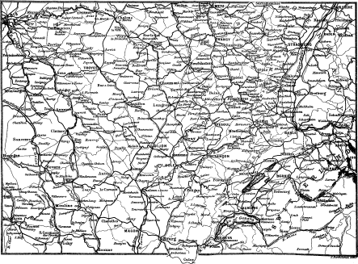
Best resting-places, Sens, Dijon, Macon, Lyons, and Avignon. For “London to Marseilles,” see under that head in the “Continental Time-tables of the London, Chatham, and Dover Railway.” Through tickets sold at their London office.
MARSEILLES
537
PARIS. Start from the station
of the Chemin de Fer de Paris à Lyon, No. 20 Boulevard Mazas, where
purchase one of the Time-tables, 8 sous or 40 cents, the only absolutely
trustworthy tables respecting the prices, distances, and movements of
the trains. Good restaurant at station. Opposite the station is the
H. de l’Univers, and a little farther off the H. Jules
César.
Maps.—For the general route, consult map on fly-leaf; for the details as far as Macon, map page 1; and for the remainder of the journey, map page 26. The fare, third class, from London to Paris by Dieppe, by the London, Brighton, and South Coast Railway, is 17s. From Paris to Marseilles, by the Paris and Lyons Railway, it is £2:7s., time 23 hours; starting from the station of the Chemin de Fer de Lyon at 6.30 A.M., and arriving next day at 5.33 A.M. From Marseilles a train starts at 6.35 A.M. for Toulon, where it arrives at 9 A.M. From Toulon a train starts for Hyères at 9.32 A.M., and arrives at 10.13 A.M. The third-class carriages between Paris and 2 Marseilles are provided with separate compartments for ladies, and with warming-pans. For those going to Hyères, the nearest of the winter-stations, it is better, if possible, not to break the journey, but to take a through ticket from Paris to Hyères (£2:12s.), as every break adds considerably to the expense; moreover, the train passes the most suitable resting-places at a most inconvenient hour in the night. By the first class the whole journey from Paris to Hyères can be done in 18¼ hours for £4:13:6.
The train, after leaving the station, skirts the S.W. corner of the Bois de Vincennes at Charenton and St. Maurice, both upon the Marne, which here joins the Seine. Charenton, 4 m. from Paris, pop. 9000, has a large lunatic asylum founded in 1644. Boarders pay £60 the year. St. Maurice, pop. 4300, has in the Château d’Alfort a veterinary college with an hospital for animals, which takes horses for 2s. per day. It contains a library, museum, and laboratory; and possesses a nursery for the cultivation of grasses. Immediately beyond Fort Charenton are the Maisons-Alfort, pop. 8000, on the Seine. Diana of Poitiers and Robespierre resided here some time.
Villeneuve St. George. Melun.
9½ m. S. from Paris is the pretty town of Villeneuve St. George, pop. 1500, on the Seine, where it unites with the Yères, a deep river flowing through a verdant valley. 3¼ m. farther is Montgeron on the Yères, pop. 1300, with the castle which belonged to Sillery, chancellor of Henri IV. On the other side of the river is the village of Crosne; where on the 1st November 1636 was born, in the house No. 3 Rue Simon, Nicolas Boileau Despréaux, died 13th March 1711. He was a great critic, and the first to introduce French versification to rule. Through Pope and his contemporaries he had also a strong influence on English literature.
13¾ m. from Paris is Brunoy, pop. 1550, an ancient town, which was inhabited by the earliest kings of France. Louis XVIII. created the Duke of Wellington Marquis of Brunoy. The train now traverses the Yères viaduct, 1235 ft. long, on 28 arches 104½ ft. high. 28 m. S. from Paris is the prettily situated town of MELUN, pop. 12,000. Inns: Grand Monarque; Commerce; both near each other, and near St. Aspais. Between them is the omnibus office. Église Protestante. Melun, the Melodunum of Julius Cæsar, occupies both banks of the Seine, and the island in the centre, as well as both sides of the Almont, which here enters the Seine. One long, nearly straight road, under the names of the Avenue de Thiers, Rue St. Ambroise, Rue St. Etienne, Rue St. Aspais, and the Rue du Palais de Justice, extends from the railway station to the northmost limit of the town. In the part of Melun on the left or south bank are large cavalry barracks. On the island is the church of Notre Dame, 11th cent., restored; with a neat 2 storied tower over each transept, 10th cent. The large building 3 behind the church is the principal prison. Very near the church, in the Rue Notre Dame, is the Eglise Protestante, a small chapel. Off the main street, in the part of the town on the right or north bank, is St. Aspais, an elegant church of the 14th cent. surrounded by crocketed gabled chapels. By the side of the main entrance rises a buttressed square tower, terminating in a high peaked roof prolonged into a short spire. In the interior are some delicately sculptured canopy work and 8 windows with valuable old glass. A few yards off the main street is the Hotel de Ville with a round attached turret in each corner; and in the centre of the court a marble statue to Jacques Amyot, born in 1514, “Un des Grandes Reformateurs de la langue française au 16me siècle.” Behind are the public gardens containing some capitals of ancient columns. Near it is the Place St. Jean, with a handsome fountain. North-west from St. Aspais are the Prefecture and the belfry St. Barthélemy, restored in 1858. The Palais de Justice, the theatre, the Gendarmerie, and another of the prisons, are all together at the north end of the town. The gardens of Melun produce excellent pears—some are very large. Hardly 4 m. N.E. from Melun is the Chateau of Vaux-Praslin, containing paintings by Lebrun and Mignard. From Melun the line continues by the side of the Seine till Bois-le-Roi, where it enters the forest of Fontainebleau.
Fontainebleau.
PARIS
MARSEILLES
37
500
FONTAINEBLEAU
pop. 9200, about 2 miles from the Seine, and one from the station;
but omnibuses await passengers for the hotels. Fare, 30 c. For the Cour
du Cheval Blanc of the Chateau, 50 c. The most expensive hotels front
the Chateau. The Londres; Europe; France et Angleterre; Ville de Lyon;
Aigle Noir; Lion d’Or. At the end of the main street, No. 9 Rue Grande,
is the Cadran Bleu. In the Rue de la Chancellerie, near the Cour des
Offices or east end of the Chateau, is the H. de la Chancellerie.
In the Rue de France, the H. de la Sirène. The last 4 hotels are
the most moderate in their charges. Situated among the large hotels
facing the Cour du Cheval Blanc is the Pension Launoy; 1st storey, 13
frs., 2d, 11 frs. per day. For those who come for one day, the best plan
is to enter at the station any of the Chateau omnibuses. Alight at the
end of the Rue Grande, where there is a square with a garden surrounded
with good shops—a bookseller’s with maps, plans, and
photographs—souvenirs made from wood of the forest; a good
confectioner’s shop and some restaurants, where refreshments can be had
either before or after visiting the chateau. Those afraid of losing the
train, should, however, rather take their refreshments at some of the
restaurants opposite the station. From the end of the Rue Grande, the
Cour du Cheval Blanc is about 5 minutes’ walk.
Temple Protestant, in which an English service is also held.
Coach Tariff.—The principal cab-stand is at the end of the Rue Grande at the square. Before starting procure a plan, 1½ fr., of the forest in the shop opposite.
A four-wheeled carriage for 5 persons, with 2 horses, 20 frs. for the 4 day, with a gratuity to the coachman. For 4 persons, with 1 horse, 10 frs. for the day.
Carriages may also be engaged by the hour at the following prices:—
A four-wheeled carriage for 5 persons, with 2 horses, 4 frs. for the first hour, and 3 frs. for each succeeding hour.
A four-wheeled carriage for 4 persons, with 1 horse, for the first hour 3 frs., and each succeeding hour 2 frs. 25 c.
A two-wheeled carriage for 4 persons, with 1 horse, 2 frs. an hour.
Donkeys and mules may be hired at 3 frs. a day.
Fontainebleau deserves a visit, not only to see the Chateau, but to enjoy the delightful air and walks in the gardens and woods, which cover an area of 18,740 acres, intersected by 12,000 m. of roads and footpaths. The palace consists of square towers linked together by congeries of low brick buildings, enclosing spacious courts, each bearing some suggestive name. The roofing is said to occupy 14 acres. The palace is open from 11 to 4. The men who show it attend in one of the rooms on the left side of the “Cour des Adieux,” or “du Cheval Blanc,” which court forms the main entrance. A small fee is expected; but as the Palace belongs to the State, it is not obligatory.
To see the “appartements reservés” an especial order is requisite, procured by letter addressed to “M. Le Commandant des Chateaux.” The “appartements reservés” comprehend sometimes a greater, and sometimes a smaller number of rooms, according to the requirements of the household, but never any of the splendid halls. The order observed in showing the Palace is constantly changed, yet the itinerary we give will be found in the main correct. It is sometimes reversed.
The Chateau of Fontainebleau, as it now stands, was founded by Francis I., who commenced by demolishing the whole of the former edifice, excepting the pavilion of St. Louis, which still exists. Henri IV., who spent £100,000 upon it, doubled the area of the buildings and gardens, and added, among other portions, the gallery of Diana and the gallery des Cerfs. Napoleon I. expended £250,000 upon it, and Louis XVIII. and Louis Philippe contributed also large sums.
Fontainebleau: Entrance. Chapelle de la Trinité.
The principal entrance is at the west end by the Cour du CHEVAL BLANC, the largest of all the courts, measuring 498 ft. by 368. It is also called the Cour des Adieux, because here Napoleon I., forsaken by nearly all his generals, took leave, on the 20th of April 1814, of the ever-faithful soldiers of his Old Guard, from whom he tore himself away amidst sobs and tears, and threw himself into his carriage. On the 19th of March 1815 he was back again in this palace from the island of Elba, wandering with almost infantine joy through the splendid apartments which had witnessed his glory and his wretchedness.
As very little time is given to inspect the different articles, the following abridged list should be read before entering.
The visitor enters by the door under the Horseshoe staircase, which has 46 steps on each side. To the right, the longer of the 2 iron bars in the wall represents the height of Francis I. The first place entered is the Chapelle de la Trinité, built by Francis I. in 1529, and largely 5 decorated by Henri IV. in consequence of the Spanish ambassador having remarked that “the palace would be more beautiful if the Almighty were as well housed as his majesty.” Louis XI. was married in this chapel. The divorce between Napoleon and Josephine was pronounced in it; and here, in 1810, Napoleon III. was baptized. The paintings are by Fréminet, made during the reigns of Henri IV. and Marie de Médicis and Louis XIII. The high altar was finished in the reign of Louis XIII. by Bordogni. The reredos is by Jean Dubois. The statues on each side of the altar, representing Charlemagne and St. Louis, are by G. Pilon. The magnificent angels, which support the escutcheons of France and Navarre, are by Jean Goujon. The 4 bronze angels are by G. Pilon.
Fontainebleau: Apartments of Napoleon.
Ascend staircase to the APARTMENTS OF NAPOLEON. The first room is the Antichambre des Huissiers (ushers), painting by Brenet, 1785. Cabinet des Secretaires, paintings by Vanloo, Doyen, and Hallé. Pass now through a small passage, painted with flowers by Spraendonck, to the most charming Salle des Bains. The walls are of plate glass, on which are painted, in graceful forms and lovely colours, cupids, birds, and flowers. The bath-room opens into the Abdication Room, containing the famous mahogany table, about a yard in diameter, on which Napoleon signed his abdication, 5th April 1814. Walls hung with rich embroidered satin from Lyons. Cabinet de Travail (study) of the Emperor. Beautiful writing desk by Jakob. Painting on ceiling represents law and justice. Bedroom of Napoleon I. and III. Bed restored under Louis Philippe, and hung with silk velvet from Lyons. Round the wall grisaille paintings of cupids, admirable imitations of relief, by Sauvage. Clock, present from Pio VII. to Napoleon. Salon de Famille or Salle du Conseil; dates from François I. and Henri IV., and made by Louis XV. his study. In centre of room mahogany table, 6 yards in circumference, one piece. The 20 red and blue symbolical paintings round wall are by the two Vanloos. On ceiling arms of France on gold ground. Furniture covered with Beauvais tapestry of time of Louis XV. Clock of Louis XIV. Throne-room. Built by Charles IX., ornamented by Louis XIII. and XIV., to which Napoleon I. added the throne. In this room the marshals of France used to take their oath of allegiance. The ceiling magnificently gilt and painted, and chimney-piece in same style. Over it portrait of Louis XIII. The lustre of rock crystal is valued at £2000.
Fontainebleau: Apartments of Marie Antoinette.
APARTMENTS OF MARIE ANTOINETTE and of the Empress Eugenie. Aurora on ceiling by Barthélemy. Arabesques of the panels on green ground. On console tables by Coindrel, 2 ivory vases presented to Napoleon I by the Emp. of Austria. This room was fitted up for Marie Antoinette by Louis XVI., who forged, but did not finish, the window bolts (espagnolettes). The Bedroom. Occupied successively by Marie de Medicis, Maria Theresa of Austria, Marie Antoinette, Marie-Amélie, wife of Louis Philippe, and the Empress Eugenie. The gorgeous drapery and curtains of the bed were presented to Marie Antoinette by the city of Lyons on the occasion of her marriage. 6 Wall hung with the richest satin, hand embroidered. Two wardrobes by Riésener. Clock of Louis XVI. Salon de Musique. Ceiling, Minerva and the Muses by Barthélemy, 1786. Over door the Muses painted in grisaille by Sauvage. Porcelain table by Georget, 1806. Petit Salon, from which a door opens into the
GALERIE DE DIANE or Bibliothèque, built in 1600. The ceiling, divided into compartments, is painted by Pujol and Blondel, representing mythological scenes. In front of one of the windows are suspended the sword and coat of mail worn by Monaldeschi, when he was assassinated on the 15th of October 1657 by order of Christina of Sweden, second daughter of Gustavus Adolphus. The atrocious deed took place in the room immediately below, in the Galerie des Cerfs. The unfortunate man, in parrying the first thrust, had 3 of his fingers cut off. He then fell on his knees before his confessor Father Le Bel, sent him by Christina, and, while praying God for pardon of his sins, one of the murderers thrust his sword into his face; while the other first cut off the crown of his skull, and then pierced his throat, which made him fall to the ground, where he lay breathing for quarter of an hour. Throughout all this terrible scene the kind priest kept bawling aloud with all his might consolation to the dying man. That same evening he was buried, near the holy water basin, in the church of Avon, 1 m. E. from the chateau, at the extremity of the park. Monaldeschi was Queen Christina’s chamberlain, and is supposed to have betrayed some of her secrets. The Marquis begged most piteously Father Le Bel to implore the Queen to spare his life; but when the confessor went to her and beseeched her, in the name of Our Blessed Lord, to have mercy on the unhappy man, she replied with petulance, “that she could not, and that many had been condemned to the wheel who did not deserve it so much as this coward.”
At the extremity of the gallery of Diana is the Salon de Diane, with indifferent modern paintings by Blondel, representing the story of the goddess Diana.
We now enter the Escalier de la Reine, ornamented with hunting scenes by C. Parocel, 1688-1782; Oudry, 1686-1755; and F. Desportes, 1661-1743. The door to the left opens into the Galerie des Chasses, not shown (see page 8). The other leads into
Fontainebleau: Salons de Francois I., Louis XIII., St. Louis. Salon Des Gardes.
LES GRANDS APPARTEMENTS. The Antechamber. Ceiling of pinewood in gilt compartments. Walls hung with ancient Gobelins tapestry. Salon des Tapisseries hung with beautiful tapestry, representing the loves of Psyche. Sevres porcelain vase worth £600, gift to the Empress Eugenie. Salon de François I. Napoleon I. and Charles X. used it as their dining-room. Louis Philippe restored the ceiling. The Flemish tapestry represents royal hunting scenes. In the centre of chimney-piece fresco by Primaticcio, Mars and Venus. The ebony cabinets are of the 15 and 16 cents. Furniture covered with very remarkable Beauvais tapestry. Salon de Louis XIII. The small Venetian looking-glass, one of the earliest manufactured, and the first that came to France, indicates the place where the bed of Marie de 7 Médicis stood when Louis XIII. was born. The paintings on the ceiling and on the walls represent the story of Theagenes and Charicles, which had been translated from the Greek by Jacques Amyot, and dedicated to Francis I. Beautiful marble chimney-piece. Salle de Saint Louis. Over chimney-piece equestrian statue in relief of Henri IV. by Jacquet. Salon des Aides-de-Camp. Portraits in Gobelins tapestry of Henri IV. and Louis XV., 1773-1777. Salle des Gardes, principally by Charles IX., but restored by Louis Philippe. In the medallions above the five real and mock doors are portraits of Francis I., with the allegorical figures of Might and the Fine Arts; Henri II., with figures of Diana and Liberality; Antoine Bourbon (father of Henri IV.), with figures of Hope and Abundance; Henri IV., with figures of Peace and Glory; and Louis XIII., with figures of Religion and Justice. Beautiful chimney-piece by Jacquet, 1590, 17 ft. high and 13 wide. In centre bust of Henri IV., and at each side statues of Might and Peace by Francarville. A very pretty little room, with floor of inlaid wood, corresponding in design with the ceiling, leads to the
ESCALIER DU ROI. The top part of this staircase, built by Louis XV., was originally the Chambre de la Duchesse d’Etampes. The frescoes, representing scenes in the life of Alexander, are chiefly by Niccolo dell’ Abate, indifferently restored in 1836 by Abel Pujol.
GALERIE DE HENRI II., or Salle des Fêtes. The most magnificent hall in the palace, shining with gold, 90 ft. long by 30 wide, lighted on one side by 5 windows looking into the Cour Ovale, and on the other by the same number looking to the gardens. It was built by François I., and decorated by Henri II. for his favourite Diane de Poitiers. The walls are covered with frescoes between gilt coupled columns by Primaticcio, Rosso, and Abate, restored in 1864 by Alaux. The ceiling, of walnut, is divided into 27 compartments, elaborately ornamented with scrolls, mouldings, and friezes, all richly gilt, and enclosing the ciphers of Henri II. and of Diana. The chimney-piece, of rare marbles, covered with fleurs-de-lis, is by Rondelet. At the end of this gallery is one of the entrances into the chapel of St. Saturnin, generally closed (see page 8). We return now to the Escalier du Roi, where we enter the
GALERIE DE FRANÇOIS I., parallel to the apartments of Napoleon, 210 ft. long by 20 wide. It was built by Francis to serve as a communication between the Courts of the Cheval Blanc and of St. Louis. Ceiling in variously shaped gilt panels, producing a curious effect. The frescoes, representing mythological scenes, are chiefly by Rosso, but a few are by Primaticcio, restored by Condere. Bust of François I. From the vestibule of the Horseshoe staircase we enter the
APPARTEMENTS DES REINES MERES et du Pape Pie VII. They were inhabited by Catherine de Médicis and Anne of Austria (mother of Louis XIV.), whose portraits hang opposite each other in the bedroom; and also by Pope Pius VII., more, however, as a prisoner than a guest of Napoleon I. The magnificent bedstead was put up by Napoleon III. for Queen Victoria and Prince Albert, when they were expected to have visited Fontainebleau. The tapestry is of the finest 8 quality from the Gobelins manufactory, and the paintings are by Coypel, Mignard, and other French masters. Antechamber. Portrait of Diana de Poitiers as the goddess of the chase, one of Primaticcio’s best works. Cabinet (Bahut) of time of Louis XIII. Walls hung with embossed leather. Furniture covered with Cordova leather. Salles des Officers. Hung with Gobelins tapestry, representing the story of Esther. Salon. Walls hung with beautiful coloured Gobelins. Furniture covered with Beauvais tapestry. Elegant ceiling, divided into compartments bearing the initials of Anne of Austria and of Louis XIII. The Old Bedroom (see above). Modern furniture in style of Louis XIII. Table in mosaic given by Pio IX., bearing his signature. Very beautiful ceiling by Cotelle de Meaux. Study of Pio VII.—portrait of him by David. Dressing-room—wardrobe of inlaid wood by Riésener, one of the finest in France. Bust of Louis XV. by Lemoyne, 1751. New Bedroom—bedstead of time of Louis XIV., enlarged in reign of Louis Philippe. Salon de Reception—Gobelins tapestry—furniture of time of Louis XV. Bust of Napoleon by Canova. Waiting-room or Salle d’Attente. Gobelins dating from the time of Louis XV. Beautiful clock of Louis XVI. Antechamber. 4 pictures by Breughel, of which one is on wood. Vestibule of the Galerie des Fresques.
GALERIE DES FRESQUES or Des Assiettes. All the pictures in this gallery were painted in fresco in the reign of Henri IV. by Ambroise Dubois on the gallery of Diana, whence they were removed in 1805, and some of them put on canvas. In addition Louis Philippe placed on the walls 128 plates, with views of the royal residences in France, and incidents connected with Fontainebleau. We now enter the gallery leading to the
SALLE DE SPECTACLE or theatre, built by Napoleon III., and seated for 400. Visitors now leave the palace by the staircase of Charles VIII., adorned with a statue of him in stucco.
Fontainebleau: Chapelle de St. Saturnin.
Chapelle Basse de St. Saturnin, built by Louis VII. after his return from Palestine, and consecrated by Thomas à Becket in 1169. The painted glass of the windows was manufactured at Sevres from designs by the Princess Marie, 1836, daughter of Louis Philippe; and the altar is the same at which Pope Pius VII. performed mass during his stay at Fontainebleau from 1812 to 1814. The lower chapel was reconstructed in 1545 by Francis I., upon which he built the Upper Chapel. It was ornamented with charming frescoes, in the reign of Henri IV., about the year 1608. Napoleon III. commenced the restoration.
Adjoining the lower chapel a corridor leads to the Ancienne Salle à Manger de Louis Philippe, or the Galerie des Colonnes, of the same dimensions as the Galerie de Henri II. immediately over it. To the right is the old spiral staircase of Francis I.
Galerie des Cerfs, built by Henri IV., under the Galerie de Diane, ornamented with views of the royal residences, indifferently executed. It was here Monaldeschi was murdered (see p. 6).
Appartements des Chasses, consisting of two rooms, hung round 9 with pictures representing dogs, game, and hunting scenes. The best by J. B. Oudry.
Appartements de Madame de Maintenon, consisting of an antechamber, saloon, boudoir, and toilet-room. They are of no interest further than that it was in one of them, it is said, that Louis XIV. signed the revocation of the Edict of Nantes in 1685, which led to such cruelties. The embroidery on the furniture and screen is by the noble pupils of St. Cyr. Adjoining is the Galerie de Henri II. (see p. 7).
The Musée Chinois, consisting of a valuable and interesting collection of articles from China, cannot be seen without especial permission.
From the Cour du Cheval Blanc an arched way, near the Horseshoe staircase, leads through to the Cour de la Fontaine. In the side facing the lake is the Galerie de François I. Having passed through the porch in the N.E. corner of the Cour de la Fontaine, we have before us the gardens and forests of Fontainebleau, and immediately to the left the Porte Dorée, one of the gates that opens into the Cour Ovale. It is generally closed. On the soffit and sides are frescoes on a gold ground by Primaticcio, restored in 1835 by Picot. The subjects are mythological. Charles V. entered by this gateway in 1539. And by this portal the Duchesse d’Etampes fled from Fontainebleau, driven from it by the haughty and jealous Diana. Eastward to the left we pass the apsidal portion of St. Saturnin, supported by narrow buttresses, faced with pillars and pilasters. Both here and on the Porte Dorée is the device of Francis I., a salamander. The principal entrance to the Cour Ovale faces the Cour des Offices.
At the east end of the palace, fronting the Place d’Armes, connected with the Rue Grande by the Rue de la Chancellerie, is the Cour de Henri IV. or Des Offices, 285 ft. long by 255 wide, occupied by the artillery college, formerly at Metz. The course lasts 2 years. The gateway is grand, but heavy; the buildings contain nothing particular.
Fontainebleau: Drives in the Forest.
Excursions into the forest. Those wishing to walk should provide themselves with a pocket compass and a copy of the plan of the Forêt de Fontainebleau, 1½ fr. In the forest the posts painted red indicate the way back to the town; the black posts lead in the other direction. The coachmen are acquainted with all the roads. The artistic part of the forest comprises only 3719 acres. The following are the three principal drives, each requiring 6 hours:—
1. Croix du Grand Veneur par la Tillaie—Point de vue du camp de Chailly par la Table du Grand Maitre et le carrefour de Belle Vue—Barbison par le Bas Bréau—Gorges d’Apremont et Franchard.
2. Vallée du Nid de l’Aigle—Mont Ussy—Caverne d’Augas—Vue sur le champ de Courses et Mont Chauvet—Gorges et Rochers de la Solle—Rocher St. Germain—Bocages des Ecouettes—Fort l’Empereur—Calvaire—Roche Eponge et Point de vue de Nemorosa.
3. Rocher Bouligny—Rocher des Demoiselles—Gorge aux Loups 10 et Mare aux Fées—Long Rocher et Arcades de la Vanne par la Croix du Gd. Maitre.
The most picturesque parts of the first drive, or perhaps in the whole forest, are the ravines of Apremont, about 3 m. N.W. from Fontainebleau; and Franchard, about 2½ m. W. The second contains the best places for obtaining good general views of the forest, such as from the Croix du Calvaire, near the railway station, but especially from the Fort de l’Empereur, about 2½ m. N. The Gorge aux Loups in the 3d drive, 3½ m. S., leads to a very picturesque part called the Long Rocher. If only one drive can be taken, take the first, 3¼ m. by rail from Fontainebleau.
After Fontainebleau is Thomery. Inn: Popardin, where the famous grape, the Chasselas de Fontainebleau, is grown extensively on walls and trellis-work.
Moret. Jean Sans Peur.
PARIS
MARSEILLES
42
495
MORET, pop. 2000. Inn:
Écu de France. An ancient town on the Loing, with remains of
fortifications, 15th cent., and the two old city gates Paris and
Bourgogne. The church, containing some curious woodwork, is principally
of the 12th cent. The portal and organ are of the 15th. 7½ m.
farther S.E. is Moutereau junction, where the Chemins de Fer of the
Paris and Lyons system unite with those of the Eastern system.
Montereau-faut-Yonne, pop. 7000; station about a mile from the town. Inn: Grand Monarque, where the omnibus stops, near the post office. Those who may require to wait for a train at this junction, should, if time permit, drive up in the omnibus to the town and visit the parish church, with its handsome columns gracefully ramifying into the groining of the roof of the aisles. Suspended to the right of the high altar is the sword of Jean Sans Peur. Beyond this church a fine stone bridge, or rather two continuous bridges, cross the Seine and the Yonne, which here unite. On the tongue of land between them is an equestrian statue of Napoleon I.; and on the bridge over the Yonne a marble slab indicates the spot where Jean Sans Peur was murdered in 1419. On the steep hill overlooking the town is the handsome modern castle of Surville. Montereau has important potteries.
Sens. Thomas À Becket.
PARIS
MARSEILLES
71
466
SENS on the Yonne, pop. 12,400.
Inns: Paris; Écu. The best street, the Rue Royale, extends from
north to south. At the north end is the promenade, and going southwards
up the street, we have first the statue of the chemist Thénard, and then
the cathedral. At the end of the street is the arch erected in honour of
the Duchess of Angoulême, when she visited this city in 1828. Behind are
spacious boulevards, which, together with the promenade, form agreeable
walks.
The Cathedral of St. Etienne was commenced in 972, but nearly rebuilt two centuries afterwards. The façade, though not without beauty, is heavy and massive. The south tower, 240 feet high, has a belfry attached to it. In the interior, coupled columns, alternating with massive piers, run down each side of the nave, supporting pointed arches, over which runs a triforium of round arches on clustered colonnettes. Against the 5th pier left is a reredos, with sculptured canopies. In the chapel immediately behind the high altar is a beautiful relief in marble, representing the death of St. Savinien, first bishop of Sens, who suffered martyrdom in 240. In the adjoining chapel is the mausoleum of the Dauphin, brother of Louis XVI., by G. Coustou, and statues of Archbishop Duperron and his nephew. In the next or 3d chapel, Becket used to officiate. The picture on the wall by Bouchet, 1846, represents his assassination. He stayed, 1166, in the abbey of St. Columba, 1 m. from the cathedral. It is now occupied by the Sœurs de l’Enfance de Jesus. The transepts are lighted by superb glass; but the best window is the second to the right on entering from the façade, painted in 1530 by Jean Cousin. In a glass case in the treasury are the mitre, albe, chasuble, stole, and maniple worn by Thomas à Becket; discovered in 1523 in an old house adjoining the cathedral; yet there does not exist sufficient evidence to prove that they are genuine. In the same case is an ivory crucifix by Girardon. In the case behind are enamels from Limoges, 15th century, and two small paintings on marble by A. del Sarto. Next them is valuable old tapestry. Near two shrines is a deed signed by St. Vincent de Paul. In one of the shrines is a bone of the arm of Simeon. Adjoining the cathedral is the hall, called the Officialité, restored by Violet le Duc. The convent of St. Colombes is about 1 m. from the church, and to the left of the high road. The only portion of the present buildings that existed in Becket’s time is the piece parallel to the Abbey Church. When in France, he lived chiefly in the Cistercian Abbey of Pontigny, 7 m. S. from St. Florentin, page 16, and 13 m. N.E. from Auxerre, page 14. Becket was assassinated at the foot of the altar of St. Benedict in Canterbury cathedral in 1170, and canonised two years afterwards. Down to the Reformation pilgrimages were made to his shrine by devotees from every corner of Christendom. Every 50th year a jubilee was celebrated in his honour.
Troyes.
12 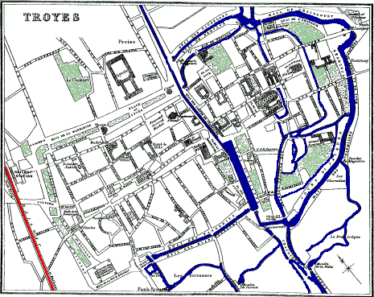
41 m. E. from Sens by the Chemin de Fer de l’Etat is TROYES, pop. 39,000. Hotels: At the station, the Grand Mulet. In the principal street, the Rue Notre Dame, the hotels Saint Laurent, Commerce. In the Rue Hôtel de Ville, the Hôtel des Couriers.
Troyes: Cathedral.
Troyes, the former capital of Champagne, is situate on the Seine,
canalised in the 12th century by Theobald IV. These canals move the
machinery of numerous manufactories of hosiery, paper, and linen, which
produce an annual average value of about two million pounds sterling.
Troyes is famous for the number and beauty of its churches, of which the
most important is the Cathedral of St. Pierre et St. Paul,
situated at the eastern side of the town, the railway station being on
the western or opposite side. This edifice, among the most beautiful
12
in France, was commenced in 1208, but as it was not finished till the
end of the 16th century, represents the different styles of these
intermediate epochs. The fine western façade belongs to the 16th
century, while the portal of the N. transept belongs to the 13th. Three
hundred and seventy-eight steps lead to the top of the tower rising
above the western façade. The building is 352 feet long, and the
transept 154 feet. Two spacious aisles run up each side of the nave,
separated by clustered columns supporting pointed arches, the front row
being surmounted by a narrow mullioned triforium and a lofty clerestory,
both lighted by beautifully-painted glass windows. The height of the
roof of the nave is 92 feet, and of the cupola 192. The glass of the
windows of the choir, of the roses in the transepts, and over the
western entrance behind the organ, is of the 13th cent. The marble
statues of Jesus and Mary in the first chapel, N. side of choir, are of
the 16th cent., and the altar piece, with reliefs in wood, of the 17th
cent.
Troyes: Henry V.
Salle Simard.
Before the high altar in this church Henry V. of England was affianced to the
Princess Catherine, daughter of Charles VI. of France, on the 20th
May 1420. Next day the famous treaty was signed, which secured the crown
of France to Henry by the exclusion of the dauphin Charles, whenever the
poor mad Charles VI. should cease to live. Behind the high altar in
the Lady chapel is a Madonna by Simard, and the window containing the
oldest glass in the church. A stair to the right of the high altar
leads to the treasury, of no great interest. It contains croziers of the
13th century, reliquaries of St. Loup and St. Bernard, with enamels of
the 12th century, a tooth of St. Peter in a small gold box, etc. In
the reliquary of St. Bernard is a bit of the skull of an Irish primate,
St. Malachie, who lived between the 11th and 12th centuries. A few
yards to the N. of the cathedral is the building containing the
Library, open from 10 to 3, with 125,000 volumes and 3600 MSS.,
in a large hall, with windows composed of curiously-painted panelled
panes. Among the illuminated books are a Bible of St. Bernard and St.
Paul’s Epistles, 12th century. In the same building are the
Museum, or picture gallery, with paintings by Watteau, Coypel,
Mignard, etc.; and the Salle
Simard, containing a valuable collection of the Models made
by Simard for his statues and works in relief. Also some statuary by
Girardon, and other French sculptors. The museum is open to the public
on Sundays and feast-days from 1 to 4. On other occasions a small fee is
expected. A short distance eastward from the cathedral is the
Hospice, and a little beyond St. Nizier, with painted panel panes in the
window of the sacristy. The glass in the windows of the church is of the
16th century. Westward, in Rue Urbain IV., is a gem of Gothic
architecture, the church of St. Urbain, built by that Pope
towards the end of the 13th century. The high altar occupies the place
where his father used to sit in the exercise of his calling, which was
that of a cobbler. A short way N. is St. Remi, 14th century,
with a bronze crucifix over the altar by Girardon. Directly W. from St.
Urbain, by the Rue de l’Hotel de Ville, is the Hotel de Ville,
built according to the plans of Mansard, commenced in 1624, and finished
in
13
1670. Beyond is St. Jean, 14th century. The high altar was
sculptured by Girardon, while the painting of the Baptism of our Lord,
forming the reredos of the altar, is by Mignard. Behind, in the chapel
“O Sacrum Convivium,” are some good relief sculptures. From St. Jean,
pass up northwards by the Rue de Montabert. At the N. corner of the
first division is the Post Office; and at the end of the next division
is La Madeleine, commenced in the 12th century, and remarkable
for its magnificent jubé, or rood-loft, constructed by Jean de Gualde in
1508. The beautiful windows behind the altar belong to the same period.
The nearly flat roof might have been called an achievement in Gothic
architecture, if the vaulting did not show signs of weakness. West from
St. Jean is St. Nicolas, 16th century, near the Hôtel Mulet. To
the right of the entrance a broad staircase leads up to a Calvary
containing a colossal statue of Christ. In the chapel below is a statue
of our Saviour by Gentil, representing him as rising from the dead.
Near St. Nicolas is St. Pantaleon, 16th century. To the right on entering is a Calvary by Gentil. On the panels of the pulpit are beautiful reliefs in bronze by Simard. Behind the pulpit is the chapel of St. Crispin, the patron of shoemakers, containing curious groups. The glass of the windows is rich, while the numerous statues on consoles give the church the appearance of a statue gallery.
South from the church St. Pantaleon by the Rue de Croncels, and its continuation the Faubourg de Croncels, is the small chapel of St. Gilles. In this neighbourhood, 1½ mile northwards from the barracks of the Oratoire, by a road through gardens and fields, are the village and church of St. André, of which the principal feature is the west portal, constructed at the expense of the inhabitants in 1549, and ornamented by Gentil.
Those who prefer to drive through the town should follow the order we have adopted. A cab for four costs 3 frs. per hour; and for two, 2 frs. However, before entering request to see the tariff.
Troy Weight.
The weight known by the name of the Troy weight was brought from Cairo during the time of the crusades, and first adopted in this city. Troyes was the headquarters of Napoleon I. during his struggles in 1814.
Villeneuve-sur-Yonne.
PARIS
MARSEILLES
79
458
VILLENEUVE-sur-yonne, pop. 5100. Hotel:
Dauphin. In the old castle here of Pulteau the man “au masque de Fer”
spent some days while on his way to the Bastile (p. 158). Villeneuve is joined to
its suburb, Saint Laurent, by a bridge 700ft. long. 5 m. beyond, or
84 m. from Paris, is St. Julien du Sault, pop. 1500. Hotel:
Des Bons Enfants. A poor town, nearly a mile from the station, but
possessing a fine church, of which the greater part of the choir, as
well as the S. and N. porches, belong to the 13th cent., and the
remainder of the edifice to the 14th-16th cents. Overlooking the town,
and distinctly seen from the station, is a ruined chapel belonging to
the 13th cent.
PARIS
MARSEILLES
91
446
JOIGNY, pop. 7000. A good
resting-place. Hotels: The Poste, between the station and the
bridge; the *Bourgogne, on the quay on the right bank of the Yonne,
which is the principal promenade. The most important part of the town
occupies the hill rising from the promenade, in which are situated St.
André, the most prominent of all; St. Jean, 16th cent.; and St.
Thibault, 15th cent.
PARIS
MARSEILLES
96
441
LA ROCHE, on the Canal
de Bourgogne, at the confluence of the Armançon and the Yonne. Large
refreshment-rooms. Junction with branch line to Les Laumes, 79½ m.
southwards, passing by Auxerre, Cravant, Sermizelles, Vezelay, Avallon,
and Semur. (See map on p. 1.)
Auxerre.
12½ m. S. from La Roche is Auxerre, pop. 16,500, on the Yonne and the hill rising from the river; Hôtel Laspard. Seen from the station, the most prominent object is the Cathedral, to the right is St. Germain, to the left St. Pierre, and, above St. Pierre, the Tour Guillarde or Clock Tower, at the market-place. The Cathedral, St. Etienne, was rebuilt in the 13th cent., over a crypt of the 11th. The tower over the western entrance is 230 feet high. The north and south portals are crowded with statues. The entire length of the church is 332 feet, and of the transepts 128 feet. 110 feet intervene between the floor and the vaulted roof of the nave and choir, and the pillars are 79 feet high. The great western window, and the end windows of the N. and S. transepts, contain superb glass set in light flamboyant tracery. Adjoining is the Préfecture, formerly the Episcopal Palace, built in the 13th cent. Near the Cathedral is the hospital and the church of St. Germain, with a curious crypt of the 9th cent., but restored in the 17th. Apply to the concierge at the gate beside the now isolated tower, 173 feet high, built in the 11th cent. St. Pierre, begun in the 16th and finished in the 17th cent., is in Italian-Gothic.
Near the Hôtel de l’Épé is the church of St. Eusebe, founded in the 12th cent. The most remarkable parts of the church are the tower, the capitals of the fascicled columns, and the glass of the windows around the chapel of the Virgin behind the high altar. In the principal walk is a statue of Maréchal Davoust. Coach from Auxerre to Pontigny and Chablis. (For Pontigny, see page 16.)
13 miles east from Auxerre is Chablis, pop. 3000, Hôtel Lion d’Or, on the Serein. The vineyards, occupying 30,000 acres, produce the well-known white wine, of which the best growths are those of Val Mur, Vauxdésir, Grenouille, Blanchot, and Mont de Milieu. When the quality of the vintage is good, the wines are dry, diuretic, and of a flinty flavour.
Cravant, pop. 1000, Inn: Hôtel de l’Espérance, on the Yonne, nearly a mile from the station, owing its importance to its position at 15 the junction of the branch to Clamecy, 22 miles S., with the line to Les Laumes, 56 miles S.E. Cravant is 85 miles from Nevers by Clamecy, and 116 miles from Paris by La Roche. (See map, page 1.)
Sermizelles. Vezelay.
37¼ miles from La Roche, 14¼ miles from Cravant, and 42½ miles from Les Laumes is Sermizelles, the station for Vezelay (6¼ miles distant), for which a coach awaits passengers. Fare, 1½ fr. At the station there is a comfortable little inn, the Hôtel de la Gare, where a private vehicle can be had (20 frs.) for visiting Vezelay, Pont Pierre-Perthuis (for the view), 2 miles distant, and St. Pêre; then back to Sermizelles Station. See also p. 354.
Vezelay, pop. 1300. Inn: Hôtel de la Poste. An ancient and decayed town on the top of a hill, possessing one of the finest ecclesiastical edifices in France, the Church of the Madeleine; restored by Violet le Duc. The narthex belongs to the 12th cent., the nave and aisles to the 11th, and the choir and transept to the 12th and 13th. The length of the building is 404, and the height of the roof 70 feet. The exterior is unadorned, and supported by plain receding flying buttresses. The doors and tympanum of the western entrance are enclosed by a wide expanding circular arch with four sculptured ribs. Above rises a large window with boldly sculptured mullions. Within the doorway is a spacious narthex, of which the triforium is filled with antiquities connected with the monastery which adjoined the church. To appreciate the noble proportions, simplicity, and harmony of this vast edifice it is necessary to have the door between this narthex and the nave opened. The nave and aisles are lighted by forty small round-headed windows, and their roofs rest on forty semicircular arches springing from massive piers, with attached columns ornamented with the peculiar capitals of their period. A triforium runs round the transept and choir. Eleven circular columns, of one stone each, support the arches which enclose the sanctuary. From the S. side of the choir a door opens into what was formerly the “salle capitulaire,” built in the 12th cent. The cloister is a modern addition by Violet le Duc, who also constructed the altar in the beautiful crypt below the choir. Near the abbey church is St. Martin’s, 12th cent., and St. Etienne, now used as a storehouse. The Port St. Croix (15th cent.), as well as parts of the fortifications, still remain. Becket. Thomas à Becket celebrated mass in the Madeleine on the 15th May 1166; when also, with the awful forms provided by the Roman ritual, he pronounced sentence of excommunication against John of Oxford and others, and would have included Henri II. himself, had he not been informed that the King at that time was seriously ill. At Vezelay, in 1190, the crusaders under Richard Cœur-de-Lion joined those under Philippe-Auguste to set out on the third crusade. Vezelay is the birthplace of Theodore Beza (June 24, 1519), one of the pillars of the Reformed Church. In his arms Calvin expired.
1¼ m. from Vezelay is St. Pêre, pop. 2000, with a beautiful church of the 14th cent., but the elegant steeple is of the 13th. 5 m. from St. Pêre is the Château Baroche, which belonged to Marshal Vauban.
169½ m. E. from Sermizelles by rail is Avallon, pop. 6000, on the Cousin. Hotels: Chapeau Rouge; Poste. The parish church of St. Lazare, 12th cent., is a beautiful but somewhat peculiar specimen of Burgundian architecture. Coach awaits passengers at the station for Saulieu, 17 miles distant, pop. 4000. Hôtel de la Poste. An interesting town with a church, St. Andoche, 12th cent. The vineyards of Avallon produce good wine. The best keeps well in bottle from fifteen to twenty years. 10 miles S.W. from Avallon is the Forêt de Morvan, whence Paris receives firewood, sent down the Yonne and Seine in rafts.
Semur.
After Avallon comes Rouvray, with vineyards producing good wine, and then, 20 miles from Avallon and 12½ from Les Laumes, is Semur, pop. 4150. Hotels: Côte d’Or; Commerce. Picturesquely situated on the Armançon, about a mile from the station. The parish church of Notre Dame was founded in 1065 by Robert I., Duke of Burgundy, rebuilt in the 13th cent., and repaired in 1450. The entrance is provided with a sculptured porch. The windows of the N. aisle contain fine old glass; the subjects are portrayed with great expression and quaintness. In this part is a beautifully wrought tabernacle of one stone 16½ feet high. At each transept is a small cloister. There are some pleasant walks around and about the town. The dungeon tower and part of the ramparts still remain. 12½ miles N.E. this branch line joins the main line at Les Laumes, 160 miles from Paris. (See page 19, and map page 1.)
Saint Florentin.
PARIS
MARSEILLES
107½
429½
SAINT FLORENTIN,
pop. 3000. Inns: At station, H. de la Gare. In town,
H. Porte Dilo. Pilgrims to Pontigny alight here, whence a coach
starts in the afternoon for Chablis and Ligny, passing within a mile of
Pontigny. There is a small inn at the part where the Pontigny road
separates from the Chablis road.
Saint Florentin is on an eminence more than a mile from the station. The parish church, 12th to 15th cents., is small, but interesting. The windows contain 15th and 16th cent. glass, repaired with modern pieces. The sanctuary is surrounded by a screen composed of slender colonnettes standing diagonally, and is shut off from the nave by a beautiful rood-loft. Behind the high altar, which is elaborately sculptured, is a relief, 1548, sadly mutilated, representing the death and resurrection of Jesus Christ.
At Pontigny there is a small but comfortable inn, the Hôtel St. Éloi, but pilgrims to the shrine of St. Edmund are generally lodged in the abbey buildings. From Pontigny a coach runs every other day to Auxerre, 13 m. S.W., stopping at a café near the station. The greater part of the church of Pontigny was built in 1150. It is a plain vast edifice with narthex and round turret at main entrance. The interior, which is grand and imposing, is 355 ft. from W. to E., 72 ft. 17 wide, and 72 high, and is upheld by 30 arches springing from lofty massive piers. There are 11 chapels in the choir, but none in the nave. A row of small round-headed windows extends round the church below the arches, and another, exactly similar, above them. In a shrine, 18th cent., behind the high altar are the bones of St. Edmund, Archbishop of Canterbury, who died in 1243 at a village in the neighbourhood. The original shrine, a plain wooden coffin, is upstairs in the cloister. The view of the interior of the building is spoilt by an ugly screen, rendered necessary to shut off the sanctuary from the rest of the church to make it more comfortable for the villagers, whose parish church it has now become. The abbey buildings, of which parts still remain in good condition, were inhabited by Becket. In the treasury is the black strip of a stole he used to wear, sewed on to another stole. Also relics of St. Edmund, and curious deeds connected with him and others, who had retired to this, then an austere Cistercian monastery. The walls of the cloister are hung with engravings representing scenes in the life of St. Edmund.
Becket arrived at this abbey on the 29th of November 1164, and remained till Easter 1166. From Pontigny he went to Vezelay, and from Vezelay to Sens.
Tonnerre.
PARIS
MARSEILLES
123
414
TONNERRE, pop. 6000, on
the Armançon. Inns: Lion d’Or; Courriers—both near each
other. The street St. Pierre, to the left of the Lion d’Or, leads past
the church of Notre Dame (now condemned) up to the cemetery, and to the
church of St. Pierre, situated on a terrace right above the town. At the
foot of this hill is a beautiful spring of water, enclosed in a circular
basin about 40 feet in diameter, called the Fosse Dionne; but it is in a
dirty part of the town, and used by the washerwomen. A straight
street to the right of the Lion d’Or leads down to the hospital, built
in 1834, the original part of which, built by Marguerite de Bourgogne in
1293, is now the church of the hospital. Her remains repose under a
beautiful mausoleum in front of the high altar (died September 4, 1308).
To the left is the mausoleum of the Marquis de Louvois (died 1691). The
arrondissement of Tonnerre produces some excellent wine.
Tanlay.
PARIS
MARSEILLES
127½
409½
TANLAY, pop. 1000, on the
Armançon. A small village with a handsome castle in an extensive
park. The oldest part was built by Guillaume de Montmorenci, in 1520,
but by far the largest portion by a brother of Admiral Coligny, in 1559.
The vast façade is flanked by two wings. The principal court is 79 feet
by 36. In a
18
room in the second story of the Tour de la Ligue the leaders of the
Protestant party used to meet under the presidency of Admiral Coligny.
A fresco on the ceiling represents, under the disguise of the gods
of Olympus, the persons who took the most prominent part in the
political and religious events of that period. Catherine de Médicis is
portrayed as Juno, Charles IX. as Pluto, and the Condé as Mars. Round
the room are a series of curiously-constructed recesses, communicating
with each other in the walls. The largest of the splendid chimney-pieces
is 12½ feet high by 7 wide. Beyond the grounds are the ruins of the
abbey of de Quincy, and the well of St. Gaultier, both of the 13th cent.
At this station is a coach for Cruzy-le-Chatel, pop. 1000, time 1 hour
45 minutes, among forests, and famous for truffles.
Ancy-le-Franc. Montbard.
PARIS
MARSEILLES
136
401
ANCY-LE-FRANC,
pop. 2000. The fine castle here was commenced in 1545, and built
according to the plans of Primaticcio.
PARIS
MARSEILLES
142
395
NUITS-SOUS-RAVIERES, pop. 700.
Important junction with the Paris and Bâle line, by Troyes (see page 11), by a branch extending 72 miles north-east to
Bricon, passing Châtillon, 22 miles north-east from Nuits. In the
environs of Nuits-sur-Armençon are the ruins of the castle of Rochefort,
17th and 18th cents.
PARIS
MARSEILLES
151
386
MONTBARD, pop. 3000, on
the Canal de Bourgogne. Inn: Hôtel de la Poste. Buffon, the celebrated naturalist, was born
in this small village on the 7th of September 1707. His château,
a plain large house, is entered from the extremity of the main
street farthest from the station. The grounds are extensive, and laid
out in terraces. On the western front of the terrace is the small square
house, with three windows and one door, into which he retired at five in
the morning to pursue his studies. In another building he kept his
manuscripts. In the grounds of the château, on the walk below the
dungeon tower of the castle of the Dukes of Bourgogne, is the small
column erected to his memory by his son, who fell a victim to the
tyranny of Robespierre, only fifteen days before the downfall of that
monster. Situated on a terrace at the entrance of the grounds is the
parish church, containing the tomb of Buffon. A black stone slab
over the door bears the following inscription:—
Buffon
A été inhumé dans le
Caveau de cette chapelle
Le 20 Avril 1788.
There is also a bronze statue of him here. 3½ miles from Montbard is the abbey of Fontenay, founded in 1118; now a paper mill.
PARIS
MARSEILLES
160
377
LES LAUMES.
Inn: H. Duvernet. Overlooking the station is Mount Auxois,
1370 ft. above the sea. Near the top, and about 1½ mile from the
station, is the ancient Alesia (Alise-Sainte-Reine, pop. 900.
Inn: H. du Cheval Blanc), where Cæsar, B.C. 50, defeated the Gauls under Vercingetorix,
whose statue by Millet, pedestal by V. le Duc, stands just above
the hospital. The church of St. Thibault (14th cent.) has some curious
sculpture. It is visited by pilgrims on the 7th of September. Four miles
from Les Laumes is the Château Bussy Rabutin, in a beautiful park of 84
acres, built by Renaudin, one of the benefactors of the abbey of
Fontenay, about the year 1150. It contains a valuable collection of
portraits of historical personages by eminent artists. (See
page 14.)
PARIS
MARSEILLES
165
372
DARCEY, pop. 850, 2 miles
from its station, at the foot of steep mountains 1315 ft. high.
Inn: Hôtel Guyot. Near the village are curious caves, and a
subterranean lake, the source of the Douix. Omnibus at station for
Flavigny, 1½ mile distant,
pop. 1300, on a hill 1390 ft. above the Lozerain. Remains of fine old
walls. Church 13th cent., with rood-loft 16th cent. Houses of 13th,
14th, and 15th cents. Convent of the Ursulines, with splendid view.
PARIS
MARSEILLES
171¼
365¾
VERREY, pop. 900.
Inns: Hôtel de la Gare; Bourbogne. Station for the Source of
the Seine, 6¼ miles S. by the path over the hill through the woods,
but 9¼ by the carriage-road, which follows the railway till the village
of Villotte, pop. 800, where it ascends the hill towards Bligny-le-Sec,
pop. 700, 5 miles from Verrey, and after passing the farmhouse
Bonne Rencontre joins the Dijon road. Then turn to the left and follow
the Dijon road to a few yards beyond the 33 kilomètre (Côte d’Or) stone,
where take the narrow road to the left, which passes first the farmhouse
Vergerois and then descends to the source of the Seine (1545 feet above
the sea), under an artistic grotto in the midst of a little garden
enclosed by a railing. The keeper lives in the house beyond. The tiny
infant stream issues forth under the protection of a recumbent statue of
the river divinity. Coach there and back 10 frs., or guide 5 frs.
It is not necessary to return to Verrey. Those who please can go back by
the Dijon road to St. Seine, on the Cressonne, 5 miles south, pop.
1000. Inns: Mack; Soleil d’Or. With a 14th cent, church.
A diligence runs between it and Dijon. The railway station for St.
Seine is Blaizy-Bas, 7½ m. distant.
PARIS
MARSEILLES
179
358
BLAIZY-BAS, situated
at the commencement of the tunnel which pierces through the basin of the
Seine to that of the Rhône. It is 13,440 feet long, and 1330 feet above
the sea.
PARIS
MARSEILLES
190
347
VELARS, pop. 1400. After the
preceding station of Malain, and before reaching the next station,
Plombières-sur-Ouche, there is some bold railway engineering. The
viaduct of the Combe-Bouchard is on two tiers of arches and is 492 feet
long, while that of Neuvon is 774 feet long. From Velars commences the
branch to Nevers by Autun, 74½ miles from Nevers. (For Autun, see
page 24.)
opp. 20 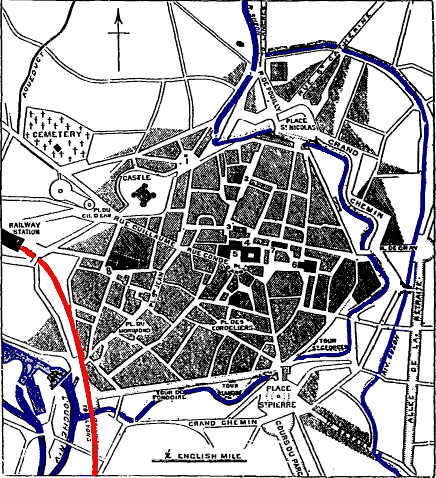
The principal street is the Rue Guillaume. To the left is the Castle built by Louis XI., now the Gendarmerie. Beyond, at No. 1, are the Place and Statue of St. Bernard. No. 2 is the Préfecture. That large building at the foot of the Rue Condé, Nos. 4 and 5, is the ancient Palace of the Dukes of Burgundy, containing the Hôtel de Ville, the Museums, and the Post Office. No. 3 is the Church of Notre Dame; No. 6 St. Michel; and No. 7 the Theatre. Opposite the Palace, at No. 9, is the Palais de Justice. The church near the station (No. 8) is St. Bénigne, easily recognised by its lofty needle spire. Close to it is St. Jean, the church of Bossuet.
PARIS
MARSEILLES
196
341
DIJON, pop. 48,000. Good refreshment-rooms at the station.
Hotels: La Cloche, in the Rue Guillaume; and the Jura, near the
station. Near the Cloche is the Galêre. Just outside the arch, the
Bourgogne and the Nord. In the Rue Bossuet, the Genève. Dijon is famous
for mustard, gingerbread, and the liqueur Cassis.
Cabs, 1 fr. 75 c. the first hour, and 1 fr. 50 c. every succeeding hour. Coaches daily to Ancey, Fleury-sur-Ouche, La Cude, Cissey, and St. Seine. The St. Seine dil. starts daily from the inn, Hôtel du Commerce, 82 Rue Godrans, and takes about 3½ hours. From St. Seine an excellent road leads to the source of the Seine, 5 m. distant. (See page 19.)
Dijon: Salle des Gardes. Museums.
The most interesting buildings in Dijon are near the palace, which
was inhabited by Jean Sans Peur, Philippe le Bon, and Charles le
Temeraire; but of that ancient building there remain only the Tour de
Brancion, the Salle des Gardes, the kitchens and vaulted rooms on the
ground-floor, and the Tour de la Terrasse, 152 feet high, ascended by
323 steps, and commanding a bird’s-eye view of the whole town. The rest
is modern, and is occupied by the Hôtel de Ville, the Post Office, the
École des Beaux Arts, the Museums, and the Protestant church. The museum
is on the right side of the great court, and is open to the public on
Sundays. Other days a fee of 1 fr. is expected. In the Salle des Gardes are the
magnificent mausoleums of Philippe le Hardi, 1342-1404, and of his son
Jean Sans Peur, 1371-1419, with his consort Margaret of Bavaria. Of the
two, the first is the more elaborate. It is in pure black and white
marble, set round with a delicate frieze, and adorned with forty
statuettes representing his most famous contemporaries. Among the
articles which belonged to them in this room are three
beautifully-carved folding altar-screens for private chapel service;
and, under a glass case, the ducal crown, the cup of St. Bernard, and
the crozier of St. Robert, first abbot of the Cistercian order, died
1098.
21
The chimney-piece in this hall is 30 feet high and 20 wide. Two statues
of mail-clad knights stand on it, apparently a yard high each, but in
reality 6 feet 2 inches. The picture-gallery contains a few choice
paintings, and some good statuary. No. 402, St. Jerome, is considered
one of the best. Down stairs is the Musée Archéologique, and the
kitchen, nearly 50 feet square, and provided with 6 chimneys. Fronting
the Palais is the Place d’Armes, with its shops and houses arranged in a
kind of horse-shoe curve. Behind the palace runs the Rue des Forges.
Nos. 34 and 36 is the Maison Richard, formerly the residence of the
British Embassy to the Court of Burgundy. At the top of the spiral
staircase is the “Homme au panier,” a statue 4 feet 6 inches
in height, on a pedestal at the topmost step, representing a manciple or
serving-man bearing a basket on his right shoulder, out of which spring,
like so many stems of wheat, nearly a score of vaulting ribs for the
roof that closes in the staircase. No. 38, the Maison Milsand has a fine
Renaissance façade, also some sculpture in the court. On No. 52 and 54
of this same street is exhibited a reproduction of that kind of double
arch seen in the Hotel de Ville.
Dijon: Notre Dame.
St. Benigne.
Close to the Rue des Forges is Notre Dame, consecrated in 1331,
a very beautiful and interesting specimen of Burgundian
architecture. At the east end is the house Vogue, in the Renaissance
style, and farther east, in the Rue Chaudronnière, the Maison des
Cariatides. A short distance from the front of the Hotel de Ville
is the Palais de Justice, formerly the palace of the Parliament of
Burgundy. The ceiling of the Cour d’Assises is of massive carved
chestnut, 17th cent. The crucifixion in the same room is by Belle. At
the end of the Salle des Pas Perdus is the pretty little chapel which
belonged to the parliament house. Near the theatre is St. Etienne,
founded in the 10th cent., and partly rebuilt in the 18th, but now the
corn-market. At the end of this same street, R. Vaillan, is St.
Michel, rebuilt in the 16th cent., with a few curious frescoes. Standing
at the Arc de Triomphe, looking down the Rue Guillaume, we have, towards
the left, the chateau built by Louis XI. in 1478, or rather what remains
of it, converted into the Gendarmerie; and a little to the N.E. by a
wide Boulevard, the Place and statue of St. Bernard, who was born (1091)
at Fontaine Lez-Dijon, in the chateau beside the curious little church,
2 miles N.W. by the road of that name. Towards the right is St. Benigne, easily
recognised by its slightly twisted needle spire, built in 1742, 300 feet
high, and a little inclined by the tempest of 1805. The crypt and the
porch belong to the 11th cent., the remainder to the 13th. In the south
aisle is the
22
slab tomb of Ladislaus Czartoryski (1388), and adjoining the beautiful
mausoleum of Joannes Berbisey. In the N. aisle, in the baptistery
chapel, are deposited the remains of Jean sans Peur. Near St. Benigne is
St. Philibert, 12th cent., with a narthex and a beautiful crocketed
spire. It is now used as an artillery store.
Dijon: St. Jean. Bossuet.
Asile des Aliénés.
From this the narrow street, Rue des Novices, leads to St. Jean,
founded, as the tablet in the church states, in the 2d cent., rebuilt in
1458, and restored in 1866. The vault of the roof is bold, the tracery
of the windows nearly rectilinear, and the mural paintings not without
merit.
Bossuet was baptised
in this church, and born in No. 10 of this “Place,” 27th September 1627.
Among the writings of this eloquent and illustrious prelate the finest
is the funeral oration on the death of Henrietta Anne, the daughter of
our Charles I., and wife of the Duke of Orleans. Southwards is St.
Anne, 1690. At the Octroi gate, beside the railway, is the entrance into
the Asile des
Aliénés, formerly the Chartreuse, founded by Philippe le Hardi
in 1379. Fee, 1 fr. On the portal (14th cent.) of the chapel are
the kneeling effigies of Philippe and his spouse Marguerite, accompanied
by Sts. Antoine and Catherine, whose figures are portrayed in the
beautiful glass (15th cent.) of the chancel windows. The visitor is next
taken to the well called Le Puits de Moise, 22½ feet in diameter,
consisting of a hexagonal pedestal, having on each side a statue of one
of the prophets, by Claux Sluter in the 14th cent., the sculptor of the
ducal monuments in the Palais des Etats. The statue of Moses is the
least successful, and that of Zachariah the most expressive. The house
contains on an average 500 patients. Dijon is not a town for sightseers,
but an admirable town for resting during a long journey. The Cloche and
Jura are comfortable houses, and although La Galêre is less so, its
charges are more moderate, while its fare is better. There are a number
of pleasant walks. Just beyond the arch is the Promenade du Chateau
d’eau, and at the foot of the railway station the Botanic Gardens.
Towards the extremity of the gardens is a black poplar 490 years old.
The southern continuation of the Place de St. Etienne leads by the Rue
Chabot Charny, the Place St. Pierre, and the Cours du Pari (1465 yards
long), to the public park. From Dijon the rail runs southwards parallel
to the slopes of the famous wine producing hills of the Côte d’Or,
extending from N.E. to S.W., and attaining an elevation of 324 feet.
Behind them rises another range, reaching the height of 1315 feet, and
sheltering the lower range from the cold winds. Between Dijon and
Meursault grow the first-class Burgundy wines; while south from
Meursault follow the
23
Macon wines. First-class Burgundy is at its best after having been ten
years in bottle. The inferior classes can hardly stand three years.
Gevrey-Chambertin.
PARIS
MARSEILLES
203
334
GEVREY-CHAMBERTIN, 1¼ mile from station,
pop. 2000. Famous for their first-class growths, of which the best are
the red and white Chambertin. Bèze, St. Jacques, Mazy, and Vèroilles, in
the commune of Gevrey, produce also first-class Burgundies.
PARIS
MARSEILLES
206¼
330¾
VOUGEOT, on the Vouge,
pop. 500, ¾-mile from station. Inn: Groffier. Here there are
above 125 acres of vineyards producing first-class Burgundies. Among the
most distinguished are the Romanée St. Vivant, Romanée Conti,
Richebourg, and La Tache.
PARIS
MARSEILLES
209½
327½
NUITS, pop. 4000. Inn:
Trois Maures. Omnibus awaits passengers. The best vineyard here is the
St. George, which produces a wine of an exquisite flavour and a delicate
and delicious bouquet. The church, St. Symphorien, belongs to the 13th
cent., and St. Denis to the 14th. 8 miles from Nuits is the abbey
of Citeaux, now used as a house of detention for youthful criminals, who
are trained here to be agricultural labourers. This abbey, founded by
Robert de Molesme in 1098, had at one time 3600 dependent convents of
the Cistercian order, and from it went forth four of its abbots, to
assume the keys of St. Peter. The greater part of the buildings was
rebuilt in 1798.
Beaune.
PARIS
MARSEILLES
219
318
BEAUNE, pop. 12,000.
Hotels: Chevreuil; France. On the stream Buzoise. This town is
the headquarters of the merchants who deal in Burgundy wines, as
Bordeaux is that of the claret merchants. Around it are the first-class
vineyards of Beaune Pommard, Volnay, and Romanée. Of these the Volnay
vineyards, extending over 532 acres, produce the most valuable wine,
under the names of Bouche d’Or and Caillerets, and the Pommard under
that of Commarine. The town is of poor appearance. The principal church,
Notre Dame, founded in the 12th cent., contains semicircular and
equilateral-triangled arches and cusped and Corinthian capitals.
In the Place Monge, off the street de l’Ile, is a bronze statue to Gaspard Monge, the inventor of descriptive geometry, born at Beaune in 1746. To him France is indebted for the establishment of the Polytechnic School. Contiguous to the Chevreuil Inn is the hospital, built in the 15th cent.—a curious and interesting building. The Salle de Conseil upstairs is hung with Aubusson tapestry, and contains also a painting of the Last Judgment by Roger van der Weyden. 24 Near Beaune is Savigny, with a château built in 1672; in the neighbourhood are the Fontaine Froide, the ruins of the abbey of St. Marguerite, and the Roche Percée.
Meursault.
PARIS
MARSEILLES
223½
313½
MEURSAULT, pop. 3000,
1½ m. from the station. Omnibus awaits passengers for the Inn. The most
distinguished wines produced here are the Goutte d’Or,
a golden-coloured wine, and the Perrières, a dry white wine of
a slightly sulphureous taste. In the neighbourhood is Puligny, where the
delicious sparkling white wine called Montrachet is grown.
PARIS
MARSEILLES
228
309
CHAGNY, pop. 4200.
Inn: Commerce. Junction with line to Nevers 102 m. W.,
passing Nolay 5 m. W., Autun 26 m. W., Montchanin 18 m.
W., and Le Creusot 22 m. W. (see page
25, and map page 1). From Chagny
southwards commence the Macon wines, of which the vineyards around
Chagny produce a first-class quality.
Nolay, pop. 5000. Inns: Cheval Blanc, La St. Marie. The vineyards in this neighbourhood produce a good white Macon. A few miles distant is the Vallon de Vaux-Chignon, below cliffs 200 ft. high. In a deep fissure is the source of the Cusane. 3¼ m. E. are the ruins of the castle Rochepot, 15th cent. In the church of the village is a remarkable echo. 8 m. beyond is Epinac, pop. 5000, with coal mines.
Autun.
26 m. W. from Chagny is Autun, pop. 13,000. Hotels: Poste; Cloche. This modernised little town, the ancient Bibracte, claims with Trèves the honour of having been built before the Roman invasion. Cæsar spent a winter in this city with two Roman legions; and at a later period, when the Emperor Augustus went to Gaul, he made Bibracte his headquarters, and erected so many magnificent public buildings that the name of the town was changed to Augustodonum, modernised into Autun. Napoleon III., in his “History of Cæsar,” considers, however, that the site of Bibracte was on the summit of Mount Beauvray, 14 miles westwards, where coins of Gaul, mosaic pavements, fragments of pottery, and an enormous number of amphoræ, have been discovered. The walls of Autun were 10,000 feet in circumference and 8 feet thick, and were garnished with 40 towers, and pierced with four large gates, of which two—the Porte d’Arroux, 55 feet high, and the Porte St. André, lately restored—still remain. The Porte d’Arroux and the temple of Janus (a plain square tower) are behind the railway station. But the Porte St. André, adjoining an ancient church, is on the town side of the line at the Faubourg St. Jean. The Cathedral, which commands the entire city, was completed in 1178. The architecture of the modern portions is Gothic, but the more ancient is Romanesque. The two towers have been restored and adorned with Gothic spires. The interior contains several windows of painted glass. The entrance is by a handsome open portico with sculptured arches and columns. From the Porte St. 25 Blaise (straight up from the cathedral) a cross road leads to the Pierre Couchard (Coarre), a pyramidal monument of great antiquity.
In the College is the Public Library, with 12,000 volumes; and the Picture Gallery, containing paintings by Horace Vernet. In 1789 Talleyrand, afterwards Prince Talleyrand, was Bishop of Antun.
Montchanin. Le Creusot.
73 m. E. from Moulins, 86 m. E. from Nevers, 18 m. W. from Chagny, is Montchanin, pop. 2500. Inn: H. des Minis; its omnibus awaits passengers. The town, nearly a mile from the station, consists chiefly of the houses of the workmen employed in the surrounding coalpits, foundries, and large artistic brick and tile works. Outside the town is the Étang Berthaud, the reservoir of the Canal du Centre, which connects the Saône with the Loire, between Chalon and Digoin.
78¼ m. E. from Nevers, 7¾ m. W. from Montchanin, and 26 m. W. from Chagny, is Le Creusot, pop. 25,000, of whom 6300 are employed in the ironworks. Hotels: Commerce; Rodrigue, near each other in the principal street, the Rue d’Autun. Their coaches await passengers. Le Creusot is on the southern slope of one of the wooded hills which enclose this valley, 1¼ mile long and ½ mile wide, occupied by the coal-pits, forges, and foundries of Schneider et Cie, bought by them from the former owners, Manby, Wilson, and Co. Detached straggling suburbs occupy the other slopes of the hills. In all the general feature is the same, rather untidy streets and houses, with parks, shops, and cafes to suit. The streets are full of children, but few priests, policemen, and beggars. In the principal square, near the two hotels, is a statue by H. Chapu of Eugene Schneider, erected in 1878 by the workmen and inhabitants. The view of the works from the road is imposing, and, although they contain a forest of chimneys and all manner of powerful machinery, there is no noise.
West from Le Creusot, and 65¼ m. E. from Nevers, is Etang, with an ancient castle. 51½ m. E. from Nevers is Luzy, pop. 3000, on the Alène. Inn: H. Delaigue, close to station. Coach 12 m. to St. Honoré-Les-Bains, with alkaline sulphureous springs, 90° Fahr. 33 m. E. from Nevers is Cercy-la-Tour, on the Aron, 53 m. south from Clamecy by the rail, skirting the Canal Nivernais. Inn: H. de la Croix, close to station. 23½ m. E. from Nevers is Decize, pop. 4800. Inns: Paris; Commerce. Omnibus awaits passengers. Situated on an island in the Loire, at its junction with the Aron and the Canal Nivernais, which commences here and flows into the Yonne at Auxerre. The parish church has a choir of the 11th, nave of the 16th, and crypt of the 10th cent., containing the tomb of St. Aré. Foundries, glass bottle works, and coal-mines. Coach from Decize to La Machine 80 minutes.
26Chalon-sur-Saône.
PARIS
MARSEILLES
235
302
CHALON-sur-saône, pop. 21,000. Hotels:
at the station, Hôtel Bourgogne; in the town, Chevreuil; Commerce; Trois
Faissans. Steamer to Macon and Lyons. Chalon is a quiet town situated on
an extensive plain on the Saône, at the mouth of the Canal du Centre,
both lined with good quays. The chief structures are—St. Vincent,
a Gothic edifice of the latter part of the 13th cent., occupying
the site of a church founded in 532; St. Peter, 1713, with two lofty
steeples; and the hospitals of St. Laurent and St. Louis. Chalon has two
stations—one in the town, and another at St. Come, where the
express trains halt. 2 miles from Chalon is St. Marcel, where
Abélard died 1142. The church still remains, but the monastery has
disappeared. A few miles west by coach is Givry, pop. 3200, with
first-class vineyards. Rail to
PARIS
MARSEILLES
243
294
VARENNES. South from
this station the train passes before the abbey of St. Ambreuil.
PARIS
MARSEILLES
254
283
TOURNUS, on the Saône,
pop. 6200. Inn: Hôtel Sauvage, not clean. An untidy town on the
Saône, with remains of Roman fortifications. In the Place de l’Hôtel de
Ville is a marble statue of Greuze, erected by the citizens in 1868.
Jean Baptiste Greuze, some of whose works are among the finest paintings
of the French school in the Louvre, was born here on August 21, 1725.
The parish church, St. Philibert, is an interesting Gothic monument, of
which the earliest portions belong to the 9th and the latest to the 16th
cent. The interior is ornamented with mosaics. The Hôtel Dieu was
founded in 1674, the Hospice de la Charité in 1718, and the Hôtel de
Ville more recently. The vineyards of Tournus produce good wines.
opp. 27
the RHONE & SAVOY
with the passes from
FRANCE INTO ITALY
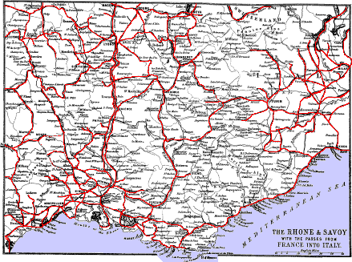
Macon.
PARIS
MARSEILLES
274
263
MACON, pop. 20,000. At
station, large refreshment-rooms. Junction with line to Bourg,
41 m. E. Hotels.—Near the station, H. Étrangers. In
town the Europe, on the Quai du Nord, near the landing-place from the
steamers, which sail daily up and down the Saône, between Chalons,
Macon, and Lyons. In the centre of the town are the hotels Champs
Elysées and Sauvage. Macon is the great depôt of the Macon wines, an
inferior Burgundy. The finest part of the town extends along the quays
which line the right side of the Saône, crossed by a stone bridge of 12
arches, uniting Macon with its suburb Saint Laurent on the left side of
the river. The oldest edifice is the Cathedral of St. Vincent,
built in the 12th cent. The arches are stilted, the columns Romanesque,
and the porch arcaded. Next to it is the Préfecture, formerly the
Episcopal palace. In this neighbourhood,
27
at No. 21 Rue des Ursulines, is the house where Lamartine was born. On a
black marble slab over the door are the words:—Ici est né
Alphonse-Marie-Louis De Lamartine, le 21 Octobre 1790.
In the Rue Dombey is an old timber house, and towards the station, the beautiful church of St. Pierre, built in 1865, in the Romanesque style, and decorated with frescoes. Opposite is the Hôtel de Ville.
From Macon a branch line extends 48 miles westward to Paray-le-Monial, passing Cluny, 15 miles from Macon. From Macon a line extends to Geneva 74 m. E., by Bourg 13½ m. E., Nantua and Bellegards 39¾ m. E. (See Black’s France, North Half, and map page 1.)
Cluny. Paray-le-Monial.
Cluny, pop. 5000. In the valley of the Grosne. Hotels: Bourgogne; Pavilions—both near each other. This is the place where Guillaume-le-Pieux founded in the 10th cent, the famous abbey of Cluny. The abbey buildings are now used as a school. Of the abbey church an insignificant portion alone remains, and of it the most interesting part is the spire. In the Chapelle des Bourbons (15th cent.) are enormous corbels under the empty niches. About 300 yards distant is the Maison Abbatiale, 15th cent., with flattened elliptical-headed windows and ogee arches over the doors. At the entrance is a collection of columns, capitals, etc., from the first church founded in the 10th cent. Upstairs there is a small museum; entrance, ½-franc each.
41½ m. E. from Moulins and 33 m. from Montchanin is Paray-le-Monial, pop. 3700, on the Bourbince. Inns: The Poste, the best; across the bridge, the Lion d’Or; at the head of the principal street, near the Palais de Justice, the Trois Pigeons and the Commerce; opposite the Chapelle de la Visitation, the Inn H. des Pelerins. The Palais de Justice, with the clock tower, occupies the remains of an edifice built in the 16th cent., to which date belongs also the house close to it, occupied by the Mairie and the Post Office.
A little way down the Bourbince is the formerly abbey, now the parish church, founded in the llth cent., but nearly rebuilt in the 12th cent. Over the façade rise two elegant square towers with pyramidal roofs, llth cent.; while from the centre of the transepts rises an octagonal tower in 2 stages, surmounted by a tapering 8-sided slated spire. From the apse radiate chapels adorned with dental friezes and short attached columns.
From this church, the narrow street, the Rue de la Visitation, leads up to the nunnery of the Visitation, an order instituted in 1620, and established in Paray on the 4th September 1626 by 8 nuns from the monastery of Bellecour at Lyons. In 1633 they commenced to build their chapel, which was repaired in 1823, and restored and beautified in 1854. To this chapel the order attach great importance, as it was in this building that Marguerite-Marie Alacoque had most of her interviews with J. C. In the interior the walls and roof are 28 painted light brown, with frescoes and marguerites or daisies, but so hung with banners and votive offerings, chiefly hearts, that little of them is seen. The first picture, right hand, represents J. C. and 3 angels before Marguerite. The 2d, J. C., with flowing yellow hair and dressed in white, stoops to touch with his heart (which is very red and outside his garment) the head of the kneeling Marguerite, who holds her hands up near to her neck. The 3d is a full-length portrait of her. To the left of entrance the pictures are—1st, a Vision; 2d, Mary, sitting on a cloud, has put the child Jesus into the arms of Marguerite; 3d, life-size statues of J. C. and Marguerite. The picture over the high altar represents the interview in this place, when J. C. is said to have declared to Margaret: “I have chosen and sanctified this chapel, that my eyes and my heart may remain here for ever.” On the 2d July 1688 Mary, in great pomp and majesty, accompanied by numerous angels, appeared to Marguerite, and told her that the orders of the “Visitation” and of “Jesus” (the Jesuits) were to have the special charge of the worship of the sacred heart. For this worship there is a regular litany, containing 31 invocations to the heart of J. C. In many of the Romanist churches is a picture representing one of the above incidents.
The bones of Marguerite, covered with flesh-like wax, and attired in the habit of the order, recline on a silver embroidered cloth in a coffin-like shrine of richly-gilt, tiny glazed arches set with rock-crystal. The face and hands are uncovered. The body is 5 ft. long. On her feast day the shrine is placed beside the Communion rail; at other times it is kept within the very beautiful altar-table, made of one piece of pure white marble. Marguerite-Marie Alacoque was born 22d July 1647, in the village of Versovres, near Autun, entered the convent of the Visitation in Paray on the 25th May 1671, and took the vows on the 6th November 1672. On the day when J. C. told her she had been chosen by him to propagate the worship of his heart, she was seized with a pain in her own heart, which continued throughout her life. She met at first with great opposition in her endeavours to institute the worship of the heart, and her sister nuns treated her as a visionary till 1675, when the R. P. de la Colombière, superior of the Jesuit establishment at Paray, became her convert. In her last illness she said: “I shall die in peace, because the heart of my Saviour commences to be known.” She died in October 1690, and was canonised by Pio IX. on the 14th October 1864. Since the institution of N. D. de Lourdes and de la Salette the number of pilgrims has decreased. In Paray there are 3 nunneries and a vast building belonging to the Jesuits.
From Macon the railway continues its course by the side of the Saône, whose banks become now more picturesque. From Macon use map on page 26.
Romaneche. Belleville.
PARIS
MARSEILLES
283
254
ROMANECHE, pop. 3000.
Inn: Commerce. Produces a delicate light wine, with a pleasant
flavour and bouquet, called Moulin-a-Vent, which should be drunk in the
second year from the vintage.
PARIS
MARSEILLES
288½
248½
BELLEVILLE, pop.
4000. The first part of the town is St. Jean, and the next Belleville,
1¼ m. from the station, with a comfortable little inn, the
H. Jambon. Omnibus at station. The church, 12th cent., has small
round-headed and pointed windows, with some good glass, especially in
those of the square towers at the end of the transept, and the small
circular window over the west portal. This is the headquarters of the
Beaujolais wines. From Belleville a branch line extends 10 m. W. to
Beaujeu, pop. 4000, on the Ardière. Church, 13th cent., and some curious
houses. (Map, page 26.)
PARIS
MARSEILLES
297
240
VILLEFRANCHE-sur-saône, pop. 12,600, on
the river Morgan, near the Saône. Hotels: Provence; Europe.
Containing important linen manufactories, and vineyards producing a good
white wine. The parish church, N. D. des Marais, was commenced in
the 14th cent. 5½ m. S. is Trévoux station, 1½ m. from the
town, pop. 3000, on the E. bank of the Saône. Inns: Terrasse;
France. The Jesuits compiled and printed in this town the Journal de
Trévoux in 1701, and the Dictionnaire de Trévoux in 1704.
PARIS
MARSEILLES
306
231
ST. GERMAIN au-mont-d’or, junction with
line from Paris to Lyons, by Roanne and Tarare.
Lyons.
30
[West]
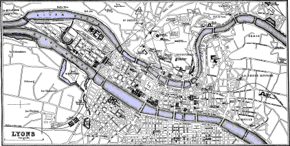
[East]
PARIS
MARSEILLES
318
219
LYONS, pop. 343,000. The
Perrache railway station is 218 m. from Paris, 219 m. from
Marseilles, 78 m. from Aix-les-Bains, 36½ m. from Bourg,
104 m. from Geneva, 36 m. from St. Etienne, 56 m. from Roanne,
100 from Vichy, and 214 m. from Turin.
Hotels (first-class).—H. de l’Europe, admirably situated, with one side to the Saône and the Tilsit bridge, and the other to the Place Bellecour, the terminus of some of the best trams. In the Rue de la République are the H. Collet and the H. de Lyon. H. Bellecour in the Place Bellecour. H. des Beaux Arts in the R. de l’Hôtel de Ville, also well situated. In the Place Perrache, below the station, are the hotels Univers, Angleterre, Bordeaux et du Parc.
Less expensive Hotels.—The H. du Globe; and the Havre et du Luxemburg—both near the Place Bellecour. Near the Place des Terreaux in the R. Platière, the H. de Paris et du Nord. Near the Bourse, the H. des Négociants, a large house frequented chiefly by commercial men. Near the Négociants, at No. 47 Rue de l’Hôtel de Ville, the H. Bayard. Hôtel des Étrangers, Place de la République. Hôtel de Toulouse et de Strasbourg, 8 frs., in the Place Perrache, opposite the station. Hôtel National, opposite the theatre. On the Quai do la Charité, near the General Hospital, the H. Bourne. A great 30 many diligences start from this neighbourhood. Hôtel de France et des 4 Nations, 9 Rue St. Catherine, close to the Place des Terreaux, one of the cheapest. Among the best cafés are the Café Anglais, opposite the Bourse; Casati, No. 8; Café Neuf, No. 7; and Maderni, No. 19 R. de la République; Café du Rhône, Place Bellecour. They have English newspapers. In Lyons the term Comptoir is applied to bars where wines, cordials, and brandies are sold.
Post Office.—Head Post Office in the Place de la Charité, at the south end of the Place Bellecour. Branch Post Offices in the arcade of the Place des Terreaux and 39 Cours Morand.
Telegraph.—Head office, No. 53 Place de la République. Branch offices—Perrache station, St. Paul station, and No. 38 Cours Morand.
Lyons: Railway Stations. Cab Fares.
Railway Stations.—The great and central station is the Gare de Perrache, in the centre of the tongue of land between the Rhône and the Saône. From it passengers can reach any place, excepting those on the railway to Bourg. The Bourg or Satonay railway station is at the top of the Rue Terme, a street commencing near the N.E. corner of the Place des Terreaux. From the Rue Terme the train is pulled up the hill by a rope in the same way as at Fourvière. The gradient is 16 per 100, and the distance 547 yards. At the top station, in the Boulevard de la Croix Rousse, passengers for Bourg enter the ordinary railway carriages. The rope railway runs every 5 minutes, fare 1d., and forms a convenient way of escaping from the damp foggy atmosphere of Lyons. The Dombes or St. Paul’s railway station is for Montbrison, 40 m. S.W. The Vaise and Brotteaux stations are auxiliaries of the Perrache station. The Brotteaux station, situated on the confines of the Parc de la Tête d’Or, is the terminus of the best of the trams.
| KIND OF CAB. |
DE 7 H. DU MATIN a minuit. |
DE MINUIT a 7 H. du mat. |
||||
| LA course. | LA 1re heure. | LES H. suiv. | LA course. | l’heure. | ||
| A 2 places (coupés) | 1 25 | 1 50 | 1 25 | 1 65 | 2 50 | |
| A 4 places (berlines) | 1 50 | 2 | 1 50 | 2 | 3 | |
| Voitures découvertes | à 2 places à 4 places |
1 75 2 |
2 2 50 |
1 75 2 |
2 15 2 50 |
3 3 50 |
The “coupés” are cabs with a seat for two. The “berlines” are cabs with 2 seats for four. Each portmanteau 25 c. At the railway stations the omnibuses from the hotels await passengers.
31Lyons: Tramways. Theatres. Steamers.
Tramways.—The fares are moderate, and most of the cars comfortable. The best to take to see the principal parts of the town is the large roomy car running between the Perrache railway station and the Brotteaux railway station, passing through the P. Perrache, P. Henri IV., Rue Bourbon, P. Bellecour, R. and P. de la République between the Hôtel de Ville and the Grand Theatre, across the bridge Morand, and up the Cour Morand to the terminus at the Brotteaux railway station. At the Brotteaux terminus the road by the side of the fort “des Charpennes” leads in 5 minutes into the Parc de la Tête d’Or (see page 40), which having visited, return either by the same car, starting every 10 minutes, or by the other, whose terminus is in the Quai de la Charité. The outside of the cars, taken also by ladies, costs 3 sous; inside, 4. The two most important places to visit on the return journey are the Palais des Arts (page 35), and the silk museum in the Bourse (page 38). Tram between the Place de la Charité and Oullins every 15 minutes; fare outside, 3 sous. To visit the meeting-place of the two rivers, come out at the bridge before crossing the Saône. Oullins, 3¼ m. from Lyons, pop. 4000, is approached also by rail from Lyons.
Theatres.—The Grand Théâtre, between the Hôtel de Ville and the Rhône. Boxes and front stalls, 6 frs. The Théâtre des Célestins, between the Rue St. Dominique and the Saône. Boxes, 6 frs.; stalls, 4 frs. Théâtre Bellecour, No. 85 Rue de la République, quite a new theatre, with all the modern comforts and appliances, and seated for 3000. The prices vary according to the subject. For an opera the stalls cost 7 frs. each; for a play, 4 frs. There are also the Théâtre des Variétés, Cours de Morand; Théâtre du Gymnase, 30 Quai St. Antoine; and the Théâtre de l’Elysée, 3 Place de la Victoire.
Steamers on the Saône (Les Guèpes).—Sail between the Quai St. Antoine (to the north of the Bourse) and Collonges, calling at the Ile Barbe. In summer 5 departures daily.
Les Mouches, or penny boats, sail from the quay near the Place Perrache, by the side of the Pont du Midi, to the Pont du Port Mouton on the Quai de Vaise, calling on the way at numerous stations. From the Pont du Port another set of penny boats ascend to St. Rambert, calling likewise at numerous stations on the way. Opposite St. Rambert is Cuire, and between them in the centre of the river is the Ile Barbe.
The large steamers Parisiens sail in summer between the Quai St. Claire on the Rhône and Aix-les-Bains on Tuesdays, Thursdays, and 32 Saturdays. Fare, 9 frs. Another line sails between Lyons and Avignon, calling at the principal towns on the way, but chiefly for the landing and shipping of cargo.
Lyons: Sights.
Sights.—Notre-Dame-de-Fourvière (see below). Drive in tram car, outside if possible, between the Place Perrache and the Brotteaux railway station, page 31. The Parc de la Tête d’Or, page 40. The galleries in the Palais des Arts, page 35. The museum of silk manufacture, page 38.
Lyons is a strongly-fortified city, intersected by two of the largest rivers in France, the Rhône and the Saône, which form as they approach each other the isthmus, 545 ft. above the sea, on which the finest part of the city is built. This portion is traversed by three great streets, the Rue de la République, the R. de l’Hôtel de Ville, and the R. Centrale, and contains the three most important and beautiful squares, the Places Perrache, Bellecour, and Des Terreaux. The Place Perrache, in front of the station, was planted with trees in 1851. In the centre was a bronze statue of Napoleon I. by Nieuwerkerke, which was taken down in 1870 and afterwards destroyed by order of the municipality. In its place is a fountain. The Place Bellecour (Bella-Curia), 339 yards long and 328 yards wide, is also planted with trees. In the centre is an equestrian statue of Louis XIV. by Lemot, which occupies the place of a former one by Desjardins, destroyed in 1793. Trams to all the important parts of the city run through these two squares. The Place des Terreaux, flooded with human blood in 1794, during the reign of terror, has on the south side the Palais des Arts, on the east the Hôtel de Ville, and on the west a block of buildings pierced by an arcade decorated by P. Delorme and Maupin (see page 37).
The Rhône is crossed by 9 bridges, and the Saône by 13. The extent of substantial and spacious quays on both sides of these rivers measures 24 miles. For sailing on the Rhône the best steamers are the Bateaux Parisiens, starting from the quay in front of the Place Tholozan behind the Hôtel de Ville, and plying between Lyons and Avignon. For short sails on the Saône the Bateaux Mouches are very convenient, page 31.
opp. 33 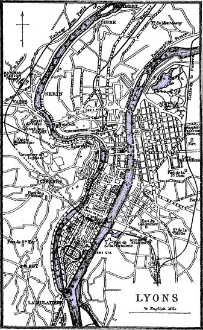
Lyons: Notre-Dame-de-Fourvière. Rope Railway.
The most prominent building in Lyons is the church of Notre-Dame-de-Fourvière, standing on the site of the forum erected by Trajan, the Forum Vetus or Foro Vetere; whence the term Fourvière is supposed to be derived. It ought to be visited as early as possible, even should there be no time for anything else, on account of the excellent bird’s-eye view of the city obtained from it and its terraces. At the west end of the bridge of Tilsitt across the Saône, at the upper side of 33 the “Place,” is the rope railway, which ascends through tunnels the hill of Fourvière, the length of the Place des Minimes about ¾ of the way up the hill. Fare, 5 sous. From the station walk up, right hand, by the broad road, l’Antiquaille. At the highest part of this road is a large ugly edifice, the Hôpital de l’Antiquaille, especially devoted to the treatment of insanity and of cutaneous diseases. It has accommodation for 600 patients, and occupies the site of the Roman palace in which Claudius and Caligula were born. From in front of this hospital commences a narrow steep road called the Montée de Fourvière, lined nearly all the way with little shops stocked with wares for the pilgrims and devotees, such as images, crucifixes, amulets, chaplets, medals, photographs, and books. At the top are restaurants and hotels.
On the summit, 1206 feet above the sea and 410 feet above the Saône,
is the chapel of the “miraculous” image of Notre-Dame-de-Fourvière, from
which rises a domed tower crowned with a gilt image of Mary 6½ ft. high.
This tower is ascended by 200 steps, fee 25 c., and commands a superb
view of the city and environs. Lyons and its two great rivers are
immediately below, while in the distance, if the weather be clear, Mont
Blanc is distinctly seen. As for the sacred image itself, in the church
below, it is about the size of a big doll, and the child rather less.
The number of worshippers having become so great, the adjoining church,
which is more elegant and much more commodious, was constructed in 1884.
It stands on the very brow of the hill, and is the most prominent object
in Lyons. In shape it is rectangular, with at the eastern termination an
octagonal tower 115 ft. high, which forms the chancel. At each of the
four corners is a similar tower, and in each of the two sides are three
large windows separated by buttresses like square towers. Round the top
of the building as well as of the towers extends a balustrade of stiff
sculpture resembling acanthus leaves. The large buildings in the
neighbourhood are convents.
Lyons: Observatoire Gay.
St. Paul.
A little eastward is the “Observatoire Gay,” from which a steep path,
the Montée des Carmes Déchaussées, 536 yards long, descends to the city,
reaching it by the side of the station of the Chemin de Fer des Dombes (page 30). Near this
station is the church of St. Paul, all modern excepting the beautiful
N. portal, the handsome octagonal lantern resting on pendentive arches,
a few of the windows, and part of the walls which belonged to the
original church of the 11th cent. The old walls which remain in all the
early churches of Lyons are characterised by the enormous size of the
stones of which they are composed. Beyond is the bridge of St.
Vincent.
Lyons: St. Irénée.
The Terminus of the rope railway from the Pont Tilsit is at No. 42 Rue Trion, higher and to the N.W. of Fourvière and within a very short distance of the church of St. Irénée, on the summit of a hill in the suburb of St. Just. On the terrace at the east end of St. Irénée are a Via Crucis and Calvary, commanding a superb view of the plain watered by the Rhône and the Saône. By the N. side of the church is the entrance into the crypt. The first flight consists of 25 steps; and the second, which terminates in the crypt, of eight. On the first arch across the first flight an inscription states: “Cette crypte fut construite par St. Patient evéque de Lyon au V siècle sur l’emplacement du lieu ou St. Pothin et St. Irénée, envoyés a Lyon par Polycarpe disciple de l’apôtre St. Jean, reunissaient les premiers chretiens. De nombreux martyrs y furent ensevelis.” On the second arch another inscription states that in 1562 the Calvinists having injured the crypt and thrown the bones of animals among those of the saints, Grolier, Prior of St. Irénée, restored the building, separated the bones, and placed those of the saints in that small vault to the right, at the foot of the first flight. In the centre of the crypt is a now covered up well, the original resting-place of the martyrs, down which their bodies were thrown till it overflowed with blood, in the reign of Septimius Severus, A.D. 202. To visit the calvary and crypt apply to the concierge, 50 c. The church of St. Irénée has nothing particular. To the west, in the parish of Ste. Foy, are the remains of the Roman aqueduct which brought water to the city from Mont Pilat. It was 52 miles long, and capable of supplying 11,000,000 gallons per day. At present the water-supply of Lyons is obtained from the Rhône.
Lyons: Cathedral of St. Jean.
Opposite the commencement of the rope railway, and close to the Tilsit bridge, is the Cathedral of Saint Jean, founded in the 8th cent., repaired by Archbishop Leydrade, friend of Charlemagne, and reconstructed almost entirely three centuries later. The chancel dates from the end of the 12th cent., the lower part of the façade from the 13th, and the upper from the 14th cent. The exterior is chastely decorated, but the four towers are too low. The interior, 259 ft. from W. to E. and 108 ft. high, contains some brilliant 13th, 14th, and 15th cent. glass. The wheel window at the west end resembles a fully-blown flower. The clerestory windows are majestic and graceful. First, right hand, is the chapel built by the Cardinal de Bourbon and his brother Pierre, son-in-law of Louis XI. The two windows bearing their portraits, and the curious wheel window at the end, are admirable. The soffits of the arches and the vault of the roof are richly 35 decorated. In the N. transept is the now useless clock made by Nicholas Lippeus of Basel in 1508. The founder of the See of Lyons was St. Pothinus, an Asiatic Greek, who preached in this city A.D. 177, and sealed his doctrines with his blood. Adjoining the S. aisle is the Manécanterie, 11th cent., formerly the bishop’s place, now the music school for the choristers.
A little farther down the river is the church of St. George (rebuilt) occupied in the 13th cent. by the Knight Templars. Above the cathedral is the Palais de Justice, planned by Baltard, the architect of the large market, the Halles Centrales of Paris. In front is a colonnade of 24 Corinthian columns. The hall is spacious and elegant, but the court rooms around it are too small. The bridge higher up—the Pont de Nemours—leads directly to the church of Saint Nizier, with the façade towards the bridge and the chancel towards the Rue de l’Hôtel de Ville. The handsome portal surmounted by twin spires is by Philibert Delorme, a native of Lyons, and dates from the 16th cent. The rest of the building belongs to the 15th cent. In the interior a broad triforium with heavily-canopied window-openings surrounds the church. The vaulting shafts expand in a curious way over the roof. In the chapel of the south transept is a statue of Mary by Coysvox. At the foot of the pier in this transept a trap-door opens into the crypt, 10th cent. At the south side of the Palais des Arts is St. Pierre, a modern edifice, with a beautiful portal of the 11th cent., all that remains of the original church.
Lyons: Palais des Beaux-Arts. Musée Lapidaire.
On the south side of the Place des Terreaux is the Palais des Beaux-Arts, built in 1667, formerly a convent of the Dames Bénédictines de Saint-Pierre. It contains the picture galleries and the museums. Open to the public on Sundays, Thursdays, and feast-days, from 11 to 4, and to strangers daily.
Admirably arranged under a wide corridor round the great court are the ancient marbles or Musée Lapidaire, one of the best in Europe. The sepulchral inscriptions form a most interesting series of epitaphs, in many instances most tender and affecting. Indeed, reading these records of the love of kindred among the ancient heathen, from the Augustan age upwards, one would incline to believe that the Romans of that day were already “feeling after” Christianity. In the left corner of the court on entering is the stair which leads up to the Archæological Museum and the Picture Gallery, both on the first floor. Up on the second floor is the collection of paintings by the “peintres lyonnais.”
36Lyons: Musée Archéologique.
The Musée Archéologique is well arranged and carefully labelled. The only object we would indicate, as it is apt to be overlooked, is the bronze table, A.D. 48, in the second room left hand, with inscribed portions of the harangue of Claudius before he became emperor, imploring the senate to grant to Lyons, his native city, the title of a Roman colony. The letters are beautifully cut and easily legible. This table was discovered in 1528 on the heights of Saint Sébastien. Germanicus, and the Emperors Claudius, Marcus Aurelius, and Caracalla, were also born in Lyons. The father of St. Ambrose was for some time prefect of Lyons. In the same room is a decree of the Egyptian pontiffs in hieroglyphics. There is a good collection of seals, coins, enamels, armour, carved work, and bronzes, as well as some necklaces, bracelets, rings, and coins, part of a treasure buried during the Roman period on the Fourvière heights, and discovered in 1811. The numismatic collection, 30,000 pieces, includes a series of the coins struck at Lyons from 43 B.C. to 1857. Adjoining and on the same floor is the Picture Gallery, contained in six small rooms, of which the first three contain the Flemish and Dutch schools, the next two the Italian and Spanish schools, and the sixth the French school. They are all carefully labelled. Among the pictures which represent the Flemish school are works by Rembrandt, Rubens, Teniers, Van Dyck, Holbein, Stein, Dietrich, Breughel, Wouvermans, and Ruysdael. The Italian and Spanish schools are represented by Canaletto, Sasso Ferrati, Guercino, Zucharo, Murillo, Ribera, Zurbaran, etc. On the floor of the fourth room is a remarkably perfect mosaic pavement, 5½ yards by 3, representing chariot races in the Circus. It was discovered near the church of Ainay.
Lyons: Galerie Chenavard.
In the S.E. corner a handsome staircase leads up to the Galerie Chenavard on the first floor, containing large cartoons drawn by him illustrative of the scenes which accompanied the introduction of Christianity into France. They were intended for the Pantheon of Paris, but, the age of reason supervening, they were not sent. On the floors are three beautiful mosaic pavements found at Lyons. In the room above are the best pictures—J. F. Barbieri, 1590-1661; Bol, Breughel, P. Caliari, 1530-1588; A. Carracci, 1557-1602; L. Carracci, 1555-1619; P. Champaigne, Crayer, Greuze, 1721-1805; E. L. David, 1748-1825; Desportes, 1661-1742; Cuyp, Van Dyck, Heem, 1604-1674; Jordaens, Jouvenet, 1644-1717; Largillière, M. Mierveld, Murillo, 1618-1682; J. Palma, 1544-1628; Pietro Perugino, 1446-1524; an Ascension of Christ, considered the gem of the collection. 37 This picture, originally in the church of San Pietro at Perugia, was presented by Pope Pio VII. “in attestato del suo affetto é della grata sua rimembranza per la citta di Lione.” The lower part of the picture is by far the best, the figures in the air are too massive, and the posture of J. C. is stiff. J. Ribera, 1584-1656; H. Rigaud, 1552-1745*; Robusti, 1512-1594; Rubens, Ruysdael, A. del Sarto, 1488-1530; Sasso Ferrati, 1605-1685; Schorreel, 1495-1565; Sueur, 1617-1656; Sneyders, Teniers, Terburg, Zampieri, and Zurbaran.
* Text shown as printed. Hyacinthe Rigaud, 1659-1743.
The Palais des Arts contains also the Natural History Museum, the Mineralogical Collection, in which are represented the characteristic rocks and fossils of every department of France, and the copper ores from the mine of Chessy, near Arbrèsle; and a library containing 40,000 engravings and drawings, and 650 volumes treating principally on the arts and sciences. There are likewise 6 municipal libraries, open every evening from 7 to 10, and the Bibliothèque de la Ville.
Lyons: Place Terreaux. Hôtel de Ville.
On the north side of the Place des Terreaux is the Hôtel de Ville, built in 1665 by Maupin, at the cost of £320,000. The facade, flanked by domed square pavilions, is 160 ft. wide, while the building itself is 1150 ft. long. The back part, fronting the theatre, is the Préfecture. From the centre rises the clock-tower, 157 ft. high. On the façade over the entrance is an equestrian statue of Henri IV. in bold relief. Within the vestibule, to the right and left, are colossal bronze groups, by the brothers Coustou, representing the Rhône and the Saône. They stood originally under the statue of Louis XIV. in the Place Bellecour.
In 1642 Cinq Mars and De Thou were executed, by order of Richelieu, in the Place des Terreaux. In 1794 the revolutionary tribunal, sitting in the Hôtel de Ville, guillotined so many people in this square that it became so flooded with blood as to render it necessary to send the executioners to Brotteaux, near the present railway station, to finish this wholesale slaughter of Frenchmen by Frenchmen.
Lyons: Condition des Soies. Library. Bourse. Silk Museum.
Behind the Hôtel de Ville, up the Rue de St. Polycarpe, house No. 7, is the establishment of the Condition des Soies, where the bales of silk brought to Lyons are sent to be dried. They are placed on an iron grating, and subjected for twenty-four hours to a temperature of from 64° to 72° Fahr., and are weighed both before and after this operation. The same is done to the wool. The sample drying room is in the first story, left hand. Any one may visit it. A little higher up are St. Polycarpe built in 1760, and St. Bruno built in 1688. At the opposite end of the bridge of St. Clair is the English church.
38In the Rue de la République is the Bourse, a profusely ornamented edifice inaugurated in 1860. At the south end is St. Bonaventure, built in the 14th cent., and recently restored. At the north end is the Lycée with the public library, containing the great terrestrial globe made at Lyons in 1701, indicating the great African lakes, the rediscovery of which has been one of the events of the present century. There are 160,000 volumes and 2500 manuscripts,—about 600 of the printed works being incunabula, and 25 of the MSS. belonging to the Carlovingian period.
In the second story of the Bourse is the museum of the Art and Manufacture of silk. Open to the public on Sundays and Thursdays between 11 and 4. The great hall contains, in high glass cases, specimens of silk, satin, velvet, crape, and lace, arranged according to centuries from the 13th and 14th to the 19th. The 19th, which is by far the richest and most beautiful, is in two cases, representing the first and the latter half of the century. This collection is choice and highly artistic, displaying miniature portraits, superb embroidery, and lovely designs in charming colours, woven in the loom. At the entrance to the hall is a portrait (about 13 in. by 10) of Jacquard, in a sitting posture, woven in white and black silk, like those at St. Etienne. Also the Will of Louis XVI. In the next room are looms and models of looms from the time of Louis XI. The models are so perfect that each contains part of a web woven in it. Among them is the model of the famous loom made by Jacquard in 1804, by which a single workman was enabled to produce elaborate fabrics as easily as the plainest web, and by merely changing the “cartoons” to make the most different textures on the same loom. Near the loom is the first sewing machine. The inventor was B. Thimonier of Lyons in 1829, from which those now in use are improved copies.
The cases round the inmost room are devoted to the natural history of silk—displaying every variety of the silk butterfly, Bombyx mori, as well as of the allied species; cocoons of every kind and in every condition; eggs and caterpillars at every stage of their existence; and hanks of raw silk from every part of the world where it is produced. Adjoining is a room with drawings, many by the great masters.
Formerly Lyons manufactured only high-class silks, but the demand for these having been for some years on the decrease, the manufacturers, to hold their place in the market against especially their Créfeld rivals, have had to turn their attention to cheaper stuffs. This in some measure is owing to the rapid and violent changes of fashion, 39 which makes a silk dress good only for a few months, whereas formerly, with an occasional alteration, it was worn for years.
In the street behind the east side of the Bourse are the large covered markets; where many of the fishes of the Rhone may be seen alive in tanks, and good Mont d’Or cheese be bought. It makes capital railway travelling provision. (See page 42.)
Lyons: City Hospital and Workhouse.
Farther down the street, with the principal facade to the Rhône, and the other, containing the entrance, to the Rue de l’Hôpital, is the Hôtel Dieu, or general hospital, with 1500 beds, founded in the 6th cent. by Childebert and Ultrogotha his queen. The present building is principally the work of Soufflet, the architect of the Pantheon in Paris. Of the beds, about 1300 are free, the remainder pay from 1¼ fr. to 12 frs. per day. The rooms are lofty and well ventilated. The principal female wards are arranged in the form of a cross, with an altar in the centre under the small dome, in such a position that all the patients can see it from their beds. From the large dome extends the principal ward of the men, containing 100 beds, and a smaller one on the other side. The sick are tended by nuns. The hospital has a house on the heights of the Croix-Rousse, near the terminus of the rope railway, and another at Oullins for incurables.
In the first court left of the large court, Dr. Young buried Mrs. Temple, the Narcissa of his Night Thoughts, who died in 1730 at Montpellier, but was there refused burial. At that time what is now a built-up court was a cemetery. Fifty years ago it was a garden, now it is covered with buildings. All trace of the grave has disappeared.
Near the entrance to the hospital is the church, 18th cent., richly decorated. In a chapel, left, is the enormous gilt shrine, in 5 stages, of Sainte Valentine.
Farther down the Rhône is the Hospice de la Charité, founded in 1531, on the occasion of a great famine. It receives the poor of both sexes who have reached 70; sick children under 15, and young women about to be mothers. The church was built in 1617.
Lyons: St. Martin d’Ainay.
North from the hospice or workhouse, near the bridge of Ainay across the Saône, is the church of St. Martin d’Ainay, which, with the monastery, was founded by St. Badulph during the reign of Constantine, on the site of a temple erected by the sixty nations of Gaul in honour of Cæsar Augustus. The first church having been destroyed by the Saracens, in the 8th cent., it was rebuilt in 1070, and consecrated in 1106 by Pope Pascal II. Since then it has been frequently repaired and altered. The style belongs to what is called modern 40 Greek, introduced into France under Charlemagne. The cupola of the chancel rests on circular pendentive arches springing from four granite columns which stood formerly in the temple of Augustus. They were originally 2, but were cut into 4. The fresco paintings in the apsidal chapels are by H. Flandrin, a native of Lyons. To the right is the sacristy or chapel of Saint Blandina, in which a short stair leads down to the crypt and the dungeons, one on each side, where Pothinus, first bishop of Lyons, and Blandina, a converted slave, were kept before being tortured and put to death in A.D. 177, during the persecution under Marcus Antoninus, the implacable enemy of Christianity. The crypt, about 12 ft. square, was, as well as the dungeons, about 10 feet deeper, but on account of the overflowing of the river the floors were filled up to their present level.
Lyons: Parc de la Tête-d’Or.
The Parc de la Tête-d’Or, or park of Lyons, is situated at the N.E. extremity of the city, between the Brotteaux railway station and the left bank of the Rhône. It measures 282 acres, and contains, besides an abundant supply of varied walks, a large and excellent botanic garden with hothouses, a lake with islands inhabited by aquatic birds, and a dairy farm, whose produce is sent every morning into town for sale. Adjoining the park are the rifle-butts and the racecourse. In the Boulevard du Nord is the Guimet Museum, containing a collection of objects from the extreme east, to facilitate the study of the history, religions, and customs of the inhabitants of that part of the world. The institution publishes essays and translations.
By the western side of the Brotteaux railway station are the large barracks of the Part-Dieu and the Fort des Brotteaux.
Lyons employs 70,000 looms and 140,000 weavers in the manufacture of silk; and here, as at St. Etienne, the work is principally performed on the domestic system in the dwellings of the master weavers, each of whom has usually from two to six or eight looms, which, with their fittings, are generally his own property. Himself and as many of his family as can work are employed on these looms, aided frequently by one or more compagnons, or journeymen, who inhabit chiefly the suburb of La Croix Rousse, to the north of the town, and that of Fourvières, on the Saône. The silk merchants supply the silk and patterns to the owners of looms, who are entrusted with the task of producing the web in a finished state. The mean annual value of the silk goods manufactured is estimated at £15,000,000.
The Dyeing of Silk—Origin of Lyons.
The dyeing of the silk is also an important branch of manufacture. Many experiments had been made to bring this art to perfection, and 41 in particular to discover a dye of perfect black that would retain its colour. This a common dyer of Lyons at last invented, for which he received a pension, besides being made a member of the Legion of Honour. Prior to this the black dye which was used changed in a few days to a brown, and came off the stuff when it was hard pressed by the hand. Another improvement which was made consisted in procuring a silk of a permanent white colour. The eggs of the worm which produced this silk were brought from China, not, however, with the desired success. The worm was afterwards purchased from a merchant of Alais, and distributed in the southern departments of the country, where now a large number of persons are engaged in silkworm hatcheries. The produce of white silk is now very considerable and of great importance in the manufacture of gauzes, crapes, and tulles. Extensive chemical works, breweries, foundries, potteries, engineering works, printing establishments, and hat factories represent the secondary industries of Lyons. A large trade is carried on in chestnuts brought from the neighbouring departments, and known as marrons de Lyon.
The earliest Gallic occupants of the territory at the confluence of the Rhône and the Saône were the Segusians. In 590 B.C. some Greek refugees from the banks of the Hérault, having obtained permission of the natives to establish themselves on the Croix Rousse, called their new town by the Gallic name Lugdunum; and in 43 B.C. Munatius Plancus brought a Roman colony to Fourvières from Vienne. This settlement soon acquired importance, and was made by Agrippa the starting-point of four great roads. Augustus, besides building aqueducts, temples, and a theatre, gave it a senate and made it the seat of an annual assembly of deputies from the sixty cities of Gallia Comata. Under the emperors the colony of Forum Vetus and the municipium of Lugdunum were united, receiving the jus senatus. The town, burnt by Nero in 59 A.D., was rebuilt by him in a much finer style, and adorned by Trajan, Adrian, and Antoninus.
Mont-d’Or.
Among the most interesting, and at the same time easiest excursions from Lyons is to Mont Ceindre, 4 m. from Lyons. Take the omnibus starting from the Rue de la Platière to the village of St. Cyr-au-Mont-d’Or, 3¼ m., time 1½ hr., by a road always ascending. Fare, ½ fr. The omnibus office at St. Cyr, the inn, and the café, are on a wide terrace commanding an extensive view. The village, pop. 2000, is poor and dirty, and built on the side of the hill. To ascend Mont Ceindre walk from the omnibus office up to the new church, whence ascend by the telegraph posts, and then turn to the right. The ascent 42 and descent can be done easily in 80 minutes, in time to go back to Lyons by the returning coach. On the top of Mont Ceindre are some houses, an old hermitage, and a chapel surmounted with a statue of Mary. The view is grand, embracing the valleys of the Rhône and the Saône, the towns of Bugey and Beaujolais, the mountains of the Forez, the Dauphiné, and the Alps. Mont Ceindre, 1532 ft. above the sea; Mont Verdun, 2020 ft.; and Mont Houx, 2008 ft., form together Mont-d’Or, a group of mountains covered with vineyards and meadows. Cheese. The wine is thin, but the cheese is one of the best and most celebrated in France. They are soft, round, and flat, about 5 inches in diameter and half an inch thick, like round pancakes. They are made from a mixture of cow and goat’s milk, and are said to derive their peculiar flavour from the vine leaves on which the goats feed during a considerable portion of the year. The cheeses of Mont Dore (likewise famous) are thicker and smaller in diameter, and sold in small boxes. The coach, on its way from Lyons to St. Cyr, passes by Roche-Cardon, a favourite retreat of J. J. Rousseau. Another easy excursion is to the Ile Barbe. Take any of the mouches (penny boats) going up the Saône to Vaise station. Here change into the penny boat going to St. Rambert, a rather dirty little town on the right bank, 1½ m. above Vaise. Opposite, and connected by a bridge, is the town of Cuire. In the centre of the river is the Ile Barbe, across which the bridge passes. On the island there are a few uninviting country-houses, and the tower of a chapel (private property) of the 12th cent. The sail is the best part of the excursion, not the island.
For Lyons to Nîmes, by rail 172 m. south by the west bank of the Rhône, see p. 81; Paris to Lyons by Roanne and St. Etienne, p. 346; Paris to Lyons by Tarare, p. 348; Lyons to Clermont-Ferrand by St. Etienne, Montbrison, and Thiers, see p. 349, and map p. 27.
Vienne.
PARIS
MARSEILLES
338
199
VIENNE, pop. 27,000.
Hotels: Nord; Poste; Jacquet. In this, the capital of the first
kingdom of Burgundy, there exist remains of important edifices, which
indicate that the citizens inhabiting it in the days of Cicero were no
strangers to the luxury and wealth preceding the Augustan age. The most
interesting of these is the Maison Carrée, an oblong temple of
the Corinthian order, dedicated to Augustus and his wife Livia, 55 ft.
high, 88 long, and 80 broad, situated a little way north from the
cathedral by the Rue St. Clementine. On a terrace fronting the chain
bridge is St. Maurice, a beautiful Gothic cathedral
commenced in the 12th cent., 315 ft. long, and the
43
roof of the nave 88 ft. high. It contains some fine glass, and near the
altar the skilfully-sculptured mausoleum of Cardinal Montmorin, who died
in 1723. At the main entrance are two ancient sarcophagi. At the other
end of the chain bridge is the Tour St. Colombe, built by Philippe
Valois. Up the Rhône, on the east side, at the top of the Quai Pajot,
near a stair leading down to the river, stood the Tour de Mauconseil,
where Pontius Pilate, who had been banished to Vienne by Tiberius, ended
his life (it is said) by throwing himself into the Rhône. About
¼ m. down the Rhône from the railway station, by the Marseilles
road, is the Pyramide de l’Aiguille, called also the tomb of Pilate. It
is 52 feet high, and rises from four arches resting on a square
basement. Columns with cushioned capitals ornament the four corners,
which cannot date earlier than the 4th cent. Vienne is a busy commercial
town, with important woollen manufactories. 3¼ m. S. by rail is
Vaugris, pop. 250. On the other side of the Rhône is Ampuis (p. 81). 6 m. farther S. by rail is Le
Péage-de-Roussillon. Roussillon, pop. 1500, is a straggling village
among vineyards, less than a mile E. from the station. From the Château
de Roussillon Charles IX. issued, in 1564, the decree that in future the
year was to commence with the first of January.
> St. Rambert-d’Albon. Tain.
PARIS
MARSEILLES
356½
180½
ST. RAMBERT-D’ALBON,
junction with line to Grenoble 57½ m. E., by Rives 35 m., and
Voiron 42 m. E. Junction by bridge with Peyraud, 3¾ m.
W., on the opposite side of the Rhône, whence rail to Annonay (see page 81, and map pages
26 and 46).
5 m. S. by rail from St. Rambert is St. Vallier, pop. 4000. Inn: Merle. On the junction of the Galaure with the Rhône. In the town is the restored castle of Anne de Poitiers, and up the valley of the Galaure are the pass of the Roche Taillée, the ruins of a château of the Dauphins, and the chapel of N. D. de Vals (see map, page 46).
PARIS
MARSEILLES
368
169
TAIN, pop. 3000. Inns:
H. Europe; Midi. A pleasant town on the Rhône, immediately
opposite Tournon (page 82), and at the foot of
the hill, whose vineyards produce the Hermitage wines. The red variety
has a fine perfume, and is gratefully stomachic. The white is a
luxurious wine, and will keep for a century, but the produce is small.
Omnibus at station for Romans, 13 m. on the rail between Valence
and Voiron (see map page 46), pop. 13,000.
Inns: Europe; Midi. Situated at the confluence of the Isère with
the Savasse, crossed by a bridge of 4 arches which unites it with
Bourg-du-Péage, pop. 5000.
Valence.
PARIS
MARSEILLES
384
153
VALENCE, pop. 24,000.
Hotels: Louvre; Croix d’Or; France. The first the most expensive.
Commodious Temple Protestant. Good Protestant schools. Suspension bridge
across the Rhône. Omnibus to St. Péray, 2½ m. west. Coaches daily
to Ardèche. Valence is a pleasant town on an eminence rising from the
Rhône, surrounded by broad boulevards on the site of the old
fortifications. The most handsome is the Place Championnet, on the site
of the citadel, commenced by François. It commands an excellent view of
the river and of the hills beyond. In the distance, to the right, on an
arid rock, is the castle of Crussol. In this Place is the statue “au
General Championnet, sorti des rangs du peuple. Hommage public de sa
ville natale.” Died at Antibes 1800.
To the left of the statue is the cathedral St. Apollinaire, built in 1095, and restored in 1604 and 1730. The west portal and tower were rebuilt in 1880. The other parts of the exterior have a venerable appearance. The buttresses are shallow, and do not reach the eaves. A delicate dentil cornice runs round the building, bending over the round-headed windows and across the buttresses. Within, the church by restoration looks as if it were modern. Tall piers, with attached Corinthian columns and vaulting shafts, run up to the commencement of the arches of the aisles and of the vault of the roof, all of stone. From the semicircular chancel radiate 4 semicircular chapels, one being occupied by the organ. At the right or S. side of the altar is the bust by Canova of Pope Pius VI., who died at Valence in 1799. His remains were removed to Rome.
Outside, opposite the N. transept, is Le Pendentif, a sepulchral chapel (22 ft. square and 25 ft. high) of the Mistral family, built in 1548. On each side is a large round arch, over which rises a remarkably flat dome. Close to the “Place des Clercs” is the Maison des Têtes, built in 1531, covered with mutilated statues and medallions under canopy work. The medallions, bosses, and groining in the passage leading into the court are in a much better state of preservation. The windows in the court are square-headed, but most have lost their transoms. Among the other buildings are a Temple Protestant, 18th cent., and a picture gallery.
Vernoux. Coaches from Valence.
Rail to Grenoble, 62 m. N.E., and to Chambery, 40 m. farther. Omnibus daily to St. Péray (p. 82). Coach by St. Péray to Vernoux, 18 m. W. Vernoux 1920 ft. above the sea, pop. 3100. Inns: Nord; Verd. Temple Protestant. One of the nicest towns in Ardèche, situated in the midst of carefully-cultivated mountains and valleys. A large proportion of the inhabitants are Protestants.
45Valence is one of the most convenient places for entering the Ardèche. Diligences from Valence to St. Laurent-du-Pape, St. Fortunat, Les Ollières, St. Sauveur, St. Pierreville, and Le Cheilard (see page 83). The diligences from Valence, Soyons, Charmes, Beauchastel, and La Voulte to St. Pierreville and Le Cheilard meet at St. Laurent-du-Pape; whence the passengers are conveyed in two diligences the length of St. Sauveur, by St. Fortunat and Ollières. At Ollières, H. du Pont, they meet and correspond with the diligence from Privas. From St. Sauveur one diligence runs westward by the Glaire to St. Pierreville and Marcols, the other northwards to Le Cheilard. Valence is 5 hrs. from St. Sauveur. Beauchastel and La Voulte, 4 hrs. St. Sauveur to Pierreville, 2½ hrs.; and to Le Cheilard, 3½ hrs. (see also pages 93 and 94). Coach from Valence to La Mastre, 21¼ m. W., passing by Champis, pop. 3380, at the foot of a mountain, which during a part of the day intercepts the rays of the sun.
ARDECHE
its vineyards and Extinct Volcanoes.
opp. 46
For continuation northwards see map, page 167.
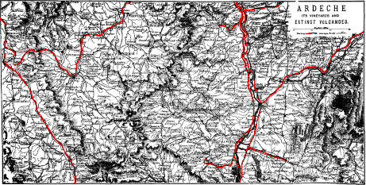
For map of the Mountains of Ardeche see page
84.
For continuation southwards see map, page 56.
(See Map, page 46).
Ardèche should not be visited till June, and not later than September. In the villages and hamlets in the pastoral districts most of the best houses are inns or auberges, where a bed can be had, and abundance of fare, in the shape of fried potatoes, butter, milk, eggs, coffee, bread often of rye, and hard salt pork sausages. The national dish is potatoes sliced very thin and fried with butter. They make also a pleasant soup of herbs mixed with potatoes. The numerous inns are required for the accommodation of guests during the fairs, of which each hamlet has at least 2, while the larger villages and towns have from 4 to 8, besides market-days. One of the prettiest sights in Ardèche is to see the people flocking from every direction along the winding mountain roads to the village where the fair is being held—many on foot driving small parcels of pigs, sheep, goats, or cattle, or carrying baskets full of eggs, cheese, and butter, and often an old hen; others with carts loaded with potatoes; others travelling comfortably in their char-à-bancs; and others on horseback, the women as well as the men being astride.
Many of the inns, and even of the owners, are at first sight forbidding, but after a little kindly conversation the aspect of things improves rapidly. In the higher regions the agricultural products are potatoes and hay. In the next zone are wheat, chestnut, walnut, apple, pear, and cherry trees, cultivated on terraces supported by low stone walls of rough unhewn stones. Vineyards are in the lowest zone, on the sunny side of the mountains. The cattle are of a goodly size, mostly cream-coloured and light brown, with large bones and white horns generally tipped with black.
At the fairs, besides every kind of country produce, girls and grown-up women offer their hair for sale. The best do not yield above 8s., and many only 2s. 6d. or 3s. When the bargain is made a woman shears it off in the same way as sheep are shorn, leaving only 46 a little in front. It is all over in two minutes, twisted into a hank, and thrust into a sack. Instead of receiving money, they usually take the value in cloth and ribbons. The standard occupation of the females during their long winters is lace-making.
Among the remarkable sights in Ardèche are the volcanic rocks, Mont Mezenc and the Gerbier-de-Joncs, above the source of the Loire. The most central station of the diligences is Le Cheilard (see page 83).
After Valence the railway traverses some of the most picturesque parts of the valley of the Rhône. At Mornas, 44½ m. S. from Valence and 23½ m. N. from Avignon, begins the region of the olives.
Livron. Crest.
PARIS
MARSEILLES
395
142
LIVRON, pop. 4500, on the
Drôme, at some distance from the station. Restaurants at station. Inns
in the town. On the other side of the Rhône, connected by railway
bridge, is La Voulte, 1¼ m. W. (see
p. 82).
A highway, partly by rail and partly by diligence, extends from Livron,
68 m. east, to Aspres on the line between Grenoble and Marseilles.
As far as the Pass de Cabres the road ascends the picturesque and
well-cultivated valley of the Drôme, where there is a large Protestant
population, nearly every village having its Temple Protestant (see maps,
pages 26, 46, and 56).
11 miles E. from Livron by rail is Crest, pop. 6000. Hotels: Bonsans-Reboul, the best; opposite the France; and on the promenade, by the side of the river and the bridge, the inn Pont de la Drôme. The omnibuses of the two hotels await passengers. Crest is situated partly on the Drôme and partly on the steep sides of a high hill. At the foot, in the market-place, are the parish church and the Bibliothèque. Straight up from the bridge by the R. des Cordeliers, and a flight of 116 steps, is the entrance to the poor church of N. D. de la Garde, attached to the “Asile” for young children. A little higher up are the hospital and church. Above the “Asile” is the entrance to the enclosure, on which stands a huge structure, partly Roman and partly the remains of a castle which was added to it in the 13th cent. The highest side is 170 ft. above the ground, and the other three 148 ft., ascended by 260 steps. Although so high, the view is limited by the high side, into which visitors are not admitted. The concierge lives below in the town, near the hotel. The best way up the hill is by the first narrow street, left from the hotel, the Rue de la Carrière, which continue to a stone lettered “limite de l’Octroi,” whence ascend by the path, right, to the Calvary, where there is a splendid view of the valley of the Drôme.
Coaches daily from Crest to Montelimart, 22½ m. S.W. (see Index); also to Beaufort, 12 m. N.E., on the Geroanne. From the copious source of the Geroanne are occasionally thrown up blind trout. 3 miles from Beaufort is the picturesque gorge of Ombléze. Coach also to Bourdeaux, 16 m. S., passing Saou, 9 m. S. from Crest (see map, p. 56). Saou. Saou, pronounced Sou, pop. 1200, is a poor dirty village on the Vebre. Inn: H. Lattard. Mixed up with and built into the surrounding squalid houses are the remains of the abbey church and 47 buildings of Saint Tiers, founded in the 9th cent. The best parts are the wall and square tower near the Mairie. The remains of the church are within the court of a stable. Near it is the little parish church, 12th and 13th cents. Saou is visited principally on account of the beauty of the narrow valley of the Vebre, between two ranges of wooded mountains, from 4000 to 5000 ft. above the sea, with sand and limestone strata piled up into vertical cliffs and twisted into strange fantastic forms. It is 8 m. long, and from a few yards to 2 m. wide. At the commencement or west end, and on the right or N. side of the stream, is the Roche Colombe, 4595 feet above the sea, and opposite, on the other side, is the Roc, an isolated cliff like the shaft of a column. Mt. Colombe has also a columnar cliff, and at the base a house called the Donjon de Lastic, 14th cent., and a little farther down a square house, with two round turrets, called the Château d’Eurre. The best parts of the valley are this entrance and the east end, or its termination, where the Roche Courbe or Veillou rises to the height of 5324 ft. above the sea, and on which is the source of the Vebre. At the foot of Mt. Pomeyrol, about a mile from the entrance, the valley becomes so narrow that there is scarcely sufficient room for the stream to pass through. 2¼ m. farther up is the villa of Tibur, and, a little beyond, the terminus of the valley.
Bourdeaux. Dieulefit.
Coach from Saou to Bourdeaux, 7 m. S. Bourdeaux, pop. 1800. Inns: Blanc; Petit; Temple Protestant. On both sides of the Roubion, 8 m. N. from Dieulefit. On the left side of the river is the old town, composed of squalid houses and execrably paved steep lanes, creeping up the hill, crowned with the ruins of a large castle founded in the 8th cent. Agriculture and the rearing of silkworms are the chief industries. Although Bourdeaux is hardly 8 m. from Dieulefit the courrier requires 2 hours to perform the journey, as a high mountain ridge, the Dieu-Grace, intervenes between the two places.
Dieulefit, pop. 5000. Inns: H. du Levant; Temple Protestant. On the Jabron at the foot of Mont de Dieu-Grace, 17½ m. E. from Montelimart, between which two towns several coaches run daily. In the town are silk, cotton, and cloth mills, and in the suburbs potteries where a coarse kitchen ware is made. The principal towns passed on the road to Montelimart are Poët-Lavat, 3⅛ m.; La Begude, 7½ m.; under Châteauneuf-de-Mazenc and Montboucher, situated on eminences at a considerable distance from the road (see map, page 56).
Die.
(Maps, pp. 46 and 56).
Crest to Aspres, 57 miles east by Die.—The road as far as the Pass de Cabres follows the course of the Drôme. The first town passed is Saillans, 9½ m. E. from Crest, pop. 1800. Inns: Lambert; Latour. In a ravine of the Drôme, 6½ m. farther, is Pontaix, similarly situated. 23 m. E. from Crest, and 34 m. W. from Aspres, is Die, pop. 4000, the principal town in the valley of the Drôme, which here receives the Mérosse. Inns: St. Dominique; Alpes—the coach stops between them; Église Protestante. The Clairette de Die is a thin white wine, drank during its first year; 48 in the second it is apt to deteriorate. Coach to Châtillon, 12 m. S.E. Die, on the Drôme, is in a small plain surrounded by mountains, of which the most remarkable is Mont Glandaz, 6648 ft. above the sea, flanked by great buttress cliffs. On the top is an undulating plateau, covered with small stones and grass; 5 hrs. required for the ascent. At the foot of the mountain is the rustic but not uncomfortable establishment of Sallières-les-Bains; pension per day, with baths, 9 frs. The treatment is called “Sudations résineuses.” The bath resembles a large oven, in which, after having been heated with resinous fir-wood, the patients sit as in a Turkish bath. Open from 15th June to 15th September. The landlord is likewise proprietor of a large part of Mt. Glandaz, whence he receives his supplies of fir-wood. On the top of a hill on the other side of the Drôme is a similar establishment, called the Martouret, pension 12 frs. The way to it strikes off the main road opposite the eminence, on which is the chapel of Notre Dame, commanding a very good view of the valley. At the entrance into Die from Crest, at one of the old gateways, a road strikes off to the left, which makes the tour of the ruins of the castle, amidst vines and mulberry trees. At the other end of the town, near the viaduct, is a much better gateway or Roman triumphal arch, fronting the “Place” St. Marcel. The parish church has been rebuilt, excepting the narthex.
Luc. Aspres.
From Die the road to Aspres is continued by another diligence, which changes horses at LUC en Diois, pop. 940. Inn: Du Levant; Église Protestante, 10½ m. S. from Die, or 23½ N.W. from Aspres. A poor town, among vineyards and walnut trees, on the Drôme, at the foot of high mountains. Nearly a mile up the river the narrow gorge becomes almost closed by huge fantastic masses of conglomerate which have fallen from the adjoining cliffs. 9½ m. farther up the valley is the village of Beaurières (Inn, where the coach changes horses). The ascent is now commenced by a beautiful and excellent road, of the Col de Cabres, 15 m. S. from Luc, and 4923 ft. high. On the pass, 2 m. from Beaurières, is La Baume, with the cave of Baumette, and a waterfall 195 ft. high. 4½ miles from Baume, and 3 from Aspres, is St. Pierre d’Argenson, with a sparkling acidulous chalybeate spring, grateful to the palate and invigorating to the system, and forming a refreshing mixture with the wine of Aspres, which is thin, and is at its best when 2 years old. Aspres, pop. 800, is situated on the railway, 126½ m. N. from Marseilles, and 77½ m. S. from Grenoble. The coach sets down passengers either at the station or at the inn H. Ferdinand. The church has been rebuilt, excepting the portal, which has on the tympanum a curious representation of the Trinity.
Montélimart.
PARIS
MARSEILLES
412
125
MONTÉLIMART, pop.
12,000, situated at the confluence of the Roubion and Jabron with the
Rhône. Hotels: near the station, the France; in the town the
Poste; the Princes. The office of the coaches for Le Teil, on the W. side of the Rhône; for Grignan, p. 49; Dieulefit, p. 47; Bourdeaux, p. 47; and Nyons, p. 50; is near the hotels Poste and Princes. Up
the Grande Rue is the principal
49
church. On the opposite side of it is the Place d’Armes, with the Post
Office, the Palais de Justice, and the Hôtel de Ville. At the top of the
first flight of steps in the Hôtel de Ville is a marble slab 1 yard long
and 2 ft. wide, bearing in Latin a charter of the town engraved in 1198.
At the end of the street, the Rue Porte-Neuve, off the “Place,” is the
Temple Protestant. Montelimart is famous for white almond-cake,
“Nougat,” of which the best is in the shops in the Grande Rue. On an
eminence on the side of the town farthest from the station are the
ancient citadel and the tour de Narbonne, 11th cent. Montelimart,
originally a city of the Seglauni, became a Roman settlement under the
name of Montilium, which was changed afterwards into Monteil-d’Adhemar
by a powerful family, who came into possession of it in the days of
Charlemagne. To the same family belonged also Rochemaure, on the opposite side of the Rhône (see
page 92, and map page 56).
Omnibuses to the sparkling chalybeate spring of Bondonneau, 2½ m. S.E. Two coaches daily to Grignan, 15 m. S.E. from Montelimart; one by Alan and Reauville, the other goes round by Donzère, 4½ m. longer. (See map, page 56.)
According to Mr. Murray (p. 109) in the village of Alan, half-way between Montelimart and Grignan, “there existed down to 1802 the first white mulberry tree planted in France. It was brought from Naples by Guy Pope de St. Auban, seigneur of Alan, one of the soldiers who accompanied Charles VIII. on his Italian campaign, in 1494.” The mulberry tree occupies a much wider zone in the south of France than the olive (see map, page 56).
Grignan. Marquise de Sévigné.
Grignan, pop. 1900; Inn: Sévigné, is built on the slopes of a hill on the top of which, 100 ft. above the “Place,” are the gardens and ugly half-ruined and half-inhabited castle where Mme. Sévigné died. The former Salle du Roi has been converted into a picture-gallery, containing upwards of 300 paintings, among which the most interesting are—the portraits of Madame and her daughter, by Mignard. About half-way up the hill is the church, commenced in the 12th cent. In front of the altar a white marble slab, 2½ ft. long by 1½ wide, bears the following inscription:— “Cy Git Marie de Rabutin Chantal, Marquise de Sévigné. Décédé le 18 Avril 1696.” Above the well, in the “Place,” is a bronze statue of her with corkscrew curls. About ½ m. from the town is what was one of her favourite walks to an overhanging ledge of sandstone called the Grotte de Roche-Courbière. To visit it, descend from the inn, then take the first byeroad right, by a row of poplars to a short stair. A coach runs from Grignan to Nyons, 20½ m. S.E. by Valréas and Taulignan. Valréas (pronounce the “s”), 8¼ m. from Nyons and 22 from Orange, pop. 950; Inn: H. du Nord, is partly surrounded with its old walls, garnished with square towers and pierced by narrow gateways. Taulignan, 17 m. N.W. 50 from Nyons by Valréas and 11¼ m. by Rousset, Inn: H. du Commerce, pop. 1200, is also partly surrounded with its old walls.
PARIS
MARSEILLES
420
117
DONZERE. H. du
Commerce. Romanesque church with handsome spire. Four and a half miles
south is Pierrelatte station, and the terminus of the unfinished
railway to Nyons, 15 miles from Grignan.
Coach from Pierrelatte to St. Paul-Trois-Châteaux, fare 6 sous, time 45
minutes. This, the Roman Augusta-Tricastinorum, contains an interesting
cathedral of the 12th cent., restored. Many Roman relics have been found
in the neighbourhood.
La Croisiere.
PARIS
MARSEILLES
432
105
LA CROISIERE.
Two small inns at station.
Omnibus awaits passengers for Pont Saint-Esprit, H. de l’Europe,
3½ m. W. on the other side of the Rhône by an avenue of poplars.
Fare, 40 c. The bridge is 2756 ft. long, has 20 arches, was commenced in
1265 and finished in 1309. Till 1865 it had 21 arches, when the two at
the W. end were demolished and converted into one large iron arch for
the convenience of the steamboat to pass through. (For Pont Saint-Esprit, see page 98).
Diligence at La Croisiere station for Nyons, 29½ m. E. by the valleys of the Lez and the Aigues, and the town of Bollène, pop. 6000. Inn: Croix Blanche, on the Lez, 4½ m. E. Manufactures of fire-bricks and clay-tubing. 7½ m. E., Suze-le-Rousse, pop. 2200. Coach here to Mansis. 12 m. E., Tulette, pop. 1300; Inn: Vigne. Horses changed here. 15¾ m. E., St. Maurice, pop. 1000; Inn: Lion d’Or. Near the village of Vinsobres a cross-road leads to the highway between Nyons and Vaison. At Nyons the coach stops in the “Place” in front of the H. du Louvre; whence the diligences start for Grignan and Montelimart (see map, page 56).
Nyons.
NYONS, on the Aigues, pop. 4000. Hotels: Louvre, in the Place; Voyageurs, in a corner. Temple Protestant next the hospital. Nyons, surrounded by high mountains, is famous for its mild springs, and therefore eminently fitted for those returning from the Riviera. The orange and palm do not grow here, but abundance of mulberry, almond, fig, peach, and pear trees. In the oak forests are remarkably fine truffles. Silk mills and the preserving of fruit and truffles supply the principal industries. The old town, called Les Forts, is built on an eminence partly surrounded with its old walls garnished with square towers, 14th cent. The vieux château, or centre tower, has been converted by the curate into a chapel surmounted with an image of the “immaculately conceived.” The part of the town below is called Les Halles, whose dirty streets are bordered with thick heavy arches. The rest of the town, extending to the Aigues, is called the Bourg. The bridge, built in 1341, is of one arch and considerably higher in the centre than at the ends.
The Pontias Breeze.
Behind the old town is the ridge called the Col-du-Divès, on which is the cavern, or rather hole, whence it is reported (most absurdly) that the night-breeze called the Pontias issues. In winter this wind is very 51 cold, and blows from 5 P.M. to 9 A.M. In summer it is pleasant, and blows from 9 P.M. to 7 A.M. The peculiarity is, that the degree of force is constant, and never breaks out into gusts. To go to the cave, commence from the foot of the tower of the church and ascend by the Rue Pousterle, having on the left the old town-walls. Beyond the last tower a path strikes off to the right, which take, and ascend to a small chapel on the top of the ridge, passing at about half-way a pavilion. Or, if preferred, continue the road from the tower to the part of the ridge where there is a gap; whence take the path at the back of the ridge leading to the chapel. Those who have ascended by this latter way retrace their steps from the chapel by the same path for 116 yards; while those who have come by the other go 116 yards beyond the chapel. Then about 30 yards to the left of the path will be observed the thin ledge of a rock overlying a small cavity, which is the entrance to the Pontias hole, of great depth, but otherwise of insignificant dimension. Among the neighbouring calcareous strata are several crevices. The view of the valley of the Aigues from this hill is very beautiful. The ascent takes 35 minutes.
Nyons to Serres (see map, p. 56), 41 miles east by the valleys of the Aigues and Blème, bounded on both sides by high mountains. Time, 7 to 8 hours. Fare, 7½ frs. Most of the towns passed are at a considerable height above the road, and sometimes on account of the steepness of the banks cannot be seen from it. The first village passed is Les Piles, situated on the road 3¾ m. from Nyons, and 3½ m. from the gorge “Des 30 Pas,” one of the excursions from Nyons. A little farther E. is Curnier, on a hill on the S. side of the river, here crossed by a bridge. Then follows Sahune, also on a hill on the S. side of the river. The gorge now becomes very narrow and the mountains precipitous, and, having passed under Villeperdrix, the road crosses to the S. side of the river and arrives at the station for St. May, where there is an inn, H. Marius. St. May itself is high up on the opposite side of the river. The cemetery is on the point of a lofty precipitous rock. After St. May the diligence crosses the river to the village of Rémusat, 17 m. E. from Nyons on the Oule, at its junction with the Aigues. The diligence now returns to the S. side of the river, which it crosses for the last time at Verclause, 22 m. from Nyons, and then proceeds to Rosans, 3½ m. farther or 15½ m. from Serres. From Rosans commences the ascent of the low Col of Ribeyret, whence the road descends to Serres by the N. side of the Blème, passing the villages of Epine and Montclus. Serres, pop. 1200. Inns: Voyageurs; Alpes. On the railway, 112½ m. N. from Marseilles and 77½ S. from Grenoble (see p. 340).
Orange.
PARIS
MARSEILLES
444
93
ORANGE, pop. 10,300.
Inn: H. de la Poste et des Princes. This, the Arausio of the
Romans, is situated on the slowly-running Meine. Close to the hotel is
the Triumphal Arch supposed to have been erected in honour of Tiberius
for his victory over Sacrovir and
52
Floras, A.D. 21. It stands E. and W.,
is of a yellowish sandstone, 75 ft. high, 64 wide, 27½ deep, and
consists of 3 arches, of which the centre one has a span of 17 ft. and
each of the other two a span of 10 ft. The soffits are ornamented with
six-sided sculptured panels. By the side of each arch is a grooved
Corinthian column. Over the small arches are sculptured trophies in the
shape of shields, boars, bulls, rostra, ropes, masts, dolphins, arrows,
etc. Over the main arch, on each side, is a group representing a
combat.
At the other end of the town are the cathedral and the Roman theatre at the foot of the hill, crowned with an image of Mary. The Cathedral of Notre Dame, 12th cent., is small, and resembles in style the churches of the S.W. of France, of which the cathedral of Perpignan is the great type. No transepts nor triforia. Lofty chapels between the buttresses, and over the arches diminutive clerestory windows. A plain and ugly square tower, in this case, at the east end. Adjoining is the Place de l’Hôtel de Ville, with a statue to “Raimbaud II., Comte d’Orange, vainqueur à Antioche et à Jérusalem en MXCIX.” In the promenade of the town, the Cours St. Martin, is a statue to the Comte de Gasparin, a writer on agriculture, and a native of Orange; where also he died in 1862. At the foot of the hill, overlooking the town, are the grand and imposing ruins of one of the most perfect Roman theatres. It is built in a semicircular form, has a façade 118 ft. high and 384 ft. wide. The wall is 13 ft. thick, composed of huge blocks of stone. The semicircular wall consists of five stages, and included accommodation for 6500 spectators. The building has recently been repaired and cleared of a quantity of rubbish.
Prince Of Orange and Orangemen.
In the 11th cent. Orange became an independent countship, probably under Raimbaud I., whose successor, Raimbaud II., has just been noticed. On the death of Philibert of Châlons, last of the third line of princes, the inheritance fell to his sister’s son Count René (Renatus) of Nassau-Dillenburg, who remaining childless chose as his successor his cousin William I., stadtholder of the United Netherlands. The title “Prince of Orange” was consequently borne by the stadtholders Maurice, Frederick-Henry, William I., William II., and William III. After the Revolution in Ireland of 1688, the English-Protestant party were designated Orangemen, from the title of their leader, William III., Prince of Orange. Louis XIV. seized the principality of Orange in 1672, but lost it by the peace of Ryswick. On the death of William III. there were two claimants—John William Friso of Nassau-Dietz, designated by William’s will, and Frederick I, King of 53 Prussia, who claimed to be nearer of kin, and to have been appointed by the will of Frederick-Henry. Thereupon Louis XIV. declared the principality a forfeited fief of the French crown, and assigned it to the Prince of Conti. The Parliament of Paris decided that this last prince should have the dominium utile; and its finding was confirmed by the treaty of Utrecht (1713), which, however, left the title and coat of arms to the King of Prussia, who is still styled Prince of Orange (Prinz von Oranien). John William Friso, however, also took the title, and his successors the stadtholders and kings of the Netherlands have all been designated princes of Orange-Nassau. Vast numbers of silkworms are reared at Orange. Coach daily to Valréas 22 m. E., p. 49, and to Vaison 17½ m. N.E. (Map p. 56.)
Vaison. St. Quenin.
Vaison, pop. 3400. Inn: H. du Commerce. 5 m. N. from Malaucene, 17½ m. N. from Carpentras, 11¼ m. S. from Nyons, 13½ m. W. from Le Buis, and 4 m. S. from Villedieu. Old or high Vaison is on the left side of the Ouvèze, and new Vaison on the right. Both are connected by a Roman bridge of one arch of 48 ft. span, having at the left side a more elongated curve than at the right. The old town, with its squalid streets and poor houses, covers the sides of a hill crowned with the ruins of a castle built by Raymond VI., Count of Toulouse, in 1195. It is a plain rectangular edifice, 20 yards square, with a small square tower at one of the angles. A little below is the parish church with round and early pointed arches and square tower at S.E. end. The view from the terrace is beautiful.
The most ancient and most interesting buildings are in new Vaison, and very near each other. Take the Villedieu road to just without the town, where a byeway on the right leaves the main road at an acute angle. Continue this byeway to two arches, which indicate the site of the Roman theatre. The chapel seen to the N.W. is St. Quenin, while a little beyond is the cathedral. The amphitheatre, or “les arènes” as they call it, is built on the same plan, and in a similar position, as the theatre of Orange, but far less perfect. Besides the two arches, there exist still five tiers, but all the stone seats are gone, excepting those on the lowest stage. Now it has become a vineyard and an orchard. Beyond, by a narrow road, is St. Quenin, of which the east end is Roman, and may date from the 4th cent., but the rest belongs to the 10th. The east end, or apsidal termination, is in the form of an equilateral triangle, with an attached fluted Corinthian column at the apex, and also at each of the angles of the base. One of the pillars has figures on the capital. The neat little round-headed window on each side of the triangle is evidently a later addition. Bishop Quenin died in 578.
Of the Cathedral the best part is also the outside. Under the eaves of the roof of the nave run a dentil moulding, and a frieze of medallions connected by an undulating line of foliage. The walls are pierced by small round-headed windows resting on spiral colonnettes. 54 The frieze of the aisles is plainer. In the interior, early pointed arches of great span, rising from four massive piers of clustered pilasters on each side of the nave, support a narrow-vaulted roof, also pointed. This part of the church dates from the 12th or 13th cent.; but the chancel, with its two Roman pillars, and arcade of blank arches on colonnettes, is much earlier. Over the little chapel, at the N.E. side, rises an elegant square tower. Next the tower is a very beautiful cloister, 11th cent., bearing some resemblance to the cloister of St. Michel in Brittany. It is 22 yards square, surrounded by an arcade of 13 arches on colonnettes in couples 3½ ft. high. At the corners is either a massive stone pier, or the stone hewn into 5 colonnettes. All the Roman antiquities Vaison has retained for itself are under this corridor. The most perfect piece of sculpture is a skull. On the top of the hill opposite the castle stands an image of the “Immaculée” on the capital and part of the shaft of a Roman column. (Map p. 56.)
Sorgues. Carpentras.
PARIS
MARSEILLES
455
82
SORGUES, pop. 4000, on the
Sorgues, which rises at Vaucluse. Junction with line to Carpentras,
10½ m. eastwards. Carpentras, pop. 10,500, on an eminence
surrounded by avenues, rising from the Auzon. Hotels: Universe;
Orient, both good, and in the large “Place” opposite, the Hôtel-Dieu,
built in 1760 by Bishop Malachie. In the Hôtel-Dieu are a portrait by
Rigaud of the Abbot Rancé, and a handsome staircase. In the centre of
the Place is a bronze statue of the benevolent Malachie d’Inguimbert.
From this “Place,” up the narrow street, the first public building is
the church of St. Siffrein, dating from 1405.
The square tower, with octangular cupola, attached to the north side of
the chancel, was part of a former church constructed in the time of
Charlemagne. The stair (89 steps) up to the roof, whence there is a
pleasing view, commences at the south side of the chancel, outside.
Among the pictures in the interior of the church, the best is a
“Salutation” by the Flemish painter Andreas Schoonjans. Behind the
pulpit is a picture by Mignard representing Mary giving some of her milk
to St. Bernard. At the commencement of the chancel, near the cupola, is
the chapel in which the reliquaries are kept. Among them are the skull
and bones of St Siffrein, and the nail that pierced the right hand of
J. C. on the Cross. In the chancel is a “Coronation” of Mary
painted on wood, 15th cent., and behind the altar another “Coronation”
by P. Veronese. In the foreground are Saints Laurence and Siffrein.
Adjoining is the Palais de Justice, 1640, with frescoes and a crucifix
in the “salle des assises.” Within the court, right hand, is a Triumphal
arch, erected by Diocletian between 284 and 305, 30 ft. high (but
originally higher), 25½ ft. wide, 14½ ft deep, and 10 ft. span. On the
N. side, between two attached fluted columns, is, in bold relief,
a Latin cross with the arms at obtuse angles. On each side stands a
prisoner, with his hands behind him, chained loosely to the cross. From
the cross are suspended swords, horns, and pouches. On the south side is
a similar cross, but not in
55
such a good state of preservation. The main beam resembles more the stem
of a tree. From the top hangs the dress of a warrior.
The continuation of the street from the church leads to the Porte d’Orange, surmounted by a square tower 120 ft. high, of which only three sides exist. It was built by Innocent VI., who also surrounded the town with the ramparts, which now form beautiful Boulevards. From the boulevard in front of the gate are seen to the left the canal aqueduct, to the right the town water aqueduct, and in the distance, between the two, beyond a smaller ridge, Mont Ventoux, extending from N.W. to S.E., with a slight bend. The aqueduct which brings water to Carpentras crosses the valley of the Auzon by 48 massive arches. The canal, which by irrigation fertilises the surrounding country, extends from the Durance to the Ouvèze, a distance of 43 miles, and cost £90,000. In the principal Boulevard, nearly opposite the manufactory of preserved fruits of Eysseric, is the building containing the library and museum. The library contains a valuable collection of manuscripts, explained in a printed 4to volume, several rare incunables, and above 4000 vols., for which there is not sufficient accommodation. Carpentras: Museum. In the “Musée” are a few good pictures, and Roman statuettes in bronze and marble, all from Vaison, excepting a small Apollo found at Carpentras. The gem of the antiquities is an Egyptian-Aramaic limestone slab, 4th or 3d cent. B.C., 19¼ in. long by 13½ wide and 1 thick, divided into three compartments by narrow borders. In the principal compartment stands a young woman with uplifted hands before Osiris, who is seated in front of a table on which are sacrifices. Behind Osiris stands Isis. Below, in the second compartment, is the embalmed body of the deceased, attended by the jackal-headed Anubis and the hawk-headed Horus. Below the body are the four customary funeral vases. Below this, in the third compartment, is an Aramaic inscription in four lines, of which the last two are injured. The first French opera was written in Carpentras by the Abbot Mailly in 1646. Truffles. Truffles or tuberous mushrooms are black, dark gray, violet-coloured, or white. The last variety, principally found in the N. of Italy, has the smell of garlic. About Carpentras, and in the department of Vaucluse, they are black, and are found from 4 inches to 1 foot below the ground, at the extremities of the fibrous roots, both of the common and of the evergreen oak. The season for gathering them is from November to the end of March, after which those which remain become soft and decompose. They are at their best in January, when the rind is black, hard, and rough, and the inside mottled black and white. In size and shape the best resemble small round potatoes, of which the largest may weigh ½ lb., although few are of that size. They are sought by means of dogs and swine, both of a peculiar breed; the sow being the more dexterous of the two, and continues efficient for its duty for upwards of 21 years. It scoops out the earth with its powerful snout in a masterly manner faster than any dog can do. When just about to seize the truffle, the attendant thrusts a stick between its jaws, picks up the truffle himself, and throws to the sow instead two 56 acorns. Without this reward each time, the sow would not continue the search. Till the truffles are ripe, they have no odour.
Ortolans.
The ortolans, which breed about the hills and woods of Carpentras, migrate in autumn. While on the wing they are allured down to nets laid for them by ortolans singing in cages. Those caught are put into dark rooms, where they are fattened. In about a month’s time they become so plump as hardly to be able to fly, when they are killed and sold, excepting a few kept for alluring the others next year. The singing time of these is transferred from spring to August, by pulling out the large feathers of the tail and wings in April, and keeping them in a dark apartment till August.
Carpentras is also famous for its preserved fruits and “berlingots,” a sweetmeat made of the syrup of a mixture of fruits, not unlike barley sugar, but cut into pieces 1 in. square. The best maker is Eysseric.
Carpentras is a good halting-place for delicate people returning from the Riviera—the hotels are comfortable and the prices moderate—excellent public library, pleasant walks, and in the vicinity of many interesting places connected by roomy diligences.
Coach daily from Carpentras to Nyons 28½ m. N., by Vacqueyras 6½ m., and Vaison 17½ m. Also to Nyons 26 m., by Malaucene 10 m. N.E., and Vaison 15 m. by this way. Coach to Buis-les-Baronnies 23 m. N.E., passing through Malaucene. Coach from Buis to Nyons 19 m. N.W. by Mollans. Courrier from Vaison to Buisson 7½ m. N. on the Aigues. Coach to Sault 28½ m. E.
Omnibus several times daily to St. Didier 4½ m. S.E. Coach daily to L’Ile 10½ m. S., convenient for visiting the fountain of Vaucluse. Coach on market-days from Carpentras to Apt 28½ m. S.E., by Venasque 7¼ m. S.E. (For these places see Index, and maps pages 56 and 66.)
THE PLAINS
between the ARDECHE,
the RHONE and the DURANCE.
opp. 56
[West End] For continuation northwards see map,
page 46.
[East End] For continuation northwards see map, page 327.
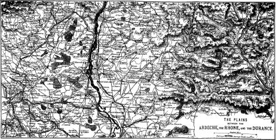
For continuation eastwards see map, page 327.
[West End] For continuation southwards see map,
page 66.
[East End] For continuation southwards see map, page 163.
Bedoin. Mont Ventoux.
Coach daily to Bedoin 8¾ m. N.E., 900 ft. above the sea, pop. 1300. Inn: Hôtel de Mont Ventoux. Station to ascend Mont Ventoux, 6274 ft., by a good road from the south end of the ridge. The base is about 2 m. from the village and the top 10 m. by the easy southern slope. Time to ascend, from 5 to 6 hours. Mule, 10 frs. No guide necessary. Before commencing the ascent, go to the top of the hill by the side of the church and take a general survey of the land. The road extending to the right, under those mulberry trees, is the one to take. A little distance along it, at a well with a cistern, a narrow road strikes off to the left and ascends the mountain by a steeper and shorter way. The mountain offers a splendid field for botanists. To see the sun rise from the top, travellers generally start at 11 P.M., and await the appearance of the glorious luminary in the chapel of Ste. Croix, on the summit. Mont Ventoux is the culminating point of the Lure range, an offshoot from the Alps. Among the minerals it has quartz in every form and colour, in nodules and in strata. Also beautiful jasper and fossils such as ammonites and belemnites. The kaoline clay, “terre de Bedouin,” is found in the plain between Bedoin and Crillon, a village 2¾ m. N.E. At different parts in this 57 neighbourhood are strata of sandstone with fossils, overlying beds of sand. These strata crop up at different parts of the department.
Four and a half m. S. by omnibus from Carpentras is the village of St. Didier, with a good hydropathic establishment in an old château. Rooms from 1½ fr. to 3 frs. Servants’ rooms, 1 fr. Meat, breakfast and dinner, both with wine, 5 frs. Coffee in the mornings, ½ fr. Meat, breakfast and dinner, for children and servants, 3 frs. Service, ½ fr. First consultation, 10 frs. Every other consultation in the study gratis; but in the guests’ room 1 fr. each time. The baths are in the style of the Turkish baths, with the addition that the heated air is impregnated with resin or is turpentinised (térébenthiné). It has a beneficial effect on the lungs and muscular rheumatism. St. Didier is 2¾ m. W. from Venasque and 2 m. from Le Beaucet (map p. 56).
Two coaches daily from Carpentras to Buis-les-Baronnies, 23 m. N.E., by Malaucene 10 m. N.E. The road from Carpentras, in crossing the N.W. extremity of the Ventoux chain, passes by the village of Le Barroux on a hill crowned with the ruins of a castle, 15th cent. At the foot of Mont Ventoux, 5 m. S. from Vaison and 13 m. S.W. from Buis, is Malaucene, 1000 ft. above the sea, pop. 3000. Inn: Hôtel de Cours, in a picturesque neighbourhood, of which there is a good view from the calvary on an eminence in the town. At about ½ m. from the inn is the spring Groseau, gushing forth from the base of a lofty calcareous cliff, crowned with the ruins of the chapel of Groseaux, 11th cent. The stream that issues from the spring is soon strong enough to set in motion the machinery of paper, silk, and flour mills. Any one may visit the silk mills. In 1345 Petrarch ascended Mont Ventoux from Malaucene. The ascent from this place is more difficult, but more picturesque than from Bedoin and requires 2 hours more. On the side of the mountain are the springs—Angel, 3826 ft.; Puits de Mont-Serein, 4774 ft.; and Font Filiole, 5866 ft.
The road from Malaucene to Buis follows the picturesque valley of the Ouvèze. The most important village passed on the way is Mollans, with, in the neighbourhood, a great cave, beyond which is a deep lake. Shortly before arriving at Le Buis are seen, on an eminence, the bronze statue of Bishop Trophime, and beyond, the cliff of St. Julien. No public vehicle goes farther than Le Buis, although the road is good the length of the railway between Marseilles and Grenoble, passing St. Euphemie 7 m. E., St. Auban 10 m. E., Montguers 11¼ m. E., Lacombe 13¼ m. E., and Laborel 27 m. E., after which the road descends to the railway by the valley of the Céans.
Le Buis.
LE BUIS, pop. 2000; Inns: Luxembourg; Commerce; is situated in a hollow on the Ouvèze surrounded by mountains covered with olive, mulberry, fig, peach, and cherry trees. Schistose and shingle strata cover some parts; at others there are calcareous rocks in every form, either in gigantic cliffs or in countless strata of various thickness and at different angles. To go to the statue of St. Trophime and to the top of St. Julien, having crossed the bridge, ascend by the winding road to the valley, right hand, which continue to the next 58 bridge. For the statue cross the bridge and go directly to the right: for the cliffs, ascend by the back of St. Julien by the path on the left, just before reaching the bridge.
59 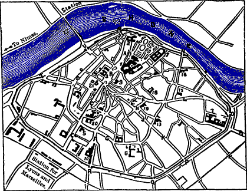
SKETCH PLAN OF AVIGNON.
1. Palace of the Popes: the small building opposite is the Consistoire de Musique; by the side of the palace is the church of Notre-Dame Des Doms, and by the side of the church, on the top of the hill, the beautiful promenade des Doms; whence a stair leads down to the Rhone, near 23, the old bridge Bénézet. Below the promenade is, 2, formerly an archbishop’s palace, now a seminary. Below the Pope’s Palace is B, the Place de l’Hotel de Ville, with the H. de Ville and theatre. The street C C, extending southward to the principal station, is called the R. de la Republique or Rue Petrarque, its original name. Just behind, 3, the Hotel de Ville is the church of St. Agricol, and a little farther S.W. is the Rue Calade, with, at 4, the Musée Calvet, and at 5, across the Rue de la Republique, the Musée Requien, a museum of natural history. Farther east is, 6, St. Joseph’s College, with all that remains of the Church of the Cordeliers, where Laura was buried. That large building at the east corner of the town, 7, is the Hotel-Dieu or hospital; the gate, O, beside it, is the Porte St. Lazare; while 8 indicates the road to the cemetery. A short way E. from the Place de l’Hotel de Ville is, 9, the church of St. Pierre. No. 10, not far from the station, is the Penitentiary, formerly the Convent of the Celestins, founded by Clement VII. in 1879; entrance from the Place du Corps-Saint. No. 13, Convent du St. Sacrement. 14. Chapel Bénézet on bridge. 15. St. Symphorien. 16. Sacré-Cœur. 17. Prison. 18. Mont-de-Piété. 19. Court-house. 20. Lyceum. 21. Prefecture. 22. Suspension Bridge. 23. Bénézet Bridge. A, Place du Palais. B, Place de l’Hôtel de Ville. C, Rue de la République. D, Rue Calade. F, Place du Corps Saint. G, Rue des Lices. H, Place Pie. J, Vieux Septier. K, Rue du Saule. L, Rue Carréterie. M, Porte du Rhône. N, Porte de la Ligne. O, Porte St. Lazarus. Q, Porte L’Imbert. R, Porte St. Michael. S, Porte St. Roche. T, Porte de l’Oulle.
PARIS
MARSEILLES
461
76
AVIGNON, pop. 39,000, surrounded with strong embrasured walls,
garnished with 39 towers, and pierced with 9 gates, is situated on the
Rhône, 2 m. above its junction with the Durance, and 20 m.
N.E. from Nîmes by the railway passing the Pont d’Avignon and
Remoulins. Hotels: *Europe, near the Pont; *Luxembourg; Louvre;
St. Yves, in the centre of the town, near the Place Pie, the great
market-place. Temple Protestant in the R. Dorée, near the
Préfecture. Cabstands at station and in the Place de l’Hôtel de Ville,
2 frs. per hour. From the station, a beautiful avenue, the
Cours de la République, leads up to the Place de l’Hôtel de Ville, with
statue “au brave Crillon,” the friend of Henri IV., “Louis des
Balbes-Berton duc de Crillon et Lieutenant-colonel de l’infanterie
française,” died at Avignon in 1615. To the right is the road leading up
to the *Palace of the Popes, the church of *N. D. des Domes, and
the promenade, *“au Rochers des Doms;” which, with the ramparts, compose
the principal sights of Avignon. The concierge of the palace lives just
within the entrance. Fee for party, 1 fr. Opposite gate is the
Conservatoire de Musique, built in 1610 for a mint. The churches are
closed between 12 and 2. The Musées are open to the public on Sundays
between 12 and 4.
Avignon Palace.
The present Palace, commenced by Benedict XII. in 1336, and finished by Gregory XI. in 1370, is an ugly huge structure, consisting of plain walls 100 ft. high and 14 thick, strengthened by long ungainly buttresses. Above the entrance, composed of a low archway, are the arms of Clement VI.; and higher up, on two oriel turrets, the balcony from which the Popes blessed the people. Within the gate is the Cour d’Honneur, a vast quadrangular space between flat walls, pierced by from 3 to 4 stories of windows, not on the same level nor of the same size. From the court ascend the Escalier d’Honneur, a groined staircase, of which the steps were formerly of marble, to the Salle Consistoriale d’Hiver, with an elegantly-groined roof. Before this hall was divided into two, it was 52 ft. high, 65½ wide, and 170 long. From it we enter the Salle d’Armes, with mural paintings by Simone Memmi of Sienna. Ascending higher the grand staircase, we pass on the left the small window for the Spies, and then go along a narrow lobby tunnelled in the wall, to a succession of large bare halls, the Galerie de Conclave, the Salle des Gardes, the Salle de Reception, and then enter the Tour St. Jean, containing the Chapelle du Saint-Office, 60 or the chapel of the Inquisition, with mural paintings. In the story immediately below is the chapel of the Popes. From the Tour St. Jean, after passing through a large hall, we enter an octagonal room, gradually narrowing towards the centre, till it forms a chimney-tower, called the Tour Strapade. Some say this was the torture room; but it is evidently more suited for a kitchen, which in all probability it was. Adjoining is the Glacière, into whose underground cellars, now built up, the democrats of 1791 flung the bodies of 60 men and women they had murdered. From this we enter again the Place d’Honneur by the Tour Trouillas, in which Rienzi was imprisoned five years, bound to a chain fixed to the roof of his cell. During the time of the Popes, from 1305 to 1234, and till 1793, the half of Avignon was occupied by ecclesiastical edifices, which tolled daily 300 bells, and had among them a daily succession of religious processions.
Avignon: Rocher des Doms. Cathedral.
From the palace the road leads up to the highest part of the town, the Rocher des Doms; commanding a magnificent view, and laid out as a public garden, with in the centre a statue of Jean Althen, who introduced, in 1766, the culture of the “garance,” the Rubia tinctoria, now superseded, for the dyeing of red. From this terrace a stair leads down to the Rhône near the Bridge Bénézet (see page 63). In the middle of the river is the Ile de Barthelasse, and on the other side are the Tour de Philippe le Bel, the town of Villeneuve, and above it the Fort St. André. On the promenade is the Cathedral Notre-Dame-des-Doms, 194 feet above the Rhône, approached by a stair called the Pater, because originally it had as many steps as there are words in the Lord’s Prayer. This church has undergone many changes, and belongs to various periods. The portal and lower part of the tower are of the 10th cent., and are due to Fulcherius. The nave is two centuries later. The apse was added in 1671. The most remarkable part of the structure is the cupola, terminating in an octagonal lantern, and supported on pendentive arches. It bears traces of frescoes painted in 1672. In the sanctuary is the marble throne used by the Popes, in the sacristy the Gothic mausoleum of Jean XXII., and in one of the side chapels the tomb of Benoit XII. In the third chapel (right hand) is a Madonna in white marble, by Pradier. The sacristan is generally in the small room next the main entrance. Fee, ½ fr. for showing the church and the tomb.
Now return to the Place de l’Hôtel de Ville. At the foot or south end a tram-car leaves every ¼ to the Pont d’Avignon station on the other side of the Rhône, 2 sous; and another to St. Lazare at the 61 eastern end of the town near the cemetery, 2 sous. An omnibus starts every hour from the corner of the theatre for Villeneuve, where it stops at the east end of the church. Fare both ways, 4 sous.
Avignon: St. Agricol. Musée Calvet.
In the “Place” the principal edifice is the Hôtel de Ville, built in 1862, on the site of the Palais Colonna, 14th cent, of which all that remains is the handsome belfry called Jacquemard and his wife, from the two figures which strike the hours. Next the Hôtel de Ville is the theatre, built in 1847. Behind is the church of St. Agricol, 1340, the patron saint of Avignon. To the right on entering is the tomb of the painter Pierre Mignard, d. 4th April 1725, aged 86, and third chapel on same side is a virgin and child in wood by Coysevox. To the left of the entrance is an ancient and elegant marble baptismal font. At the foot of the short street St. Agricol, in the Rue Calade, is the Oratoire, built in 1730. At No. 65 of the Rue Calade is the Musée Calvet, containing a valuable collection of art treasures open to the public on Sundays from 12 to 4, and a library and reading-room open every day except Sunday. Against the wall of the inner court is the tomb of the donor of this museum, Claud François Calvet, d. 25th July 1810, in his 82d year. On the right is the monument erected by Sir Charles Kelsall in 1823 to Laura de Sade, dead of smallpox in 1348, and buried in the church of the Cordeliers (see p. 62). On the other side is the tomb of the military strategist Folard, a native of Avignon. In the outer court, and in the rooms and passages on the ground-floor, are Roman altars, monuments, milestones, torses, amphoræ, and 170 Latin inscriptions, found in the neighbourhood, but chiefly from Orange and Vaison (p. 53). Among the sculptures in relief, one represents a Roman chariot drawn by two horses with their hoofs shod. There are 27 Greek inscriptions, 3d or 4th cent., from Venice. The statuary and sculpture of the Middle Ages and the Renaissance have been gathered principally from the suppressed churches and convents. The most noticeable are: the mausoleums of Pope Urbain V., of Cardinals Lagrange and Brancas, and of Marshal Palice. Within railings are: Cassandra by Pradier, a faun by Brian, and a bather by Esparcieux, all in the finest white marble. Upstairs is a valuable collection of Roman glass and bronzes, and 20,000 coins and medals, including a complete set of the seals and medals of the Popes during their residence at Avignon, and the seal used by the Inquisition while here. There are nearly 500 pictures, and a collection of drawings, including the original sketches of Horace Vernet. Most of the pictures have the artists’ names affixed. Those 62 in the great hall are by Albano, Bassano, Berghem, Bloemen, Bourdon, Canaletto, A. Carracci, Caravaggio, Châlons, Coypel, Credi, David, *Eckout (crucifixion), Sasso Ferrati, F. Floris, Gericault, Girodet, Gros, Holbein, Lomi, Meel, P. and N. Mignard, J. and P. Parrocel, Poussin, Euysdael, Salvator Rosa, Teuiers jun., Veronese, Vigée-Lebrun, and Zurbaran. In the small room are the paintings by Claude-Joseph, Horace and Carle Vernet, with a few by Paul Huet. The marble busts of Horace and Carle are by Thorwaldsen. In the centre of an inner room, containing the medals and engravings, is the famous ivory crucifixion, 27 inches long, of one piece, excepting the arms, a chef-d’œuvre of the sculptor Guillermin in 1659. It is said that Canova stood in ecstasy over this delicate achievement in art. Avignon: Musée Requien. Continuing down the R. Calade to the other side of the R. Petrarque or de la République, we have on the right the Museum of Natural History in the church St. Martial, 15th cent. The greater part of the specimens were bequeathed by M. Requien, d. 1851, and of them the most interesting are those connected with the neighbourhood, such as the flamingo and beaver of the Rhône, and the fossils from Aix. In the eastern continuation of the R. Calade, at No. 62 R. des Lices, is the Collége Saint Joseph, containing within its grounds all that remains (the belfry and piece of the north aisle) of the church of the Cordeliers; in which Laura was buried. The aisle has been repaired, and is now used as a chapel. Visitors are freely admitted. It is to the left of the entrance. Of the tomb there are no vestiges, having been destroyed along with the church by an infuriated mob in 1791. On the E. side of the R. Petrarque, by the narrow R. Prévot, is the church of St. Dedier, 1355, containing, in first chapel right from entrance, a relief in marble representing Christ bearing his cross, executed by Francesco in 1481 at the request of King René. Opposite, over second arch, 36 ft. above the floor, is a stone pulpit with a sculptured pendant. The grave of St. Bénézet is under a plain slab in the middle of the nave, in front of the high altar. Near St. Dedier is the Hôtel Crillon, 17th cent.; and to the east of the Place de l’Hôtel de Ville is the church of St. Pierre (9 in plan), 1520, with an elaborately-sculptured door and pulpit. The pictures about the high altar are by N. Mignard, J. and P. Parrocel, and Simon de Châlons. From the S.E. corner of the Place de l’Hôtel de Ville, the R. des Marchands and its continuation the Rues Saunerie and Carréterie, lead to the Porte St. Lazare, with, to the right, the town hospital (7 in plan), having a frontage of 192 yards, built in the last century on the site of 63 the hospital of St. Martha, founded in 1354. Here, outside the town-walls to the right, then by a broad road to the left, is the Cemetery. The Protestant division is on the right side of the entrance. Avignon: J. S. Mill. In a corner at the end of a short avenue of pine trees is the white marble monument to John Stuart Mill, b. 20th May 1806, d. 7th May 1873. In the same grave is interred Harriet Mill, his beloved wife, who died at Avignon in the Hôtel de l’Europe, Nov. 3, 1858. A touching epitaph, recounting her virtues, occupies the whole surface of the top slab. From the Porte St. Lazare, a walk may be taken between the ramparts and the Rhône down to the bridge built in 1184, partly in the style of the Pont-du-Gard, by the shepherd, saint, and architect, Bénézet, who before had constructed one over the Durance at Maupas. This bridge, which stood 100 years, was 2952 ft. long and 13 wide, on 19 arches, of which four still remain. On the second arch is the chapel of St. Nicolas, in which the relics of St. Bénézet were kept till removed to the church of St. Dedier.
Villeneuve-les-Avignon.
Every ¼, a tram crosses the bridge for the Pont d’Avignon station, while every hour an omnibus crosses for Villeneuve-les-Avignon, pop. 3100, 2½ m. from the “Place,” or 1¼ m. from the Pont station. Near the parish church, 14th cent., is the Hospital, containing, in the chapel to the left, the mausoleum of Innocent VI., under a lofty elaborately-sculptured canopy, rising in pinnacles to the roof. Upstairs is the picture gallery, in two rooms. The most remarkable picture belongs to the 15th or 16th cent., painted on wood, and represents two subjects, Purgatory and the Judgment Day, apparently by two different artists. Although stiff, the design is admirable, and all the heads, even the smallest, are carefully executed. But the gem is the most charming and bewitching portrait by Mignard of Mme. de Ganges attired as a nun. She was born at Avignon in 1636, and when only 13 married the Marquis de Castellane, with whom she frequented the court of Louis XIV., where she was called La Belle Provençale. After her husband’s death she married the Marquis de Ganges, with whom she returned to Avignon, where her sorrows commenced, caused by the conduct of her two brothers-in-law, the Abbot and the Chevalier de Ganges, whose unlawful passion she steadfastly resisted. At last the exasperated abbot having made her drink poison, she threw herself out of the window, and while lying on the ground in the agony of death, the chevalier pierced her seven times with his sword. These two monsters were condemned by the parliament to be 64 broken alive on the wheel. The other pictures in the collection by Mignard are: Jesus before the Doctors, an Annunciation, and a St. Bruno. Fee, 1 fr., given to the hospital. In the parish church, built in the 14th cent, by Cardinal Arnaud de Via, there is nothing extraordinary. Near it are the ruins of the Chartreuse-du-Val-de-Bénédiction, and on an eminence Fort André, now inhabited as a walled village. The omnibus for Avignon starts every hour at the hour, from the apsidal end of the parish church of Villeneuve.
Avignon is very much exposed to different winds, especially the Mistral, yet perhaps they are necessary, for, according to the adage, “Avenio ventosa, cum vento fastidiosa, sine vento venenosa,” the odours from the drains in some of the streets being very offensive.
Till July 26, 1793, Avignon belonged to the Papal See, when it was forcibly taken possession of by the Republican army under General Cartaux, who owed his victory to the skill of his captain of artillery, the young commandant Napoleon, who afterwards remained nearly a month in this town for the establishment of his health, in No. 65 Rue Calade, opposite the Musée Calvet, where he wrote “Le Souper de Beaucaire.”
Avignon to Nîmes.
Avignon is 1½ hour or 15½ miles N.E. from Nîmes by rail, starting from the Pont-d’Avignon station on the west side of the Rhône. Those wishing to visit the Pont-du-Gard on the way should take their tickets for the Pont-du-Gard station, changing carriages at Remoulins. If with luggage, it is better to take the tickets only to Remoulins; where, without loss of time on arriving, take other tickets to the Pont-du-Gard, leaving the luggage behind. Time will generally be saved by returning from the Pont to Remoulins on foot, about 3 m. by the road, but 5 m. by the rail. See Map, p. 56. For Nîmes see p. 101, and for the Pont-du-Gard see p. 104. Consult the “Indicateur des Chemins de Fer du Lyon” before starting.
L’Isle. Fontaine de Vaucluse.
From Avignon the Fontaine de Vaucluse is 18 m. eastward, by the village of Isle, on the line to Cavaillon. L’Isle, pop. 7000, a village on the Sorgues, with decorated church rebuilt in the 17th cent. Handsome reredos over high altar and several good paintings. The Tour d’Argent dates from the 11th cent. At the station the omnibuses of the Isle hotels, Petrarque et Laure and St. Martin, await passengers and take them to Vaucluse and back for 4 frs. each. From the village of Vaucluse, pop. 600, take for the fountain the road on 65 the right bank of stream, but for the house and garden of Petrarch take the left side, crossing the bridge. On the left side, against a cliff near the cloth mill, is a small house on the site of Petrarch’s, of which it is a copy. Before it, is still a piece of what was Petrarch’s garden. On the other side of the Sorgue is a cigar-paper mill. There is a little hotel at Vaucluse, the Hôtel Petrarch et Laure. Under a stupendous cliff 1148 feet high is the source of the river Sorgue, the placid Fontaine de Vaucluse about 30 yards in diameter— “a mirror of blue-black water, so pure, so still, that where it laps the pebbles you can scarcely say where air begins and water ends.” During floods, however, the cavern being no longer able to contain the increased volume, the water rushes over in a cascade into the bed below. The poet’s modest house stood at the foot of the rock crowned by the ruins of the castle in which lived his friend Cardinal Philippe de Cabasole. Petrarch himself gives the following description of the site:— “On one side my garden is bounded by a deep river; on another by a rugged mountain, a barrier against the noon-day heats, and which never refuses, not even at mid-day, to lend me its friendly shade; but the sweet air reaches me through all obstacles. In the distance a surly wall makes me inaccessible to both man and beast. Figs, grapes, walnuts, almonds—these are my delights. My table is also graced with the fish that abound in my river; and it is one of my greatest pleasures to watch the fishermen draw their nets, and to draw them myself. All about me is changed. I once used to dress myself with care; now you would believe me a labourer or a shepherd. My house resembles that of Fabius or Cato. I have but a valet and a dog. The house of my servant adjoins my own. I call him when I want him, and when I have no more need of him he returns home.”
On the 6th of April 1327 Francesco Petrarca saw in a church of Avignon Laura the daughter of Audibert de Noves, for whom he conceived a romantic but hopeless attachment. Incessantly haunted with the beautiful vision of the fair Laura, he visited in succession the south of France, Paris, and the Netherlands, and after an exile of eight months returned to bury himself in the solitude of Vaucluse.
Vehicles are also hired at Avignon. Fare to Vaucluse and back, 12 to 18 frs.; time, 8 hours. Also for the Pont du Gard, same price.
20½ m. from Avignon by rail is Cavaillon (p. 66), whence a branch line extends 20 m. E. to Apt, another line 27 m. S.E. to Pertuis on the Marseilles and Grenoble line, and another 22½ m. S. to Miramas (p. 76), between Arles and Marseilles. (See map, p. 66.)
66Apt.
40½ m. E. by rail from Avignon, by Cavaillon, is Apt, pop. 7000, on the torrent Calavon, in a sheltered hollow surrounded by mountains and calcareous cliffs. Hotels: The *Louvre; des Alpes. The principal industries are agriculture, pottery, and the making of preserved fruits. Fruit to be glazed with sugar, as well as that on which the sugar is to be crystallised, is allowed to soak from 2 to 8 months in a strong solution of white sugar, in uncovered “terrines,” like small basins. Fruits with thick rinds, such as oranges, are pricked before being immersed. The best pottery (Bernard Croix) is near the station, to the left on descending the hill. The clay, gray and reddish, is in thick beds close to the establishment, and resembles that of Vallauris, near Cannes, in its power of resisting fire, and is therefore principally used for the manufacture of kitchen pottery. M. Croix has added artistic pottery and dinner and tea services, of which the prices are extremely low. Opposite is the establishment of L. A. Esbérard, who confines himself almost exclusively to kitchen pottery.
The parish church of St. Anne dates from the 11th cent. To the left on entering is the chapel of St. Anne, under a low octagonal domed tower. Below the altar is a crypt, 10th cent., said to contain the bones of the mother of Mary. Round about the town are pleasant walks, of which many are shaded with Oriental plane trees. Coach daily to Manosque (Hotel: Eymon), 26 m. E., passing Céreste, 5¼ m. E., and Reillanne, on the top of a hill, 5 m. farther. Manosque is on the rail between Marseilles and Grenoble. (See maps, pages 26 and 66.)
Cavaillon to Miramas, 22½ m. S. (see map, p. 66), across a fertile plain, with vineyards and groves of olive, almond, and apricot trees. Cavaillon (pop. 8000). Inns: Parrocel; Teston. Omnibus at station. Cavaillon is a pleasant town, intersected by avenues, and situated on the Durance at the base of great limestone cliffs. It possesses an ancient triumphal arch and a cathedral dating from the 12th and 13th cents., with a cloister of the 12th. Excellent melons are grown in the neighbourhood. 4¼ m. S. from Cavaillon is Orgon (pop. 3000. Inns: Paris; Poste), on the Durance. 11 m. farther S. is Salon (pop. 7100. Inns: Poste; Croix de Malte), on the canal Craponne. This town, dealing largely in first-class olive oil, has still remnants of its old ramparts: a church, St. Michel, of the 13th cent., another, St. Laurent, of the 14th, and a castle of the same date. In the town is a fountain to the memory of Adam de Craponne, the engineer of the canal. (For Miramas, see p. 75.)
Tarascon. Martha’s Tomb.
PARIS
MARSEILLES
474
63
TARASCON, pop. 11,000.
Hotels: At the foot of the station stairs, the Luxembourg; in the
town, the Empereurs. Junction with branch to Nîmes, 17 m. W., and
31 m. farther Montpellier. Below the station is a large hospital
for old men and orphans, founded in 1761 by Clerc Molière. Tarascon is
an unimportant town on the Rhône, opposite Beaucaire, and connected with
it by a chain bridge
67
1450 feet long. In the church of St. Martha, built in the 12th cent., is
an ancient crypt, just under the spire, with the tomb of Martha, the sister of
Lazarus, whose mortal remains are said to repose here under the
peaceful-looking marble effigy which marks the spot. The tradition of
the place says she had come with her maid from Aix, at the request of
the inhabitants, to kill a terrible dragon with a body as thick as a
bull’s, and having succeeded, the inhabitants, out of gratitude to her,
after her death buried her in this place. A few steps from the
church, by the side of the river, rises the massive strong square
castle, begun in 1400 and finished by the Roi René, now used as a
prison. On the opposite side of the river, overlooking Beaucaire, are
the more picturesque ruins of the castle of Montmorency, whose adjoining
garden forms one of the many promenades of the people of Beaucaire.
Beaucaire is a poor town with poor houses. The formerly famous fair,
commencing on July 1, has become now of little importance. It is held in
the broad avenue between the castle and the Rhône.
THE MOUTHS OF THE RHONE.
opp. 66
For continuation northwards see map, page
56.
[West] For continuation see map, page 107.
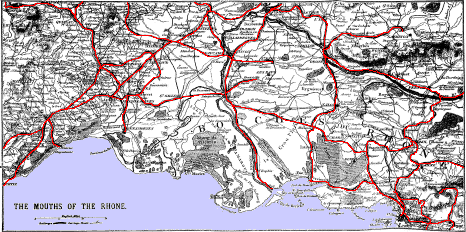
For continuation eastwards see map, page 123.
St. Remy. Les Baux.
9½ m. east from Tarascon by rail is St. Remy, pop. 6800. Inn: Hôtel du Cheval Blanc, a comfortable house, where carriages can be hired for Les Baux, 6 m. S.W., 10 frs. Also for Arles by Les Baux and Mont-Majour, 19 m. distant, 24 frs. A mile from the Hôtel Cheval Blanc, by the high road, stood the ancient Glanum, one of the commercial stations of the Phœnician traders from Marseilles, before it fell into the possession of the Romans, who have left here two remarkable monuments, of which the more perfect consists of an open square tower standing on a massive pedestal, and surmounted by a peristyle of ten columns surrounding two statues representing the parents of Sextus and Marius, of the family of the Julii, by whom it was erected. It is 50 ft. high; the faces of the statues look to the north. The sculpture on the north side of the pedestal represents a cavalry fight; the south, “sacrificing;” the west, a combat between infantry; and the east, which is the most dilapidated, “Victory crowning a wounded soldier.” Alongside stands a triumphal arch, of which the most perfect portions are the coffered panellings of the soffit.
6 m. S.W. from St. Remy is Les Baux, the ancient Castrum de Baucis, pop. 100. Inn: Monte Carlo. The castle town of Les Baux, commenced in 485, occupies a naked mountain of yellow sandstone, worn away by nature into bastions and buttresses, and coigns of vantage, sculptured by ancient art into palaces and chapels, battlements and dungeons. Now art and nature are confounded in one ruin. Blocks of masonry lie cheek-by-jowl with masses of the rough-hewn 68 rock; fallen cavern vaults are heaped round fragments of fan-shaped spandrel and clustered column shaft; the doors and windows of old pleasure rooms are hung with ivy and wild fig tapestry; while winding staircases start midway upon the cliff and lead to vacancy. High overhead, suspended in mid-air, hang chambers—lady’s bower or poet’s singing room—now inaccessible, the haunt of hawks and swallows. Within this rocky honeycomb— “cette ville en monolithe,” as it has been aptly called, for it is literally scooped out of one mountain block—live a few poor people, foddering their wretched goats at carved piscina and stately sideboards, erecting their mud-beplastered hovels in the halls of feudal princes. From Les Baux road to Fontvieille, 7 m.; whence rail to Mont-Majour and Arles (see map, page 66).
Arles.
opp. 68
[East]
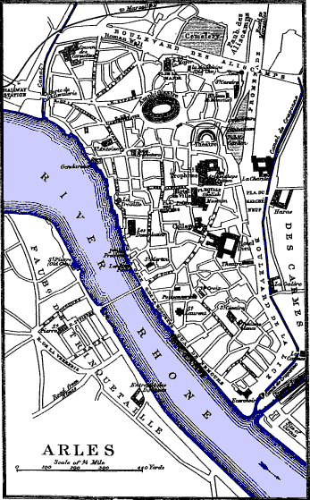
[West]
Scale of ¼ Mile
PARIS
MARSEILLES
483
54
ARLES, pop. 26,000.
Hotels: Nord; Forum; near each other in the Place du Forum. Arles
is situated on the Rhône, near the Camargue, in a marshy place, as its
original name, Arelas, from the Celtic words, “Ar lach,” damp place,
indicates. It is said to have been founded 900 years before Marseilles,
700 years before Rome, and 1500 before the birth of Christ. The ramparts
and walls rising from the public gardens and the Boulevard des Aliscamps
are chiefly the work of the Emperor Constantine, who came to Arles with
his family and mother, Saint Helena. He built by the side of the Rhône a
superb palace, called afterwards “de la Trouille,” because opposite a
ferry-boat, which was pulled or dragged from one side of the river to
the other. Of this palace little more remains than the attached tower La
Trouille, constructed of alternate layers of brick and stone. On the 7th
August 312 his wife Faustina presented him with a son,
Constantine II., who succeeded his father in May 357. He commenced
the Forum, but was shortly after killed in battle defending himself
against his brother Constance, who usurped the throne and finished the
Forum. All that remains of this formerly splendid edifice are the two
Corinthian columns, with part of the pediment encrusted into the wall of
the Hôtel du Nord. It occupied the site of the Place du Forum, called
also the Place des Hommes, because labourers and men-servants used to be
hired in this “Place.”
In the Place de la République is the Hôtel de Ville, built in 1675 on the site of the Roman baths constructed by the Emperor Augustus. The spacious vaults under the Hôtel du Nord formed probably a part of these baths, although in later times they seem to have been used as an ossuary.
Almost adjoining the Hôtel de Ville is the church of St. Anne, 69 now the Archæological Museum, with a collection of inscriptions, sarcophagi, urns, statues, columns, friezes, altars, and tombstones, those of the Pagans having the letters D.M., Diis manibus. Also some of the long lead pipes, with the name of the plumber, “C. Canthius Porthinus fac.,” which helped to bring water from the fountain at the foot of the hill on which Baux stands. At the inner end, right hand, is a torse of Mithras of white Pharos marble, 3 ft. 2 inches high, found in 1598 on the site of the Roman Circus. A serpent is coiled round the body, and between the coils are the signs of the Zodiac. In the opposite corner is an altar in Carrara marble to the good goddess “Bonae-Deae,” found under the church La Major. On the front face is a garland of oak leaves and acorns, and 7 inches distant from each other two human ears. Near it is a good head of Augustus, and a mutilated one of Diana. About the centre of the room is a recumbent figure of Silenus, with a wine skin under his arm.
In the centre of the “Place” is the monolith obelisk, 49 ft. high, hewn by the Romans from the quarries of Esterel. It stood originally in the Circus at the S.W. corner of the town; but of it no vestiges remain.
Arles: St. Trophime.
Opposite St. Anne is the cathedral of St. Trophime, consecrated on the 17th May 626, and rebuilt in the 9th cent. The portal, erected in 1221, consists of a semicircular arch resting on six columns, behind which are statues of apostles and saints separated by pilasters. In the tympanum is Christ, the judge of the world, with the symbols of the Evangelists. In the interior the door on the S. side of the choir leads out to the cloister, of which the N. side belongs to the 9th, the south to the 16th, the east to the 13th, and the west to the 14th cent.
Passing from the cloister into the street, and turning to the left, we arrive at the Theatre, commenced during the dominion of the Greeks, and finished before the Christian era. In the centre of this grand ruin, originally 335 ft. in its greatest diameter, stand two Corinthian columns 30 ft. high, and the base of other two, which formed part of the proscenium. Opposite them is the semicircular space for the spectators, with still many of the stone seats. The Venus of Arles, one of the most valuable statues in the Louvre, was found here. The theatre is open to the public, but the keeper endeavours to attach himself to strangers.
Arles: Amphitheatre.
A short way N.E. is the far grander and more imposing Amphitheatre or Les Arènes, said to have been commenced by the father of Tiberius Nero, B.C. 46. It is elliptic, 459 ft. long and 132 wide, surrounded by a double wall 60 ft. high, each with two stages of 70 arches, and in each stage 60 arches. From around the arena rise 43 tiers of stone seats, capable of containing 23,438 spectators. The stone steps leading up to them were 1½ ft. high and 2 ft. 3 inches long. There were besides above 150 rooms for the gladiators and men connected with the theatre, and 100 dens for wild beasts. The three towers were added by the Saracens in the 8th cent. Bull-fights are given in the building, when a multitude of spectators, as in the time of the Romans, fill the galleries. A splendid view of the amphitheatre, the city, and of the commencement of the delta of the Rhône, is had from the western tower. The entrance into the amphitheatre is by the north gate. The doorkeeper lives in a house a little to the left of the gate. This grand ruin should, if possible, be visited by moonlight; yet during the day the beautiful masonry is more easily examined. It is the great sight in Arles, and it is better to omit all the others than to do this one hurriedly.
The Camargue or Delta of the Rhône, commencing at the outskirts of Arles, is a triangular plain of 180,000 acres extending to the Mediterranean, bounded on the west by the Petit Rhône, and on the east by the Grand Rhône. It contains small villages and large farms, with extensive vineyards and grazing ground for cattle, sheep, and horses. It is best visited by the steamboat sailing between Arles and Port St. Louis on the mouth of the great Rhône. (See p. 72, and map, p. 66.)
Arles: Elysei Campi. Trophimus.
S.E. above the Promenade is the church of St. Cesaire, 9th cent., on the site of a temple of Jupiter. From this to go to Alyscamps, walk down the Boulevard Alyscamps to the canal Craponne, where turn to the left. The first ruin passed is an old entrance into what was the domain of the monastery of St. Cesaire. The Avenue of Alyscamps is lined on each side by 33 large stone coffins with lids, and 120 smaller coffins without lids. This, the Elysei Campi, an ancient Roman cemetery, is now divested of all its valuables and statues, of which a few are in the museum. As J. C.Himself is said to have appeared during the consecration of the cemetery, it was believed that at the resurrection it would be especially favoured by Him; hence the efforts made by so many to bury their friends here. It is said that up to the 12th cent. coffins with their dead, and money for the funeral expenses, floated down the Rhône, of their own accord, to be buried in this privileged spot. At the end of the avenue is the church of St. Honorat, on the site of the chapel founded by Trophimus the Ephesian, one of St. Paul’s converts, who was sent to Arles to preach the gospel and to put an end to human sacrifices. Among the first things he is 71 said to have done was to consecrate the Alyscamps and transform it thus from a heathen into a Christian burial-place, and add to it a little chapel. An old Arles writer alleges on his own authority that Trophimus dedicated this chapel to Mary, who was then alive. After labouring 36 years in this diocese he died on the 29th of November 94, and was buried in the little chapel he himself had built. Among the successors of Trophimus were Ambrose in 160, who remained here 20 years; Augustine in 220, who died 10 years afterwards; Jerome in 230, who also died 10 years afterwards; Marcien in 252, the originator of the Novatien sect; and St. Cyprien in 253. Saint Virgil, one of the successors, founded in 601 the church of St. Honorat beside the chapel of Trophimus. The present church dates only from the 12th to the 14th cent. The best and oldest part, excepting the foundations, is the apsidal termination, which is semicircular, with 4 pilasters and a small window in the centre to give light to the officiating priest. Over it rises a neat octagonal belfry in two arcaded stages. Under the chancel is a small crypt. The keeper calls a small chapel at the left hand corner of the chancel, the chapel of Trophimus.
Arles: Picture Gallery.
The Picture Gallery, or the Musée Reattu, is at No. 11 R. Grand Prieure, near the Tour Trouille. The house and pictures were bequeathed to the town by a cousin of the painter Reattu, b. at Arles 1760, d. 1833. On picture 119 are portraits of himself, wife, and two cousins. Next the picture gallery is the school of design.
Branch line from Arles to Fontvieille, 7 m. E., passing Mont-Majour 4 m. E. Fontvieille is 7 m. S.W. from Les Baux by a good road. Junction at Arles with line to Aigues-Mortes, 36 m. S.W., and to Montpellier, 58 m. S.W.; Cette is 17 m. farther. (See map, p. 66.)
Mont-Majour.
4 m. eastwards by rail from Arles are the ruins of the castle and abbey of Mont-Majour, all in a good state of preservation, excepting the domestic buildings, constructed in 1786. The concierge lives in a house near the station. Fee, 1 fr. He generally shows first the church, 11th cent., and the spacious crypt below, 9th cent. Adjoining the church are the cloisters, 11th cent., of the same kind as those of St. Trophime, but more interesting and more perfect, and containing the tombs of some of the counts of Anjou. Next is the beautiful square dungeon tower, nearly as perfect as when erected in 1374. It is 262 ft. high, is ascended by 137 steps, and commands a wide prospect. From this, a stair leads down the face of the hill to the chapel and cell of St. Trophimus, principally hewn in the soft limestone cliff. Standing apart at the base of the hill is St. Croix, dedicated in 1019, 72 consisting of four semicircular sides, crowned with semidomes projecting from a square tower crowned with a kind of pyramid spire. At Fontvieille (Hôtel du Commerce) are important quarries of soft calcareous sandstone.
Arles to Port Saint Louis, at the mouth of the Great Rhône, 25 m. S. by steamer on the Great Rhône. Time, 5 hrs. Fare, 2 frs. Railway unfinished (see map, p. 66). The steamboat passes by an important part of the Camargue with large vineyards, rendered very fertile by irrigation, the water being forced up from the river by steam engines. Cattle, sheep, and horses are reared on the tufts of coarse grass which cover the more arid portions. The population is so sparse that not a village is seen during the whole journey. (See also p. 70.)
Port Saint Louis.
Port Saint Louis (Hôtel Saint Louis), 6½ m. W. from Port Bouc, consists of a straggling village between the Rhône and the basin of the canal constructed to enable vessels to avoid the bar of the Rhône. This canal is 2½ m. long, 196 ft. wide, and 22 ft. deep. To understand the geography of this desolate flat region of land and water, exposed to every wind, it is necessary to ascend the “tour Saint Louis,” whence the plain, intersected by the Rhône and numerous canals, appears literally like a map. The only villages seen in the vast expanse are Fos, on a hill, and near it the Port Bouc.
Great expense has been incurred to make Port St. Louis a convenient place for shipping, and attract to it some of the commerce from Marseilles.
23 m. S.W. from Arles, and separated from Port St. Louis by the great Etang Valcarès, is the port called Les Saintes-Maries-de-la-Mer, or simply Les Saintes. The parish church, 12th cent., surrounded by fortifications, contains the tombs of the Maries and some good sculpture.
For Arles to Port Bouc, 29 m. S., see p. 76. The steamer sails from the S.W. corner of Arles (see map, page 66).
St. Gilles. Lunel.
11¼ m. W. by rail from Arles is St. Gilles, pop. 7000. Hôtel du Cheval-Blanc. A poor and ancient town on the canal of Aigues-Mortes, near the Petit Rhône. The abbey church, founded in 1116, is considered a good specimen of Byzantine architecture. The façade consists of a bald wall with a plain tower on each side. Between these towers are three semicircular recessed portals, below an entablature resting on two single and two double columns. The capitals are Corinthian, but the pedestals (considerably effaced) consist of lions and grotesque animals in uncouth positions. Behind them, on the piers of the arches of the portals, stand in bold relief statues of apostles and saints, separated from each other by pilasters. The interior, consisting of a nave and two aisles, is 290 ft. long, 88 wide, and 62 high. In the N. aisle a stair of 33 steps leads down to the lower church, with semicircular arches on short massive piers. From the centre 7 more steps descend to the tomb of St. Gilles. All the characteristics of this church are equally well represented in St. Trophime of Arles.
16¾ m. farther W., or 28 m. from Arles by rail, is Lunel, pop. 73 7300. Inns: Palais; Nord; Tapis-verd; none good. A town of narrow streets, with a park and promenade by the side of the canal. The church is constructed after the pattern of those of Carcassonne and Perpignan. On the surrounding plain an inferior wine is grown. The first-class vineyards, producing the generous white wines from 17° to 18°, are all on the neighbouring gravelly eminences.
Aigues-Mortes.
8 m. S. by rail from Lunel is the more interesting town of AIGUES-MORTES, “stagnant waters,” pop. 4300, 4 m. from the Mediterranean, and 4 ft. above it, and connected with it by a navigable canal. Inn: Saint Louis. It is of great historical interest, and is surrounded by the most perfect old embrasured wall in France, built in the form of a parallelogram, 596 yds. long by 149 yds. broad. It is 36 ft. high, and is flanked by 15 towers. On the western side rises the famous round tower of Constance, 96 ft. high and 72 in diameter, containing two vaulted superimposed circular chambers, used by Louis XIV. and Louis XV. as prisons for their Protestant subjects of both sexes, who here suffered such cruelties that the Dutch and Swiss Governments were roused to interfere in their behalf, and even Frederic the Great is said to have interceded for them, but in vain. From the platform at the top of this tower is the highly interesting view of the flat country at the mouth of the Rhône, whence the traveller may judge for himself whether the sea has, or has not, receded from the town since the time of Saint Louis—we think not. Both the tower of Constance and the walls are the work of Saint Louis, who had a predilection for Aigues-Mortes, as he considered it the most suitable place in his kingdom from which to embark for Palestine. On 25th August 1248, after having heard mass in the church Notre-Dame-des-Sablons (fronting his statue), he and his Queen Marguerite sailed from Aigues-Mortes on their first expedition to Palestine. On the 3d of July 1270 he again sailed from the same place; and on that same year, on the anniversary day of his first expedition, the 25th of August, he perished among the ruins of Carthage. 4 m. S. from Aigues-Mortes by omnibus, or steamer by the canal, is the bathing station of Port-Grau-du-Roi. Inns: Pommier; Dubois (see map, page 66).
49 m. N. from Lunel by rail is Vigan. (See page 105.)
96½ m. W. from Marseilles, 43 m. W. from Arles, 31 m. S.W. from Nîmes, and 15 m. S.W. from Lunel, is
Montpellier.
MONTPELLIER, on the sides and summit of an eminence 145 ft. above the sea and 7 miles from it. Pop. 56,000. Hotels: H. Nevet, the best and most expensive, at the commencement of the Esplanade. On the same side, only a little farther up, is a block of handsome buildings containing the Public Library, closed on Sundays and Thursdays, and the Picture Gallery or Musée Fabre, open on Sundays and Mondays. Adjoining is the Lycée.
In the Place de la Comédie, near the Esplanade, is the H. du Midi, the next best hotel. In the Grande Rue, the H. Cheval Blanc, frequented by commercial men. Opposite the station is the H. de la Gare. In the fine broad street, the Rue Maguelone, leading from the 74 station to the Place de la Comédie, is the H. Maguelone, second class. Their omnibuses await passengers.
Temple Protestant near station, in the Rue Maguelone. Telegraph Office in the Boulevard de la Comédie. Post in the Boulevard Jeu-de-Paume. From the Esplanade omnibus runs to Castelnau. From near the Place de la Comédie coach to Mauguio. From the Boulevard de Blanquerie, below the prison, coach to Claret and St. Hippolyte. (See map, p. 66.)
Montpellier: Botanic Gardens.
The most modern part of the town is the Rue Maguelone, leading from the station to the Esplanade, a delightful promenade bounded by the citadel. At the N.W. angle of the Esplanade a stair leads down to a line of boulevards, passing up by the “Hôpital Général” to the Botanic Gardens, the earliest institution of this kind in France, founded in the reign of Henri IV., and for some years under the direction of the famous botanist De Candolle. It contains an area of 9 acres, divided into three parts: at the N. end is a nursery; at the S., in a hollow, surrounded by trees, the botanical part; and between these two divisions the arboretum. Opposite the Botanic Gardens is the once famous École de médecine, said to have been founded by Arab physicians under the patronage of the Counts of Montpellier. It now occupies the old bishops’ palace, built in the 14th cent., with additions in the 17th. At the entrance are bronze statues of Barthez, 1734-1806, and La Peyronie, 1678-1747. Within the entrance are busts of the most celebrated professors and divines connected with the college and the church of Montpellier. In the same building are also valuable anatomical and pathological collections, and a library with 55,000 vols. Adjoining is the Cathedral of St. Pierre, 14th and 15th cents., but the choir is recent, though in the same style. White marble statue of Mary and child by Canova.
Overlooking the Botanic Gardens is the beautiful promenade, the Place du Peyrou, on an eminence at the western side of the town. In cold weather invalids and nurses with their children frequent the lower terrace of this “Place,” the promenade Basse du Midi. At the western end of the Peyrou is the Château d’Eau, a hexagonal Corinthian building, which receives and distributes through the town the water brought from the fontaine de St. Clement, 5½ m. from Montpellier. The aqueduct, which conveys the water across the valley from the opposite hill, consists of two tiers of arches 70 ft. high and 2896 ft. long. The gate at the end of the promenade was erected to commemorate the victories of Louis XIV. Adjoining is the Palais de Justice, with statues of Cambacérès and Cardinal Fleury. Eastwards, by crooked streets, are the Mairie and the markets.
Montpellier: Musée Fabre.
A short way north from the Hôtel Nevet, by the Rues Ste. Foi and also on the Esplanade, is a handsome modern edifice, comprising the Musée Fabre, the Bibliothèque publique with 65,000 vols., and the “Collection de la Société archéologique.” The Musée Fabre, open on Sundays and Mondays and feast days, contains, among many works of inferior merit, some good pictures by great artists, such as Berghem, 75 Fra Bartolommeo, P. C. Champaigne, Cuyp, L. David, G. Dow, Van Dyck, Ghirlandajo, Girodet, Granet, Greuze, Metsu, Palma, P.Veronese, Porbus, P. Potter, Poussin, Samuel Reynolds, Salvator Rosa, Rubens, Ruysdael, Andrea del Sarto, D. Teniers, Terburg, Titian, and Zarg. The library contains some curious MSS. connected with, the Stuarts, which belonged to Prince Charles Edward.
Montpellier produces a lovely coloured wine with good bouquet, called St. Georges d’Orgues. The manufacture of verdigris, the preparation of preserved fruits, dye works, chemical works, and distilleries, are the principal industries.
From the railway station, opposite the Hôtel de Nevet, a line extends through the lagoon Pérols, covering a surface of 3000 acres, and yielding annually 2000 tons of salt, to the port of Palavas, 5 m. south (pop. 1000), with a beautiful beach. At the Palavas terminus is the Casino hotel, and on the Canal the Hôtel des Bains and the Restaurant Parisien. A cabine (bathing-house), including costume and linen, costs 1 fr. Leave the train at the Plage station. 3 m. from Montpellier, in the retired valley of the Mosson, is the mineral water establishment of Foncaude. Water saline, unctuous, and sedative. Good for indigestion and nervous disorders. 12½ m. north from Montpellier is the Pic du Loup, rising from the village St. Mathieu (pop. 500) to the height of 680 ft., commanding an extensive view, and having on the top a chapel visited by pilgrims.
From Montpellier a line extends 43½ m. W. to Faugères on the line from Beziers to Capdenac by Rodez. (See map, page 27.)
Frontignan. Cette.
109½ m. from Marseilles and 4½ from Cette is Frontignan, pop. 3000. Possessing 570 acres of vineyards producing rich amber-coloured, luscious, and spirituous wines, made principally from the clairette and picardan grapes. The neighbouring marshes yield annually about 50,000 tons of salt.
114 m. from Marseilles is Cette, pop. 29,000. At this point the Chemins de Fer de Paris à Lyon system joins the Chemins de Fer du Midi, and consequently carriages are often changed here. For Cette to Toulouse and Bordeaux, see Table “Bordeaux à Cette” in the “Indicateur des Chemins de Fer du Midi.” Cette is 271 m. east from Pau, 266 from Bordeaux, and 84 from Perpignan. Omnibuses and coaches await passengers. Hotels: Barrillon; Grand Galion; Bains; Souche. Cette makes a pleasant halting-place. The best walk is to the top of Mt. Setius, 590 ft. Ascend by the Rue d’Esplanade, and when at the highest part of the Public Gardens take the road to the right. The view is magnificent. In front is the Mediterranean, and behind Lake Thau with its villages. At the base of the mountain is Cette, and beyond Frontignan. The Port of Cette is protected by a breakwater 548 yds. long, which encloses a harbour of 210 acres, furnished with two jetties; the western, constructed by Vauban, is 656 yds. long, and the eastern 548 yds. This busy port, besides having an extensive carrying trade, has a large wine manufactory, where above 100,000 pipes of imitations of all the well-known wines are made annually, by mixing different wines with each other.
76From the first bridge over the canal (not including the railway bridge) a small steamer starts three times daily for Balaruc and Meze, on Lake Thau. Meze, like Cette, is entirely devoted to the wine trade. Balaruc has a bathing establishment, supplied by intensely saline springs, resembling strong sea-water, temperature 125° Fahr. A quart contains 106 grains of chloride of sodium, 13½ of the chloride of magnesia, and a fraction of the chloride of copper, 15 grains of the sulphate, and 13½ of the bicarbonate of lime. Pension, 8 to 9 fr., and the bath treatment 4½ fr. additional. The Canal du Midi enters Lake Thau at Les Onglous, 11 m. W. from Cette. (See map, page 27.)
Miramas. Port Bouc.
PARIS
MARSEILLES
503
34
MIRAMAS, pop. 900, south
from the station at the head of the Étang Chamas. At the station there
are a small inn and a large plantation of almond trees, which, when in
flower, exhale a delightful perfume. Passengers to Avignon by Cavaillon
and L’Isle change carriages here (p. 65). Also for Port Bouc, 16¼ m.
south.
Miramas to Port Bouc by rail through a flat plain (see map, p. 66). The two most important towns passed on the way are: Istres, 6¼ m. from Miramas station and 10 N. from Port Bouc, pop. 4000, founded in the 8th cent. on Lake Olivier, and possessing still part of its ancient ramparts. The principal industry is the manufacture of salt and of the carbonate of soda. 13¼ m. from Miramas is Fos (Fossae Marianae), pop. 1100, on a hill crowned with the ruins of a castle, 14th cent. At the foot of the hill, by the side of the Arles canal, are large tanks for the manufacture of salt. From Fos, other 3 miles south by rail, or 16¼ miles altogether from the Miramas railway station, or 29 miles S. from Arles by the canal, is Port Bouc, pop. 1000. Inns: near the stations of the railway and the canal steamer, the Hôtel du Commerce; near the jetty, the Hôtel du Nord. Port Bouc, on the Étang Caroute, near the entrance to the great lake, the Étang de Berre, is an important fishing-station with a large and well-protected harbour. At the end of the jetty is a fixed light, seen within a radius of 10 m. At the other side of the entrance is Fort Bouc with a massive square tower in the centre and another lighthouse. About 7 miles west from Port Bouc by the coast road is the Port of St. Louis, page 72. (For Port Bouc to Martigues and Marseilles, see p. 118.)
Port Bouc to Arles, 29 m. S. by the canal steamboat; time, 5 hrs; fare, 3 frs. The canal is 62 ft. wide and 8 deep. The embankments are very solid, and along a great part of them extends the railway between Arles and Saint Louis. The only town the canal passes is Fos, about ½ m. E. The Miramas railway passes it on the other side. Passengers drop into the steamer from the farmhouses. The steamer moors at the S.W. corner of Arles. (See p. 72, and map p. 66.)
Saint Chamas. Rognac.
PARIS
MARSEILLES
506½
30½
SAINT CHAMAS (Sanctus
Amantius), pop. 3000, about ½ m.
77
from the station. It is situated on the N. end of the Étang de Berre,
and on both sides of a short narrow ridge of soft sandstone pierced with
excavations. The Government have one of their most important powder
manufactories in this place. Hardly ½ m. E. from the Hôtel de Ville
is the Flavian Bridge, built by the Romans, across the stream Touloubre,
with at each end a kind of triumphal arch of 12 ft. span and about 22
ft. high. At each of the four corners is a grooved Corinthian pilaster
surmounted by a frieze and a projecting dentilled cornice. On the top at
each end stands a lion; the two on the east arch are apparently ready to
spring eastward, and the other two westward. The bridge is in a state of
perfect repair, but the sculpture and inscription on the two arches over
the entrances are slightly effaced. The road to it is by the Hôtel de
Ville and the parish church with a rudely sculptured “Pieta” over the
portal. The bridge is to the E. of St. Chamas, and is well seen from the
railway, especially when crossing the viaduct of 49 interlaced arches,
which carry the rail over the little valley of the Touloubre. 8½ m.
E. from St. Chamas is Berre station. The town, pop. 2100, is directly
south, on Lake
Berre, a sheet of water 14 m. long and 38 in
circumference.
PARIS
MARSEILLES
519½
17½
ROGNAC, pop. 900. Junction
with rail to Aix, 16½ m. E., passing under the Roquefavour aqueduct, 7½ m.
E. The canal, which brings 200 cubic ft. of water per second from
the Durance to Marseilles and the neighbouring plain, commences opposite
Pertuis, directly north from
Marseilles. It is 94 m. long, of which more than 15 are under
ground; it has a fall of 614 ft., traverses, by 45 tunnels, 3 chains of
limestone hills, and crosses numerous valleys by aqueducts, of which the
largest crosses the ravine of the river Arc at Roquefavour. This
aqueduct is 270 ft. high on three tiers of arches, is 1312 ft. long, 44½
ft. wide at the base, and 14 ft. wide at the water-way. It consists of
51,000 cubic yards of masonry, and cost £151,394, while the cost of the
whole canal from the Durance to the sea, near Cape Croisette,
a little to the east of Marseilles, has been £2,090,000.
A branch from the principal channel throws 198,000 gallons per
minute into the city, while five other ramifications fertilise by
irrigation the country around it. The canal water is purified in the
basins of Réaltort. The large reservoir for Marseilles is behind the
Palais de
Longchamp. (See p. 114, and for the course of the canal, maps
pp. 66 and 123.)
To visit the aqueduct, take the road to the left from the station, pass under the railway bridge, and then ascend partly by a steep path and partly by steps to the house of the concierge.
78Aix. Hôtel de Ville.
16½ m. E. from Rognac, or 33 m. N. from Marseilles by Rognac, but only 18 m. N. by Gardanne, is Aix-en-Provence, pop. 29,000. Hotels: Negre-Coste, the best, in the Grand Cours; at the east end of the Cours, Mule-Noire, and near it at the Palais de Justice, the Hôtel du Palais; at the station end of the Cours, the Louvre and the France; at the baths, the Hôtel des Bains; opposite the Hôtel de Ville, the Hôtel Aigle d’Or. Best cafés in the Cours René. Post and telegraph offices in the street behind the Cours, or behind the division opposite the Hôtel Negre-Coste. Aix, formerly the capital of Provence, was founded 120 B.C. by the Consul Sextius Calvinus around the thermal springs, which he himself had discovered. The temperature of the water is 95° F., and the ingredients, iron and iodine, the carbonates, sulphates, and chlorides of soda and magnesia, together with an organic bituminous matter strongly impregnated with glairine. The establishment is situated at the extremity of the Cours Sextius. Pension, 8½ frs. Each bath 1 fr. At the high end of the Cours René is a statue, by David, of René of Anjou, “le bon Roi,” king of Naples, Sicily, and Jerusalem; died in 1480 at the age of 72, and buried at Angers, where he was born. He was endowed with every virtue, was a poet, painter, and musician, and was skilled in medicine and astronomy. During his reign in Aix the people were prosperous, and art and science flourished. From the right of the statue streets lead up to the principal square with a monument to Lodovico XV., the Palais de Justice with statues of the jurists Portales and Siméon, and the church of the Madeleine, built for the perpetual adoration of the host. A little higher up are the Hôtel de Ville, built in 1640; the Halle-aux-Grains, reconstructed in 1760 and adorned with bold and spirited sculpture. Next the Hôtel de Ville is the great clock tower, bearing the date 1512. In the centre of the court of the Hôtel de Ville is a statue of Mirabeau, and on the staircase a white marble statue of Marshal Villars, by Coustou. In the Hôtel de Ville is also the public library with 100,000 vols. Among the MSS. is the prayer book of King René, with illustrations said to have been done by himself. No. 569 is a small 4to volume, with copies of letters written by Queen Mary Stuart. The first 57 pages relate to her early history. At page 645 commences a defence of her conduct, written by a warm partisan of the queen. The street, ascending through the gateway of the clock tower, leads to the university buildings, the palace of the archbishop, and the Aix: Cathedral. Cathedral of Saint Sauveur, built in the 11th cent., partly on the foundations of a temple to Apollo. The tower, 195 ft. high, was built in the 15th cent., and the chancel in 1285. The façade was commenced in 1476, and the beautiful sculpture on the great entrance door executed in 1503. It is generally covered by a plain outer door. In the interior to the right is the Baptistery, an octagonal chapel with six antique marble and two granite Corinthian columns about 30 ft. high, each shaft being of one stone. The ornamental sculpture on the panels and in the spandrels is by Puget. On the same side are two triptychs, one by Crayer, “Mary worshipped by Saints,” and the 79 other by some artist of the Jean Van Eyck school, representing in the centre Moses and the burning bush, with Mary up in a clump of trees. On one wing is King René on his knees, attended by the Magdalene, St. Maurice, and St. Anthony; and on the other wing is the king’s second wife, Jeanne de Laval, attended by her patron saints. On the outside of the shutters are the angel Gabriel and Mary.
On each side of the chancel is an organ case, but only the one on the left hand has pipes. Under each is a large tapestry dating from 1511, representing scenes in the life of J. C. Both pieces are said to have belonged to St. Paul’s of London. Among the relics the church possesses are: the skull of St. Ursula, the arm of one of her 11,000 virgins presented by Nicolas V. in 1458, a rib of St. Sebastian presented by King René, and three thorns from the crown of our Lord.
Aix: Picture Gallery.
The last street at the S.E. end of the Cours René leads directly to the church of St. Jean and the Picture Gallery adjoining; free on Sundays and Thursdays from 12 to 4. St. Jean was built in the 13th cent. by the Princes of the house of Aragon for the order of the Knights of St. John of Jerusalem. The spire is 220 ft. high. To the left of the altar is the tomb of Raymond and wife, Comte de Provence.
On the ground-floor of the picture gallery are sarcophagi, inscriptions, and statues ancient and modern. Upstairs is a large collection of paintings, water-colours, and drawings; but few have either labels or numbers.
The “Biscotins” seen in the shop windows are round sweet biscuits about the size and shape of walnuts. The better kind, “Gallissons,” are flat and diamond shaped. The olive oil made in the farms around Aix is reputed to have a very fine fruity flavour. The reason alleged is—the trees being small the berries are gathered, or rather plucked, by the hand before they are quite ripe. Where the trees are large, as in the more favoured parts of the Riviera, the fruit must be allowed to ripen to allow of its being shaken down by long poles. The trees are pruned in circles, leaving an empty space in the centre.
Rians. Meyrargues.
(For the following see maps, pages 66 and 123.) Coach daily from the “Cours” to Rians, 20 in. N.E., passing Vauvenargues, 8 m. E. The castle, 14th cent., and village of Vauvenargues are situated near the cascades of the Val Infernets, and within 3 hrs. of the culminating point, 3175 ft. above the sea, of the Sainte Victoire mountains. Rians, pop. 2900, Inn: Hôtel Barème, is situated amidst olive trees and vineyards. Coach daily from Rians to Meyrargues, on the railway 34½ m. N. from Marseilles, and 155½ S. from Grenoble, passing Jouques, 7½ m. N., with the ruins of its castle, both situated in the gorge of the Riaou, in which rise the copious springs of the Bouillidous, which irrigate the fields and set in motion numerous mills. 2 m. beyond Jouques is Peyrolles (pop. 1200. Inn: Hôtel du Grand Logis), on the Durance, and at the foot of the Grand Sambiu, 2560 ft. above the sea. In the chapel of the old fortress is a painting on wood attributed to King René.
Meyrargues (pop. 2000. Inn: Reynaud) is situated with its castle 80 in the valley of the Volubière. Coach at station awaits passengers from Rians.
Diligence also from the Cours to Pélissanne, 18 m. W., passing by La Barben, with one of the best castles in Provence, 14 m. W. Coach from Pelissanne to Salon, 4 m. W. (For Salon, see p. 66.) 5 m. N.E. from Pelissanne is Lambesc.
Diligences leave the Cours also for St. Cannat and Lambesc; but the best way is to go on to the next station N. from Aix, La Calade, where a coach awaits passengers for St. Cannat, 5 m. N.W., and Lambesc, 3½ m. farther. In the village of St. Cannat is the chapel of N. D. de la Vie, visited by pilgrims. Lambesc, 14 m. from Aix, pop. 3000, is a pretty little town, agreeably situated at the foot of the hill Berthoire. The manufactures of olive oil and silk form the principal industries.
7 m. S. from Aix, and 11 m. N. from Marseilles, is Gardanne, pop. 3500, with extensive coalfields. Junction here with branch to Carnoules, 52 m. S.E., on the line between Marseilles and Cannes. (See under Carnoules, p. 142.)
From Rognac the train passes by the Étang de Berre, and halts at Vitrolles, on the east side of the rail, 2½ m. S. from Rognac. 3¼ m. S. from Vitrolles and 11¼ m. N. from Marseilles is Pas-des-Lanciers, junction with line to Martigues (see p. 66), 12¾ m. E.
Four and a half miles south from the Pas-des-Lanciers, and 7 miles north from Marseilles, is the station of L’Estaque, a village on the sea, full of large brick and tile works, extending a good way up the valley of the Séon. This is the birthplace of the painter, sculptor, architect, and engineer Pierre Puget, born 31st October 1622, died at Marseilles 2d December 1694, in the 51st year of the reign of Louis XIV., to the glory of which his genius had contributed. He was the youngest of three brothers, the children of Simon Puget, a poor stonemason, who died while Pierre was still a boy.
Marseilles (see p. 111). Cabs and the omnibuses from all the principal hotels await passengers in the large open court just outside the arrival side of the railway station. At the east end of the departure side of the railway station is the Station Hotel, very comfortable, but the prices are rather more than moderate.
81172 m. south by the west bank of the Rhône, passing Oullins, Givors-canal, Ampuis, Peyraud, Tournon, La Voulte, Le Pouzin, Le Teil, Laudun, and Rémoulins. Thence to Marseilles other 79 miles.
Maps, pages 26, 46, 56 and 66.
NÎMES
172
LYONS: start from the Perrache station. The train after passing
Oullins and Irigny arrives at Vernaison, 9 m. from Lyons, pop.
1400, with manufactories of pocket-handkerchiefs, and a large castle
converted into a school. 4 m. farther is Givors-canal, where the Nîmes line
separates from the line to St. Etienne, 29 m. W. The canal of
Givors, commenced in 1761, is 13 m. long, and is used chiefly by
the coal barges. Near Tartaras it traverses a tunnel 118 yards long. The
train now proceeds to Loire, 16½ m. S. from Lyons, pop. 1400,
famous for chestnuts, and then 8 m. farther down the Rhône to
Ampuis (opposite Vaugris), pop.
2000, H. du Nord, producing apricots, melons, and chestnuts, and
possessing 94 acres of the Côte-Rotie vineyards, of which 46 acres
belong to the first class, yielding one of the best wines of France,
remarkable for its fine colour, flavour, and violet perfume. It is a
little heady, and gains much by a voyage. 3 m. farther south by
rail is Condrieu, with 87 acres of vineyards, producing luscious white
wines, becoming amber-coloured. 31 m. S. from Lyons is Chavanay,
pop. 1800, with old castle and suspension bridge. Inns:
H. Commerce; Soleil; omnibus at station. 4 m. from Chavanay by
coach is Pelussin, pop. 4000. Romanesque church with crypt and ruins of
Virieux castle. 7 m. farther is Serrieres, pop. 1700. Railway
viaduct of 66 arches.
LYONS
NÎMES
39¼
132¾
PEYRAUD, pop. 400.
Junction with line to Annonay, 9 m. W., and to Grenoble, 60 m.
E. by Rives and Voreppe. Annonay, pop. 16,500, built in the hollow and on
the sides of the surrounding mountains, at the confluence of the Déôme
and the Cance. Inn: H. Midi, in the principal square,
occupying the centre of the low town.
The ruins of the old castle are on a rock by the side of the Cance. The
Hôtel de Ville is on a hill beyond. The spot from which the brothers
Joseph and Etienne Montgolfier made the first air-balloon ascent, 3d
June 1783, is indicated by a pyramid. They were also the founders of one
of the celebrated paper mills of Annonay; whose paper was long esteemed
the best in France. 27 m. N.W. from Annonay by coach, traversing a
beautiful mountain-road, is St. Etienne. From Annonay the road ascends
9¾ m. to Bourg-Argental, pop. 3600. Inn: France. Bourg, as
the inhabitants call it, is a silk-rearing and manufacturing town, on
the Déôme, in a hollow surrounded by mountains
82
covered with vines and mulberry trees. 2 m. farther the road passes the
castle of Argental, and shortly after reaches its culminating point on a
vast tableland to the south of Mont Pilat. The country around is covered
with a great forest of firs. The obelisks along the road are to guide
travellers when snow is on the ground. The road now crosses the plateau
called La République, bounded by the Bois de Merlon, and then descends
to St. Etienne by Planfoy, 5 m. from St. Etienne, and La Rivière
2 m. 17½ m. by rail from Annonay is Tournon.
Tournon.
56½ m. S. from Lyons, 115½ N. from Nîmes, and opposite Tain, with which it is connected by two suspension bridges, is Tournon, pop. 6100, on the Rhône. Hôtel de l’Assurance between the bridges, and opposite the landing-place from the Lyons and Avignon steamers. Fishers can easily reach from Tournon many of the tributaries of the Rhône. Next the hotel is the castle of the Counts of Tournon, now the Palais de Justice. Beyond it is the church of St. Julien, built in 1300. The interior is on lofty early pointed arches. Wine, silk, and olives supply the principal industries. Coach daily to Le Cheilard, 5½ hrs., ascending all the way (see p. 83). Coaches also to St. Félicien, 3 hrs. W.; to St. Agrève, 9¼ hrs. W.; and to St. Martin de Valamas, 7½ hrs. W. 3 m. N. from Tournon is Vion, with a beautiful church. (See map, p. 46.)
LYONS
NÎMES
65½
106½
SAINT PERAY, pop. 3000.
Inn: H. du Nord. Omnibus at station. Also omnibus for
Valence. An uninteresting village about ten minutes from the station,
situated on the sunny side of the valley of the Merdary. The vineyards
here produce an excellent sparkling wine, the taste of which is natural,
not given to it by the addition of prepared cordials, as is the case
with the other champagnes.
69 m. from Lyons is Soyons, pop. 900, under an eminence crowned by the Tour Maudite, an old fortress. 77 yards above the village is a cave, La Grotte de Néron, in which prehistoric remains have been found. 2½ m. farther is Charmes, pop. 1000, and other 3 m. Beauchastel, pop. 1000, 2 m. from St. Laurent du Pape. (Map, p. 46.)
La Voulte. St. Sauveur. Le Cheilard.
LYONS
NÎMES
77
95
LA VOULTE, pop. 5000.
Inn: H. du Musée. Temple Protestant. Railway and steamboat
stations. A dirty and badly-paved town on the right bank and on the
steep sides of a hill rising from the Rhône. On the summit are the
Grande Place, the parish church, and the castle, commenced by Bernard
Anduze in 1305, and finished by Gilbert III. de Ventadour in 1582,
who also built the chapel. The castle is now inhabited by workmen, and
the chapel is a magazine. By the side of the castle is a large
iron-foundry, employing 170 men.
83
The ores come from rich mines a little way up the valley, near the
decayed mineral water establishment of Celles-les-Bains. Inn:
H. Chalvet, 2 m. down the Rhône, but behind the hills. The
water contains iron with a little free carbonic acid gas. Coach daily
from La Voulte to Le Cheilard (or Cheylard), 30 m. N.W., 6 hrs.,
and to St. Pierreville, 24 m. W., 5 hrs. The road to the two places
separates at St. Sauveur, 8¾ m. E. from St. Pierreville, and
15 m. S.E. from Le Cheilard. (See map,
p. 46.) St.
Sauveur, pop. 2000. Inns: Poste; Voyageur. Is prettily
situated on the Erieux, which descends from Le Cheilard, between high
rocky banks cultivated to the summit by a series of laboriously walled
terraces, on which are small fields of wheat intermingled with walnut,
chestnut, apple, pear, and cherry trees, and in the more favoured spots
vines and peach and mulberry trees. The road skirts the cliffs, and is
itself terraced the greater part of the way. A few miles up the
river, opposite the village Chalançon, Inn: H. Astier, is a
very good specimen of an old donkey-backed bridge, Le Cheilard, 2130 ft. above
the sea, pop. 3500. Inn: H. Courtial. This, the great
diligence centre of Ardèche, is a dingy, dirty town, with narrow
streets, beautifully situated on the Evreux, in a hollow between lofty
terraced mountains. Coaches daily to Valence, La Voulte, and Tournon.
Every other day to Annonay by the same road as the Tournon coach as far
as a little beyond Mastre, 1280 ft. above the sea, whence it diverges
northward. Coach daily also to Le Puy, 36 m. N.W., by St.
Martin-de-Valamas, pop. 2200, at the confluence of the Eysse and the
Erieux and Fay-le-Froid, 22 m. E. from Le Puy, near the river
Lignon, pop. 900. (Map, page 46.)
Saint Sauveur to Le Beage by St. Pierreville, Marcols, Mezillac, and Lachamp-Raphaél (Gerbier-de-Jones). The road from St. Sauveur to St. Pierreville ascends the Gluyère or Glaire in much the same way as the road to Le Cheilard ascends the Erieux. St. Pierreville, 1788 ft. above the sea, pop. 2100. Inns: Rochier; Commerce. Temple Protestant. On an eminence rising from the Gluyère. At St. Pierreville passengers for Marcols enter a smaller vehicle. The whole way the road follows the course of the Gluyère, between great granite cliffs. 2 m. before reaching Marcols is the clean little village of Olbon, on both sides of the Gluyère, with a nice inn, the H. des Voyageurs, and a Temple Protestant. A little farther by the side of the stream is a spring of mineral water containing iron and carbonic acid gas.
Marcols. Lachamp-Raphaél.
6 m. W. from St. Pierreville is Marcols, 3380 ft. above the sea, a small village with three silk mills, on an eminence rising from the Gluyère. Inn: H. de l’Union. This is the terminus of the stagecoaches, for the other places westwards vehicles must be hired. As conveyances cannot always be had at Marcols, the most prudent plan for those going on to Le Beage, and not disposed to walk the distance, is to spend the night at St. Pierreville, and to start early next morning in a vehicle hired from the “Bureau des Diligences,” 15 frs. per day, 84 with one horse. Gig from Marcols to Lachamp-Raphaél, 11 frs. Le Beage is 28¼ m. N.W. from St. Pierreville, passing through Marcols 6 m., Mezillac 11¾ m., and Lachamp-Raphaél 16 m.
The road from Marcols to Mezillac, 2¼ hrs., coils up the sides of steep terraced mountains. Near the summit of one, in a very exposed situation, is the small hamlet of Mezillac, consisting of low massive stone cottages, and a modern church built in the style of the former one, 10th cent. Refreshments can be had at the Bureau de Tabac. A little farther down is the inn. At Mezillac the road from Le Cheilard to Aubenas intersects the road from Mezillac to Le Beage. Thus far the prevailing rock has been granite, but about ½ m. from Mezillac the road skirts the face of a mountain one mass of basaltic prisms.
4½ m. W. from Mezillac is the hamlet of Lachamp-Raphaél, 4364 ft. above the sea. Most of the better cottages take in travellers, where generally abundance of good milk, butter, eggs, coffee, and potatoes may be had, with a bed. There are no trees in this region. About 1 hour from Lachamp by a bad road is the cascade du Ray-Pic, which plunges down into a dark abyss. Any lad can show the way.
2 m. beyond Lachamp-Raphaél, just under the culminating point of the road (4600 ft. above the sea), is a farmhouse called La Maison Bourlatié, and near it a flattened peak. Just beyond this Maison Bourlatié a road diverges to the right (eastward) from the main road, which take for the Gerbier-de-Joncs, the top of which is distinctly seen after having proceeded a short way, and is hardly an hour’s easy walking from Bourlatié. It is a most interesting and easy excursion. The Gerbier-de-Joncs (Gerbiarum jugum) is an isolated pointed cone, composed of masses and fragments of trachyte, rising 325 ft. above the tableland, 5125 ft. above the sea, and commanding a wide and extensive view. At the base, south side, from under a block of trachyte and some loose stones, wells gently forth the infant Loire, running first into a little circular basin for the use of the adjoining farmhouse, whence it runs down the bank in a tiny streamlet from 3 to 4 inches wide, but soon becomes sufficiently powerful to turn the wheel of a mill. The continuation of the road from the Gerbier goes to Les Etables, 22 m. S.E. from Le Puy, at the foot of Mount Mezenc, 5755 ft. above the sea. Now go on to Le Beage, or return for the night to Lachamp, 22½ m. N. from Aubenas by Antraigues.
Lachamp-Raphaél to Le Beage, 12½ m. W. Char-à-banc, 10 frs. The road, which has been ascending all the way from Valence and La Voulte, continues to ascend till about 1¾ m. beyond Lachamp, where it attains its culminating point, about 4600 ft. A little farther the road to the Gerbier diverges to the right. Less than 2 m. from this the road crosses the Loire, and soon after is joined by the road from the village of St. Eulalie on the way to Montpezat.
Le Beage. Mezenc.
Le Beage, pop. 850. Inns: La Maison Brun; H. des Voyageurs. A dirty cattle and swine breeding village, 4122 ft. above the sea, beautifully 85 situated on an eminence rising from the Veyradère, which rushes past in a dark ravine below. Pasture being the principal crop cultivated, the mountain sides have no terraces. Four great fairs are held annually here. The winter is long and severe, but from June to October the weather is pleasant. The staple occupation of the females is lace-making on a pillow with bobbins. The design is on paper fixed to a short cylinder, and is further indicated by pins with coloured glass heads. The linen thread is given them by the merchants, who pay them at the rate of from 2d. to 4½d. the yard, according to the breadth of the lace, from 2 to 4 inches. A most industrious lace-maker can earn 1 fr. per day. 3¼ m. S.W. from Le Beage in an extinct crater is the lake Issarlès, occupying a surface of 222 acres.
From Le Beage the trachytic mountain of Mezenc (pronounce Mezing) is visited. But the best plan is to go on to Les Etables, 4410 ft. above the sea, 7½ m. N. from Le Beage by the wheel road, but only half that distance by the direct path. Inns: Testud; Chalamel, where pass the night. The hamlet is situated at the foot of Mont Mezenc, 5755 ft. above the sea, or 1345 ft. above Les Etables, and 866 ft. above the hamlet of Mezenc. The ascent takes about an hour.
Le Beage is 12 m. S.E. from Monastier, passing through Chabanis. On the opposite side of the river are seen Freycenet, 3905 ft. above the sea, and Crouziols, 4½ m. S. from Monastier. Char-à-banc between Le Beage and Monastier, 10 frs.
Le Monastier.
LE MONASTIER, pop. 4000, on an eminence rising from the Colanse. Inns: Commerce; Voyageurs. Coach daily to Le Puy, 11 m. N.W. 10¼ m. S. is Salettes, and 22 m. S. St. Paul de Tartas, 3393 ft. above the sea, at the foot of Mont Tartas, 4424 ft. St. Paul is near Pradelles, connected by diligence with Le Puy and Langogne. The parish church, St. Théofrède, of Le Monastier, was, along with the abbey, founded in 680, and rebuilt in 961 by Ufald, 10th abbot of Monastier, and repaired and enlarged in 1493 by Estaing, the 45th abbot. The edifice exhibits throughout the Auvergne style of architecture. The portal consists of a semicircular arch with 6 mouldings resting on four short columns with sculptured capitals. Above the tympanum and also over the large rectangular window are rude mosaics. Under the eaves of the roof runs a string moulding of grotesque sculpture, representing men and animals. In the interior the capitals of the columns and the corbels on the vaulting shafts are similarly adorned. In the apse is the chapel of Saint Théofrède; with sculptured stone roof. He is the “protecteur du Monastier”— “le bon pasteur, qui s’expose a la mort pour son troupeau”— the “conservateur des fruits de la terre.” (See his litany.)
11¼ m. N. from Le Monastier by diligence along a beautiful mountain-road is Le Puy. The bureau at Le Puy of both the diligence and the courier is at No. 1 Rue du Pont-St. Barthélémy near the large “Place” and the hotels. About half-way from Le Monastier is the 86 village of Arsac, Inn: H. des Voyageurs, and about 1 m. more, on an eminence, the village and the still imposing remains of the fortress of Bouzols, 10th cent. Shortly after having crossed the Loire at the town of Brives, the diligence enters Le Puy, 2 m. from Brives.
Le Puy. The Cathedral.
36 m. S.W. by rail from St. Etienne, 89½ m. from Lyons, and 33 m. S.E. from St. George d’Aurac junction, on the line between Clermont and Nîmes (see maps, pp. 26 and 46), is
pop. 20,000, from 2000 to 2250 ft. above the sea, between the rivers Borne and Dolezon, affluents of the Loire, 2 m. from the town. Hotels: Ambassadeurs; Europe; Nord. To visit Le Puy, the best plan is to begin with the Cathedral. From the high side of the Place de Breuil, at the N.W. corner, ascend by the streets St. Gilles, Chenebouterie, and Raphaél, to the Place des Tables, with a stone pinnacle fountain in the centre. From this ascend by the R. des Tables to the flight of 40 steps, leading up to the tetrastyle portico in front of the church. Forty-one more steps lead up through this portico to the portal of the west façade of the church, built up in the 18th cent., and having against it an altar to Mary. The oblong flat stone at the base of the table of the altar belonged to a dolmen which stood on this hill from the earliest times, and is called the “Pierre aux fièvres,” from its once supposed power of curing of fever those who lay upon it.
From this altar a flight of 27 steps ascends to the left, to the cloisters, while the flight to the right of 32 steps ascends to one of the two south side entrances into the church. The other south side entrance, called the Porte du Fort, 12th cent., presents an extraordinary composition of the florid Byzantine style. On one side of it is the square belfry in 5 stages, commenced in the 11th cent., on the other is the bishop’s palace, and in front a small terrace. At the north side of the church is the Porte St. Jean, 12th cent., preceded by an arch of 28 ft. span. The cloisters are in the form of an oblong square, with 9 arches on the long sides, and five on the short, supported on square piers with attached colonnettes. The south side is the earliest, beginning of the 10th cent., and the western the most recent. The church, built in 550, received a succession of alterations up to 1427, when it was injured by an earthquake. In 1846 it was repaired and restored. The interior consists of eight square compartments, each, excepting the 7th, covered with a dome resting on four massive piers. Above the 7th rises an octagonal lantern tower. Under it is the high altar, with a replica of the miracle-working image,* brought from Cairo in 1251, and presented to the church of Le Puy by Saint Louis in 1254, but destroyed in the Revolution of 1793, when, according to the marble tablet on the pier of this compartment, 20 priests of the diocese were 87 executed at the same time by the same party. On the south wall a large picture represents a numerous concourse of church and civic dignitaries carrying in procession the original image to make it stay the plague, which raged in Le Puy in 1660. The picture opposite represents the Consuls of Le Puy, attired in red, thanking the image for its protection. In the sacristy is the Théodulfe Bible, 9th cent. Near the north portal is the baptistery of St. Jean, built in the 4th cent, on the foundations of a Roman edifice.
* The original image was of cedar, with the face, both of it and of the child, painted black. It was 2 ft. 3 in. high, and weighed 25 lbs. The form was rudely carved, stiff and Egyptian like, and the members of both were swathed in two plies of linen.
Le Puy: Notre Dame de France.
From Saint Jean commences the ascent of the Rocher Corneille, a mass of volcanic breccia, which forms the summit of Mount Podium. On the top is the image of Notre Dame de France, 433 ft. above the Hôtel de Ville, and 2478 ft. above the sea. It was unveiled on the 27th September 1860, was made from 213 cannons taken at Sebastopol, is 52½ ft. high, and weighs 2165 cwt. The foot is 6 ft. long, the hands 5 ft., and the hair 22 ft. The circumference of the head of the child, J. C., is 14 ft. In the interior of the image a spiral stair of 90 steps leads up to the shoulders, whence an iron ladder of 16 steps extends to the crown of her head. From little openings in this colossal figure are most enchanting views. From the orifice in her right side is seen (2½ m. N.W.) the village of Polignac, likewise on a hill 2645 ft. above the sea, clustering round its old castle. Immediately below is the Aiguilhe, and to the left, 1¼ m. S.E., Ours Mons.
On a projecting part of the rock is, in a kneeling posture, looking up to Notre Dame de France, the figure of Bishop Morlhon, b. 1799, d. 1861, one of the principal promoters of the statue. Bonnassieux is the sculptor of both of them.
Aiguilhe.
Behind the Rocher Corneille rises the isolated volcanic rock called the Aiguilhe, 265 ft. high, 518 ft. in circumference at the base, 45 at the top, and ascended by 266 steps. Fee, 5 sous. On the summit is the chapel of St. Michael, commenced in 962 by Bishop Godescalk, and consecrated in 984. The present building dates principally from the end of the 11th and the beginning of the 12th cent.; restored and repaired in 1850. Originally the interior of it as well as of the cathedral was covered with mural paintings. The views are superb.
Near the foot of the rock, and adjoining the Mairie of Aiguilhe, is an octagonal baptistery, 12th cent., called the Temple of Diana. Near the post office, in the Boulevard St. Louis, is the lower part of a tower which belonged to the town gate Pannessac. The church, at a little distance below, is St. Laurent, 14th cent. In the chapel to the left of the high altar is the grave and mausoleum of the chivalrous Duguesclin, who died on the 17th July 1380, while besieging the fortress of Châteauneuf-le-Randon, between Langogne and Mende.
Le Puy: Musée. Picture Gallery.
In a large new building in the public garden off the Place de Breuil is the Musée, open on Sundays and feast days from 2 to 5. Everything is distinctly labelled. On the ground-floor in the hall to the left are architectural relics from Roman buildings in and about Le Puy. The best fragments belonged to the temple which stood on the site now occupied by the baptistery of Saint Jean. In the hall to the 88 right is a miscellaneous collection of Egyptian, Celtic, and Roman antiquities, mixed up with a few articles belonging to the Middle Ages.
Upstairs is the Picture Gallery. In the centre room are portraits of the most celebrated natives of Le Puy, and a very good copy of part of the “Danse Macabre,” dance of death, in the church of Chaise-Dieu. Among the portraits are Charles Crozatier, born 1795, died at Paris 1853, the munificent contributor to the museum of this his native town. In the right-hand hall the best paintings, chiefly belonging to the Flemish school, are in the low row, such as Begyer, d. 1664; Caravaggio; Coypel, d. 1707; Franck, d. 1616; Heem, d. 1694; Lippi, d. 1469; Maes, d. 1693; Mieris, 1747; Mierveld, 1641; Poussin, 1695; Rigaud, 1743; Terburg, 1681; Tyr, 1868; Weenix, 1719. In the adjoining small room is a complete collection of the minerals belonging to the Haute-Loire. In the left room among other pictures are: Annunciation, Tintoretto, 1594; Mdlle. de Valois, Mignard, 1695; Mary Stuart, F. Clouet, 1572; Henriette-Marie de France, wife of Charles I. of England, Van der Werf, 1722; Landscape, Hobbema, 1669; Concert, Teniers (vieux); Portrait of Girl, J. B. Santerre, 1717. In the next room are specimens of the lace, blond and guipure, worked by the females inhabiting the towns and villages among the mountains of Ardèche and the Haute-Loire, of which articles Le Puy is the great emporium. The specimens and sample books are in cases. In the centre case are specimens from Alençon, Binche, Brussels, Cevennes mountains, Malines, Russia, Valenciennes, and Venice; the Corsage with lace trimming of the gown Marie Louise wore on the day she was married to Napoleon I.; also some of her ribbons.
Ours Mons.
1¼ m. S.E. from Le Puy is Ours Mons, 2463 ft. above the sea, and 180 ft. above the plain. The prospect from the top is considered by Mr. Scrope most remarkable; “exhibiting in one view a vast theatre of volcanic formation, in great variety of aspect, containing igneous products of various natures, belonging to different epochs.”
(Map, p. 46.)
Le Puy, 2045 ft., to Langogne, 2940 ft. above the sea, 26 m. S. by coach, along an admirably-constructed road, over a high, cold, treeless tableland, whose culminating point, 3900 ft., is about a mile south from the hamlet of La Sauvetat, 6 m. N. from Pradelles. 8 m. from Le Puy is Montagnac, on the Cagne, 3123 ft. From this hamlet a road diverges 8 m. S.W. to Cayres, 3727 ft. above the sea, pop. 1450. Inn: Du-Lac-du-Bouchet. A lace and cheese-making village, about 1½ m. by a good road from the extinct crater of Le Bouchet, 231 ft. higher, than Cayres, now a lake of 222 acres and 92 ft. deep. It is very similar to Lake Issarlès, near Beage (which see p. 85). After Montagnac the coach arrives at Costaros, 3510 ft., 12 m. S., where the horses are changed. Then Sauvetat, 16 m. from Le Puy, pop. 300, and afterwards Pradelles, 3771 ft., pop. 2000, with two small inns, 21 m. from Le Puy and 5 m. from Langogne. The coach stops at Langogne railway station, where the omnibus of the Cheval Blanc 89 awaits passengers. Pradelles is 24½ m. S. from Le Monastier by St. Paul-de-Tartas, and 2½ m. from Les Sallettes (see map, p. 46).
Pradelles to Mayres, 18 m. S.E., char-à-banc, 20 to 25 frs., by a good but a high and exposed road, passing Peyrebelle (p. 95), La Narce, 8¾ m., pop. 900, the Col Chavade, 4170 ft. above the sea, near the source of the Ardèche, whence the road descends rapidly, passing above the hamlet of Astet. This is not a good entrance into Ardèche.
From Le Puy a coach starts daily from near the post office for St. Bonnet, Usson, and Craponne, pop. 4000, directly N. from Le Puy, and 12½ m. E. from Chaise-Dieu by stage-coach.
(Map, p. 46.)
For geological excursions the railway between Le Puy to Langeac by St. Georges d’Aurac is very useful. The culminating point of the line, 3658 ft, is in the tunnel between Darsac and Fix-St. Geneys. This railway crosses at right angles the Velay mountains, full of extinct volcanoes, extending from Chaise-Dieu to Pradelles.
Espaly. Borne. Darsac.
Le Puy to Langeac, 36½ m. W. by rail. The first part of the line traverses a most picturesque country among great basaltic cliffs. 1 m. from Le Puy the train passes the village of Espaly, and by the face of basaltic columns rising from the Borne and its little affluent the Riou-Pézeliou, in whose bed zircons and blue sapphires have been found. On the opposite side of the Borne is the great mass of basalt called the Croix de la Paille, with a display of prisms in three tiers, called les orgues d’Espaly. The village, pop. 2300, is built at the foot of a rock of volcanic breccia crowned by the scanty ruins of a castle built in 1260 by Guillaume de la Roue, bishop of Puy.
8¾ m. from Puy is Borne, 2535 ft. above the sea, pop. 390. A ramble in the ravine of Borne forms a pleasant and easy excursion from Le Puy. 5½ m. E. from this station, or 3¼ m. W. from Le Puy, is Polignac, passed by the train. The village, pop. 2500, with church of 11th cent., is at the foot of a rock of basaltic breccia crowned by the imposing ruins of a fortress dating from the 11th cent. A stair of 132 steps (ascent dangerous) leads up to the terrace of the Keep, 14th cent., commanding an extensive view.
13 m. W. from Le Puy is Darsac, 2914 ft. above the sea. A small hamlet, with a restaurant, the station for Chaise-Dieu, 13¾ m. N., fare 2½ frs., and for Arlanc, 24¼ m. N., or 10½ m. beyond Chaise-Dieu.
La Chaise-Dieu.
The coach first passes through Allègre, pop. 1700, a dirty little village, 5 m. N, on the side of Mont de Bar, 3583 ft. above the sea, with the ruins of a castle built in the 14th cent. Mont de Bar and Mont du Bouchet are the best specimens of extinct volcanoes in the Velay chain. From this the diligence, after having skirted for 8 m. the high cold region of the Velay mountains, arrives at La Chaise-Dieu, 3576 ft. above the sea, pop. 2000. Inns: Lion d’Or; Centre; Nord. A dirty, decaying village, in which its imposing church participates. Robert, a scion of the ducal house of Aurillac, and canon of St. Julien in Brioude, obtained permission from the canons of N. D. 90 du Pay to build a small house and oratory in the wildest and most inaccessible part of the forests on their domains, where he and his companions might lead a more austere life than in their monastery at Brioude. This house, built in 1043, by degrees attained the goodly proportions of a convent, which the peasants called La Chaise-Dieu, or Casa-Dei. Clement VI., formerly Roger de Beaufort, abbot of Chaise-Dieu, born in the village, commenced, shortly after his elevation to the papal throne, to build at his own expense a church on the site formerly occupied by the oratory of St. Robert. The work was continued and finished by his nephew, Gregory XI., in 1420, by whom are the façade with the two short massive square towers, 128 ft. high, and the horse-shoe staircase of 41 steps. The tower, 30 ft. square and 110 high, attached to the S. point of the apse, was built by the abbot de Chanac to protect the church and convent, which he surrounded with a wall. The gateway, part of the wall, and part of the old convent, are just under the tower. Adjoining the remains of the abbey buildings are the cloisters, a parallelogram, 140 ft. by 77, of which only two sides remain. The long side has nine low, wide, massive, mullioned and traceried unglazed windows, and the short side four.
The interior of the church is 301 ft. long, surrounded by 22 tall plain slender octagonal piers, from which springs the groining, which spreads itself over the stone-vaulted roof. The nave is 44 ft. wide, and the aisle on each side 15, all the three roofs being of the same height. The church is lighted by long narrow pointed windows, one between each two columns, excepting at the apsidal termination, where a triangular projection affords space for three windows. The tracery has little depth, and is of the simplest design. The choir, 131 ft. long, is separated from the nave by an ugly rood-loft. It contains 144 carved cedar-wood stalls, and above them on both sides 17 pieces of Arras tapestry, 16th cent., from designs by Taddeo Gaddi. In the centre is the mausoleum of Clement VI. His white marble effigy, with the hands folded and the papal Triregnum on the head, reclines on an altar table of black marble.
On the N. side of the screen of the choir, just behind the pulpit, is the “Danse Macabre,” or dance of death, a favourite subject with artiste from the 12th to the 14th cent. The ironic grin and jocund gait of the skeleton death contrast vividly with the dismayed and demure expression of the great and mighty kings, priests, and warriors, young and old, gay and sedate, he marshals off, in the midst of their projects and plans, to the dark silent grave. Under it is the sadly mutilated mausoleum of Queen Edith of England, wife of the unfortunate Harold. Near it is the more perfect mausoleum of the last abbot of La Chaise-Dieu.
Arlanc. Ambert. Fix-St. Geneys.
10½ m. N. by coach from La Chaise-Dieu, 24¼ m. N. from Darsac, and 11¼ m. S. from Ambert-du-Puy, by a beautiful road, is Arlanc, pop. 4500, Inn: H. des Princes, between the rivers Dore and Dolore, 91 consisting of the Bourg with the parish church and the Ville, composed mostly of old houses. A great deal of lace and blond is made here.
11¼ m. N. is the manufacturing town of Ambert, pop. 8000, 43 m. N. by rail from Vichy; whence the ascent is made, 3 hrs., of the culminating point of the Forez mountains, the Pierre-sur-Haute, 3882 ft. above the sea. 15 m. from Ambert, and 11¾ m. S. from Thiers, is Olliergues, pop. 2000, on a hill rising from the Dore. It contains an old bridge, some 13th cent. houses, and the ruins of a castle which belonged to the family of the Tour d’Auvergne. 13 m. farther N., or 8¾ m. S. from Thiers, is Courpière, pop. 4000, on the Dore, with some old houses and the ruins of the castle of Courte-Serre. 61 m. N. from Darsac, or 36¾ m. N. from Ambert, is Thiers, south from Vichy. For Vichy see p. 358; Thiers, p. 367.
The next station west from Darsac by rail (see map, p. 46) is Fix-St. Geneys, 18 m. from Le Puy, 3274 ft. above the sea, pop. 900. Inn: H. des Voyageurs, situated on a tableland above the valley of the Sioule, covered on one side with firs. 2½ m. farther is the station for the hamlet La Chaud, 2950 ft. above the sea, on the Sioule. 7½ m. farther is Rougeac, with a castle 1923 ft. above the sea.
St. Georges-d’Aurac. Monistrol.
The most westerly station on the line is St. Georges d’Aurac, 1872 ft. above the sea, 86½ m. W. from St. Etienne, and 32 from Le Puy. 58½ m. N. by rail is Clermont, and 131 m. S. by rail is Nîmes (see map, p. 26). Near the station is the inn Lombardin. The village, pop. 500, is 2 m. S.E. Other 2 m. E. is the château Chavagnac, the birthplace of General Lafayette. 5½ m. W. is Voute-Chilhac, pop. 800, most picturesquely situated on a narrow peninsula formed by the Allier, opposite the mouth of the Avesne. The church was built in the 15th cent. by Jean de Bourbon, bishop of Le Puy. Passengers going north change carriages at the station of St. Georges d’Aurac. 4½ m. S.W. from St. Georges, 90½ W. from St. Etienne, and 36½ from Le Puy, is Langeac, 1690 ft., 63 m. S. from Clermont, and 127 m. N. from Nîmes. All the trains halt here. Inns: H. Lombardin; Pascon. Their omnibuses await passengers. Langeac, on the Allier, is a pleasant town near the station, situated in a vast plain. The parish church dates from the 15th cent. To the N.E. of the town, in the valley of Morange, is a coal-basin of 1450 acres. (Map, page 46.)
15 m. S. from Langeac is Monistrol-d’Allier, 2000 ft. above the sea, pop. 1200. The station is on the E. side, and the town on the W. side of the river. Coach by a picturesque road to Le Puy, 17 m. N.E. by St. Privat, 2930 ft., pop. 1600, on the stream Rouchoux, which runs in a deep gully between high cliffs. A little way beyond the hamlet of Chiers the road attains its culminating point, 3739 ft. above the sea. 10 m. from Monistrol is Bains, 3235 ft., pop. 1300, with a very old church. 1¼ m. farther the road passes the picturesque rock of Cordes, 3012 ft., and then descends to Le Puy by La Roche, 2895 ft., and Mont Bonzon. Coach from Monistrol to Saugues, 6½ m. W., 3116 ft., pop. 4000, on the side of a hill, rising from the beautiful valley of the Margeride. In the neighbourhood is a monument 92 called the tomb of the “English general.” It consists of a square vaulted roof of small stones resting on four round columns 13 ft. high and 6⅜ ft. apart. It has no inscription, and bears a resemblance to the mortuary chapel at Valence (see p. 44).
Le Pouzin. Privas.
LYONS
NÎMES
81
91
LE POUZIN, pop. 3000,
Inn: H. Lion d’Or, on the Ouvèze, which here enters the
Rhône. The town has foundries and the remains of its old castle.
Junction with line to Privas, 13¼ m. W. Privas, pop. 8000. Inns: Croix d’Or; Louvre.
On an eminence 1060 ft. above the sea, at the foot of Mt. Toulon, 838
ft. higher, and at the confluence of the Chazalon, the Mezayon, and the
Ouvèze. The town, looking well from a distance, consists chiefly of
narrow, crooked, steep streets, and dingy houses. From the promenade
called the Esplanade, planted with plane trees, is an excellent view of
the picturesque valley of the Ouvèze, and of the volcanic chain of the
Coiron, especially of Mount Combier. 1¼ m. from Privas, on the
plain of the Lai, is a house called the Logis du Roi, in which Louis
XIII. established his headquarters in 1629, when, with Cardinal
Richelieu, he besieged the Protestant inhabitants in the town, commanded
by the brave Montbrun.
From Privas, coach daily, 11 m. N. to Ollières, on the Eyrieux. Inn: H. du Pont, comfortable. This coach meets at Ollières the coaches to La Voulte and Valence on the Rhône, and the coaches to Le Cheilard and to St. Pierreville. The latter is the coach to take for the Source of the Loire and Mont Mezenc (see pp. 84, 85). Coach also to Aubenas, 18 m. S.E. (See next page, and map p. 46.)
Rochemaure.
LYONS
NÎMES
98
74
ROCHEMAURE, pop.
1300, Auberge Gabarre. Suspension bridge across the Rhône. The modern
part of the village is built along the high road, but the old on the
steep slopes of the basalt rocks crowned by the ruins of the castle.
There are many ways up to the top; the best and most frequented
commences just opposite the “auberge,” traverses the centre of the
curious old stony village, passes on the right the chapel with the arms
of Ventadour and Soubise on the portal, then ascends by the battlemented
wall to some miserable habitations, among what was the seigneurial
manor, of which large portions still remain. Next to it, on a
needle-like peak of nearly horizontal columns of basalt, rises the Keep,
like a spear piercing the sky. A narrow path leading so far up will
be found round the N.W. corner. The views are superb, of the valley of
the Rhône on one side, and on the other of the Coiron mountains. These
ruins, which from below look slim and airy, are the remains of a massive
edifice constructed principally of basaltic prisms in the 12th cent. by
the family of Adhémar de Montheil, and reduced to its present condition
by order of Louis XIII.
A road up the gap on the N. side of the hill leads in a little more than an hour to Mount Chenavari, 1668 ft., distinctly seen from the top of the gap. On the summit is a tableland bordered with massive basaltic columns. At Rochemaure the olive trees begin to appear.
Le Teil.
LYONS
NÎMES
95¾
76¼
LE TEIL, pop. 3200, with
some small inns. Omnibus awaits passengers for Montelimart, 3¼ m. E., on the other side of the
Rhône (p. 48). Branch line to Alais, 62¼ m. S.W., on the line
between Nîmes and Clermont-Ferrand. From Vogué, on this branch,
17½ m. S.W. from Le Teil, and 44¾ m. N.E. from Alais,
a smaller branch extends 12 m. N. to Nieigles-Prades. The
Nieigles-Prades line forms a convenient entrance into Ardèche (see maps,
pages 26, 46, and 56).
Aubenas. Vals.
5 m. W. from Teil, on the branch line to Alais, is Aubignas (Alba Augusta), pop. 530, once an important Roman station. 6¼ m. N. from Vogué is Aubenas, pop. 8000, Inn: H. Durand, on a hill covered with vines, olives, and mulberry trees, rising 328 ft. above the Ardèche, and commanding an extensive view of the valley of the river. On the highest part of the town are the church and the fine old castle, now containing the college, the hospital, and some other public institutions. Aubenas is the centre of an important trade in raw silk, butter, and cheese. At Vesseaux, a village to the north of Aubenas, excellent chestnuts are grown. (Maps, pages 56 and 46.)
3¼ m. N. from Aubenas is La Begude, the station for Vals. Omnibus awaits passengers. VALS, pop. 4000, on the Volane, famous for its Mineral Waters. Hotels: Des Bains, on an eminence above the bathing establishment and the gardens. In the same neighbourhood are the Hotels Parc; Juliette; Délicieuse; Lyon; Orient. All the important springs are also in this part. In the town are the Hotels Europe; Durand; Nord; Poste. The Pension in the Hôtel des Bains is from 12 to 15 frs., in the others from 9 to 10 frs. Season from 1st May to October. Vals is prettily situated on the Volane, in a hollow among hills covered with vineyards and studded with mulberry and chestnut trees. The springs, gardens, baths, and best hotels are all at the eastern extremity. Near the H. du Parc is the intermittent fountain, and from it, across the bridge, are the springs Vivaraises, under a grotto; and, adjoining them, the spring Juliette, while a little beyond is La Délicieuse. The springs Madeleine, St. Jean, Précieuse, and the others, belonging to the Société Générale, are all farther up the river, nearer the town, at the second bridge. None of them are so pungent nor so agreeable to the palate as the Juliette and the Délicieuse. The properties of all are much the same. They give tone to the stomach, assist the action of the liver and kidneys, and remove paralysis of the bladder. They are all cold, easily digested, and may be drunk at any time. They contain bicarbonate of soda, lime, and magnesia, 94 lithia, iodine, iron, and some of them traces of the arseniate of soda, and owe their pungency to the free carbonic acid gas.
Antraigues.
5 m. N. from Vals, or 9 m. from Aubenas and 16 m. from Privas, is Antraigues, pop. 2000, situated on the side of three basaltic rocks, at whose base flow three impetuous mountain torrents—the Bise, Mas, and Volane. From the heights behind the town there is a magnificent view. In the neighbourhood is the extinct crater, the Coupe d’Aizac, covered with a beautiful reddish lava. Inns: Brousse; Glaise.
Neyrac-les-Bains. Thueyts.
Coach daily from Aubenas to Mayres, 18 m. W. It passes through Pont-de-la-Baume, 945 ft., and by the eminence on which is Neyrac-les-Bains, the Nereisaqua of the Romans. Inns: H. des Bains; H. Fournier. 2½ m. from Pont-de-la-Baume, 7 from Vals, and 9½ from Aubenas. It is situated within the crater of Saint Léger, containing 8 acidulous, alkaline, and chalybeate springs, temp. 81° Fahr. From several fissures issues carbonic acid gas; from one place, the Trou de la Poule, in sufficient quantity to kill birds and dogs in 2 or 3 minutes. In the neighbourhood is the volcano of Soulhiol. 2 m. W., on the left bank of the Ardèche, at its confluence with the Médéric, is Thueyts, pop. 2600, Inn: H. Burine, situated on a bed of lava from the crater of Mont Gravenne, 2785 feet above the sea. Through this bed the Ardèche has, in cutting a passage for itself, laid bare a grand display of basaltic columns from 150 to 200 ft. high, extending nearly 2 m. down the valley. To the W. of the Bourg are a bridge with two stages of arches across the Médéric, called the Pont du Diable, and the falls of the Gueule d’Enfer, 330 ft., which, unless in rainy weather, have very little water. From this part commences the Pavé-des-Géants, a tableland composed of granite and basalt of an average height of 214 ft. from the base, lined with vertical prisms. To the right, at the extremity of this wall of rock, is the Echelle du Roi, a staircase of 192 steps of broken prisms, within a natural shaft or chimney, leading up to the top of the tableland, where there is a good view. The best is from Mont Gravenne. The ascent requires about 1 hour.
The diligence now ascends the Ardèche to Mayres. About half-way, near the hamlet of La Mothe, are the cliffs called the Rocher d’Abraham, 4358 ft. above the sea, of which the Bauzon is the continuation.
Mayres.
5½ m. from Thueyts is Mayres, pop. 2900. Inns: France; Commerce. 1810 ft. above the sea, at the foot of the Croix de Bauzon, 5055 ft. above the sea, and on the Ardèche, which here flows in a narrow gorge between granite cliffs. The stage-coaches go no farther than Mayres. For Langogne, 22 m. N.W., it is necessary to hire a vehicle. From Mayres the road commences to ascend the Col, passing above the hamlet of Astet at the foot of the Rocher d’Astet, 4925 ft. above the sea.
7 m. from Mayres is the summit of the pass or Col de la Chavade, 4170 ft. above the sea, near the source of the Ardèche. 2½ m. farther is La Narce, pop. 900. A little beyond, or 26 m. from Aubenas and 95 14 from Langogne, is the roadside inn of Peyrebelle, 4195 ft. above the sea, where for 25 years the landlord and his wife robbed and murdered the travellers that came to their house. Nearly 4 m. N. from Peyrebelle is Coucouron, pop. 1400.
The road now attains the height of 4266 ft., where, on account of the snow and wind, it becomes very dangerous in winter.
35 m. from Aubenas and 5 from Langogne is Pradelles, 3771 ft., 16 m. from Le Puy by coach and 5 from Langogne (see p. 88, and maps, pages 26, 56 and 46).
Prades. Jaujac.
For the main loopline, see map p. 56; for the rest, map p. 46.
11¾ m. N. from Vogué station and 5½ from Aubenas station is the terminus of this branch line, called Nieigles-Prades, as from it coaches take passengers to both of these towns. Nieigles, pop. 1600, is situated on an eminence rising from the N. side of the Ardèche. In the vicinity are coal-pits and rows of basalt columns supporting terraces covered with chestnut trees. On the south side of the Ardèche, and to the east of Jaujac, is Prades, pop. 1200, on the Salindre, in the centre of an important coal-basin.
Near the railway terminus is the village of Pont-de-la-Baume, pop. 900, Inns: H. du Louvre, etc., 955 ft. above the sea, at the confluence of the rivers Fontaulière and Alignon with the Ardèche. One of the best headquarters for visiting the basalt rocks in the neighbourhood, both from its own position and the facility afforded here for going elsewhere, as the coaches for Vals, Mayers, Burzet, Neyrac, Montpezat, and Jaujac pass through it.
3¾ m. from La Baume, or 7½ from Aubenas by coach, is Jaujac, the Jovis aqua of the Romans, pop. 2600. Inn: Union. On an eminence above the Alignon, of which nearly the whole of the right bank from Pont-de-la-Baume to Jaujac is lined with countless basaltic prisms. From the town cross the bridge, and at the mill descend to the path by the side of the river, where there is an admirable view of the columns, which, however, are not vertical. About ½ m. from the town is the Coupe de Jaujac, an extinct volcano, which has burst through the coal formation of this valley, bounded by mountains of granite and gneiss. It is ascended easily in 20 minutes. At the foot of the crater, just where the path leading to the top commences, is a gaseous chalybeate spring; not unlike those of Vals.
Montpezat.
14 m. N.W. from Aubenas, or about 8 from Pont-de-la-Baume by diligence, is Montpezat. The road from Aubenas ascends by the Ardèche, which it crosses; La Baume at the foot of the hill, on which are the ruins of the castle of Ventadour, 14th cent. Farther on, within a mile of Montpezat, are seen the ruins of the castle of Pourcheyrolles, built in 1360 on a plateau of prisms 115 ft. high, over which flows the Pourseilles, an affluent of the Fontaulière or Fontollière. Near the 96 suspension bridge across the Fontaulière is Mt. Gravenne, the best specimen of an extinct volcano in the whole region. The toll-keeper from the bridge can point out the path leading to the top. The bridge is about 10 minutes’ walk from Montpezat.
Montpezat-sous-Bauzon, pop. 2600, on an eminence 1877 ft. above the sea, rising from the Ardèche. Inns: Europe; Poste. This is the terminus of the diligences. The river Fontaulière has its source in the crater of Mount La Vestide, the largest in the Vivarais. By the new road La Vestide is 6½ m. N.W. from Montpezat. Coach to the base of the peak and back, 10 frs. The peak is 325 ft. high from the base, but the crater is nearly 900 ft. deep. By the old road, ascending by the village of La Faud, La Vestide is only 4 m. distant.
To go from Montpezat to Le Puy, 43 m. N.W., hire vehicle to Le Beage, 16 m. N.W., 20 to 25 frs., and from Le Beage to Le Monastier, 12 m., 10 frs. Diligence between Le Monastier and Le Puy. From Montpezat the road ascends by the hamlet of Le Pal, 3888 ft., opposite the extinct volcano, the Suc du Pal, 724 ft. higher, with 3 cones. North is Lake Ferrand, and still farther north, Lake Bauzon, 4832 ft. above the sea. After the hamlet of Le Pal the road passes the hamlet of Rioutort, crosses the river Padelle, and arrives at the village of Usclades, 9 m. N. from Montpezat, pop. 600, whence a winding road ascends to Le Beage, 6¼ m. N. (see p. 84).
Sainte Eulalie.
From Montpezat a road extends 13 m. N. to the source of the Loire by Rioutort and Sainte Eulalie. Sainte Eulalie, pop. 650, Inn: Faure, in a little valley on the left bank of the Loire, about 2 m. S. from the road between Lachamp-Raphaél and Le Beage. The large peak seen in the distance is the Gerbier-de-Joncs, at the foot of which is the source of the Loire. To go to it, from the main road walk down to the one-arch bridge which crosses the still infant Loire, and walk up the path by the side of the stream (see p. 84, and maps pp. 46 and 85).
Ruoms. Largentière.
See map, page 56.
25½ m. S.W. from Teil, 8 m. S.W. from Vogué, and 36½ m. N.E. of Alais, is Ruoms. Station for Largentière, 9 m. N., 1¼ fr. For Joyeuse, 8 m. W., and for Vallon, 6¼ m. S. Largentière, pop. 3000. Hotels: Europe; France. Coaches to Joyeuse, Les Vans, and St. Ambroix. St. Ambroix, pop. 5000, on the Cèze, H. Luxembourg, is a town with silk-mills and glass-works. Near Ambroix is Robiac, station for Besseges, with important coal-fields. Largentière, or properly L’Argentière, situated in the ravine of the Ligne, derives its name from the argentiferous mines in the neighbourhood. On the tableland behind the Palais-de-Justice is the picturesque village of Chassiers, pop. 1300. Joyeuse, pop. 2300. Inns: H. Nord; Europe. Situated with its suburb, Rosières, on the Baume. The town has part 97 of its ancient ramparts, and the castle which belonged to the Sires de Joyeuse. In the church the chapel to the right of the choir contains an Annunciation, with the arms of the family of Joyeuse.
The town of Ruoms, pop. 1300, has an interesting church, and a considerable part of its old walls, towers, and gates.
Pont d’Arc.
(Map, p. 56.)
One hour from Ruoms station by omnibus is Vallon, pop. 2500. Inns: *H. du Louvre; Luxembourg; Temple Protestant. From Vallon the Pont d’Arc is 75 minutes distant by the stony road over the hill, which, as far as the shoulder of the last ridge, is also the road to the caves. A boat from Vallon to the Pont costs 10 frs.; to St. Martin it costs 35 frs., time 7 hrs. St. Martin is 3 m. from the railway station of St. Just, on the railway on the west side of the Rhône (see p. 98). The landlord of the Louvre can procure either a guide for the Pont, 2 frs., or for the caves, 5 frs., or the boatman for sailing down the Ardèche. The Pont d’Arc is a natural bridge across the Ardèche, composed of a calcareous rock, pierced with a span of 180 ft., through which the river flows majestically. The soffit of the arch is 100 ft. high, but the total height of the parapet is 230 ft., and 48 thick. There are several rocks similar to this in France, but this one is unrivalled in size, and in the beauty and grandeur of the surrounding scenery. A lovely little plain, covered with vines, peach and mulberry trees, is enclosed by the circle of vertical cliffs 500 ft. high, which at one part extend over the river. In these cliffs are great stalactite caves, approached by iron ladders from the top. One of them is 490 ft. long and 100 ft. high. Vallon is famous for black truffles, honey, and chestnuts. Pigs are used for finding the truffles. They are better than dogs, because they are not so apt to be carried off by other scents, as, for example, when a hare or a partridge suddenly appears upon the scene. (See under Carpentras, page 54.)
LYONS
NÎMES
102½
69½
VIVIERS, pop. 3300.
Inn: Louvre. The station and the new town are along the road
parallel to the Rhône: the old town with the cathedral is on the hill
behind. The streets are narrow, crooked, and steep. Here, along the W.
side of the Rhône, are lofty limestone cliffs, the quarrying and
preparing of which forms the principal industry of the place. Coach to
Aps, 8 m. N.W. on the Teil and Alais railway, passing St. Thomé,
pop. 600, at the junction of the Nègue with the Escoutay, which flows
through a deep ravine. Omnibus to Châteauneuf, on the opposite or east
side of the Rhône.
Bourg-St. Andeol. St. Just.
LYONS
NÎMES
109½
62½
BOURG-ST.
ANDEOL, pop. 4500. Hotels: Luxembourg; Europe; their
omnibuses await passengers. Omnibus also for Pierrelatte (page 50), on the opposite or E. side of the Rhône. Le
Bourg has handsome quays alongside the Rhône, a church founded in
the
98
11th cent., and some houses of the 15th and 16th cents. About 350 yards
from the town, at the foot of a rock, rises the spring Fontaine de
Tournes, which, after turning various mills, flows into the Rhône. About
20 ft. above it is a much effaced sculpture in relief, representing the
sacrifice of a bull to the god Mithras.
LYONS
NÎMES
115
57
ST. JUST and St. Marcel
station, from which both towns are less than a mile, but in different
directions. 2½ m. from the village of St. Just is St. Martin, pop.
600, on the left or N. bank of the Ardèche. A ferry-boat crosses
the river. On the other side, a little farther up, is Aiguèze, pop.
450, with ruins of castle, and farther down St. Julien, but not seen
from St. Martin.
Boats are hired at St. Martin to visit the caves of St. Marcel, 4½ m. up the river, or 3¾ m. W. from the village of St. Marcel. The price depends upon the time the visitors make the boat wait. The cave consists of a tunnel, 4¼ m. long, which here and there widens out into spacious lofty caverns hung with stalactites. Some parts are very steep, slippery, and fatiguing. The visit requires from 6 to 7 hours, and certainly none but ardent lovers of walking in dark caverns should undertake the labour. The sail, however, is pleasant. The nearest hotels are at Pont-Saint Esprit and at Bourg-St. Andéol.
Pont-St. Esprit.
LYONS
NÎMES
119
53
PONT-ST.
ESPRIT, pop. 5000. H. de l’Europe. Coach to La Croisière,
on the other or east side of the Rhône. (See for bridge and Croisière
page 50.) Station of the steamboat between Lyons
and Avignon. Pont-Saint Esprit, on the west side of the Rhône and on the
western Rhône railway, makes a convenient and comfortable resting-place,
with pleasant promenades by the side of the Rhône. Down from the bridge
are the church of St. Pierre, now abandoned, and St. Saturnin, built in
the 15th cent. Near it is the citadel, built between 1595 and 1620.
Within, down a steep stair of 36 steps, are the remains of a chapel
constructed in 1365, now a military storehouse. On the south side is a
beautifully-sculptured portal, supported on each side by an elegant
pinnacled buttress. The arch, 20 ft. span, is richly decorated. In the
Hôtel Dieu (infirmary) are a few specimens of old (faïences) pottery.
Carriage from the hotel to Valbonne (4½ m. S.W.) and back 15 frs.
At Valbonne is a beautifully-situated Chartreuse convent with about 30
inmates. The drive is pleasant (see map,
page 56).
Carriage also from the hotel to Saint Martin, on the Ardèche, 4½ m. N.W., there and back 12 frs. (For St. Martin see above.)
997½ m. south from Pont-St. Esprit is Bagnols-sur-Cèze, pop. 5000. H. du Louvre. Omnibus at station. A manufacturing town. Coach to Uzès, 17 m. W.
LYONS
NÎMES
132½
39½
LAUDUN, pop. 2200, about 2½
m. west from the station, and 10 m. from Orange, is built on a hill
350 ft. high. The vineyards in the neighbourhood produce a good white
wine. Junction with branch to Alais, 35½ m. west, by Connaux, St.
Pons, Cavillargues, Seyne, Celas, and Mejannes; small and uninteresting
towns (see map, p. 26).
Roquemaure. Pont-d’Avignon.
LYONS
NÎMES
137½
34½
ROQUEMAURE, pop.
3100. Inns: H. du Nord; H. du Midi. Omnibus at station.
Situated on the small branch of the Rhône which encircles the island of
Mémar, 1¼ m. long. The best part of this curious old town is in the
neighbourhood of the Hôtel du Midi, where are the public promenade with
large trees, the great embankment to protect the town from the invasions
of the Rhône, and the ruins of the old castle, of which the most
remarkable part is the square tower perched on the point of a great
rock. Orchards, vineyards, and mulberry groves surround the village.
Roquemaure, however, like all the other small towns on the Rhône, has a
dingy and untidy appearance. Clement V., first Pope of Avignon,
died here in 1314. 5 m. W. is Taval, pop. 2200, where a good wine
is made.
LYONS
NÎMES
144¾
27¼
PONT-D’AVIGNON,
station on the west side of the Rhône for Avignon (p. 63). Omnibuses from the hotels await
passengers. The omnibus between Avignon and Villeneuve passes the
station every hour. Tram every ¼ between the station and Avignon.
7 m. S. from the Pont-d’Avignon is Aramon, pop. 2800, on the Rhône, at a considerable distance from its station. 3¾ m. farther is Thezièrs, pop. 650, with the church of St. Amans, 11th cent., and the ruins of a castle. (Map, page 66.)
LYONS
NÎMES
159¾
12¼
REMOULINS, pop. 1400,
with ruins of a castle. From Remoulins branch to Uzès, 12½ m. N.W.
On this line, 3¼ m. from Remoulins and 9¼ from Uzès, is
Pont-du-Gard station, on an eminence, whence walk down to the bridge.
(For description and directions see pp. 64 and 104, and map page 66.)
Uzès.
UZÈS, pop. 5600, Inn Bechard: on an eminence surrounded by picturesque calcareous rocks. From the inn walk past the church St. Etienne, then turn to the left, and having gone down the avenue ascend the double stair leading up to the beautiful terrace, on which, to the left, stands the Cathedral, and to the right, projecting from the 100 balustrade, the little house with about 9 yards of frontage, in which Racine resided with his uncle, a canon of the cathedral. Below, in the deep narrow valley, is the stream Eure, which once supplied the Roman aqueduct at Nîmes. At the S.W. corner of the church rises from a square basement a circular campanile, 12th cent., in six stages, of which five are composed of eight blind round arches, each pierced by twin open arches resting on an impost column. On the top is a low tiled roof, partly hidden by an embrasure-like parapet. On the north side of the church is the bishop’s palace, now the Sous-Préfecture, and the seat of the tribunal. Looking from the top of the stairs towards the town the most prominent objects are the large dungeon-tower of the castle, with turrets on three of the corners; the Tour Carrée de l’Horloge, surmounted by an iron grating and a bell; and the Tour de Prison. The octagonal tower, crowned with an image of the Virgin, rises from the École des Frères, and the low square tower from the church of St. Etienne. At the other end of the promenade is the bronze statue by Duret of Admiral Comte de Brueys, né à Uzès le 11 Fevrier 1753. Mort à Aboukir (battle of the Nile) le 2 Aout 1798. Now walk up the street to the Marché au Blé, with a pretty bronze fountain opposite the Mairie and Post Office. Behind the Mairie is the entrance to the castle called Le Duché, which has for centuries belonged to the family of Crussol, Ducs d’Uzès. Fee for a party 1 fr. On entering, to the right is the Tour de la Chapelle, 13th cent., restored; to the left, the dungeon tower, 11th cent., ascended by 248 steps, commanding an extensive prospect; and in front the façade, 16th cent., by P. Delorme. The ground-floor of the “Tour de la Chapelle” contains the family vaults. Over the tombs is a large crucifix made in England; the figure is of bronze and the cross of copper. Above is the chapel. Of the house the best part is the stair, vaulted throughout and covered with sculptured stone panels. The best wines in the department are grown in the neighbourhood of Uzès. Besides the railway, Uzès is connected by a good diligence with Bagnols, 17 m. E. on the railway of the west side of the Rhône, 19 m. N. from the Pont d’Avignon, and 7½ m. S. from Pont-St. Esprit.
Sernhac-Lédenon.
After Remoulins the train halts at the station Sernhac-Lédenon. Lédenon, pop. 700, is about 2 m. W. from the station, and Sernhac, pop. 1200, about the same distance E. 7 m. from Nîmes is the St. Gervasy-Bezouce station, and 2½ m. nearer, Marguerittes, pop. 2000, with a handsome modern church, and in the cemetery the ruins of the chapel of St. Gilles, 12th cent., seen from railway.
101opp. 101 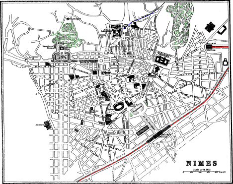
172 m. S.W. from Lyons, 27½ m. S.W. from Avignon, 31 m. N.E. from Montpellier by Gallargues, 17 m. W. from Tarascon, 80 m. N.W. from Marseilles, and 450 m. S.E. from Paris by Clermont-Ferrand, is
population 64,000, on the Vistre, 150 feet above the sea. A flight of steps as at Tarascon leads from the town up to the station. At the foot of these steps is the Hôtel des Arts, pretty comfortable room 2 frs., dinner with wine 3 frs. The trams start from in front of the house. In the town are: On the Esplanade, the H. Luxembourg, the most expensive. By the side of it, fronting a garden, the H. du Midi or Durand, from 9 to 12 frs. Fronting the amphitheatre the Cheval Blanc, commercial, 8 to 10 frs. Opposite the Maison Carrée, the H. Manivet, 9 to 12 frs., the most conveniently situated for visiting the sights. Their omnibuses await passengers at the foot of the station stair. Post Office, No. 4 B. du Grand Cours, between St. Baudine and the Public Gardens. Telegraph Office in the Place de la Salamandre, a small “Place” off the B. des Calquières. Temple Protestant, the Porte d’Auguste, and the handsome new church of St. Baudine, with its two elegant spires, are at the north end of the B. des Calquières, beyond the Esplanade.
Sights.—The Amphitheatre, the Maison Carrée, and the Roman Baths. Cab Stands are found at the station, at the Amphitheatre, and at the Maison Carrée. Cab carrying 4, 2 frs. per hour.
A straight, wide, and handsome avenue extends from the station to the Esplanade; having in the centre a large fountain with four marble colossal statues by Pradier round the base, representing the Rhône, the Gardon, and the fountain nymphs of Nemausa and Ura. On the top of the pedestal is a larger statue, also by Pradier, representing Nîmes, with its face towards the station. Behind it are the Palais de Justice and the Amphitheatre, and to the left the church of St. Perpetua.
Nîmes: Amphitheatre.
The great sight in Nîmes is the Roman Amphitheatre, the most perfect extant. In form it is elliptical, of which the great axis measures 437 ft., and the lesser 433 ft., and the height 70 ft. Around the building are two tiers of arcades, each tier having 60 arches, and all the arches being separated from each other by a Roman Doric column. Above runs an attic, from which project the consoles on which the beams that sustained the awning rested. Within each arcade, on the ground-floor and on the upper story, runs a corridor round the building, the upper one being roofed with stone slabs 18 ft. long, reaching 102 from side to side. There were four entrances, one facing each of the cardinal points of the compass. The interior contained 32 rows of seats in 4 zones, capable of accommodating from 18,000 to 20,000 spectators. The lowest zone corresponded to the dress circle, the others to the galleries. The present entrance is from the western side, fee 50 c., opposite No. 8 Place des Arènes. The stair that leads up to the top is under the fifth arch west. No description can express the sensation experienced from contemplating this vast Roman structure from the highest tier or from the edge of the outside wall. At the same time it must be remembered that there are no railings, and that an inadvertent step might have serious consequences. The date of the building is uncertain. Titus, Adrian, and Antoninus Pius have each been conjectured to have been the founder. The Visigoths converted it into a fortress, the Castrum Arenarum, occupied by the Saracens at the beginning of the 8th cent., till driven from France by the armies Charles of Martel; died in 715.
On the N. side of the amphitheatre is the Boulevard St. Antoine, with, on the left hand or W. side, the Palais des Beaux Arts, including the Public Library, containing 60,000 vols.; the Archæological Museum, containing many interesting articles, chiefly Roman, found in the neighbourhood; and the Picture Gallery, containing, among other pictures, a Magdalene by Guido; A Holy Family, a Head of John the Baptist, and a portrait of himself, by Titian; A Head of a Girl and a Return from Hunting, by Rubens; Portraits of Vanloo and of his mother, by himself; Cromwell regarding Charles I. laid out in his coffin, by Paul Delaroche, his chef d’œuvre; “Nero and a Sorceress experimenting on a slave with the poison they were preparing for Britannicus,” by Javier Sigalon; An old woman, by Greuze; also works by Gérard Dow, Claude Lorrain, Metzu, Ostade, Paul Potter, Ruysdael, Van den Welde, and Wouvermans.
At the N. end of this Boulevard is the church of St. Paul, with frescoes on gold and blue grounds by H. and P. Flandrin.
Nîmes: La Maison Carrée. Cathedral.
Beyond are the Theatre and the Bourse, and opposite them La Maison Carrée, a beautiful specimen of a Roman temple, probably part of the Forum, with which it was connected by colonnades extending east and west. It is 75 ft. long, 39 wide, and 39 high, and is supposed to have been erected in the time of Antoninus Pius. It stands on a platform, and is encompassed by a quadrilateral peristyle of 30 Roman-Corinthian columns surmounted by a plain architrave, scroll frieze, sculptured dentils, and a fluted cornice. All the columns are attached, 103 excepting the ten which support the pediment. In the area within the railing are mutilated statues and fragments of Roman columns.
Eastward, in the centre of the old town, is the Cathedral St. Castor, built in the 11th cent., but nearly rebuilt in subsequent times. The most venerable portion is the façade, constructed of large blocks of stone. A delicately-cut frieze, representing scenes from Genesis, extends under the roof. The eaves of the pediment are supported by brackets with acanthus leaves. The table of the third altar, right hand, in the interior, is sculptured in much the same style as the exterior frieze.
Nîmes: Roman Baths. Tourmagne. Fort.
N.W. from the Maison Carrée is the Public Garden, adorned with vases and statues among shrubs and flowers, overshadowed by tall elm and plane trees. To the left are the remains of a temple or fane (called the temple of Diana), dedicated to the Nymphs, built B.C. 24, of huge carefully-hewn blocks of sandstone, and reduced to its present state in 1577. The little of the ornamental work that remains is very much mutilated. Opposite the temple, protected from the troublesome winds of Nîmes, are the Roman Baths, about 12 ft. below the level of the gardens, the vaulting being supported on small columns, over which rise open stone balustrades. Adjoining is the copious spring that supplies them, as placid but somewhat larger than the Fontaine of Vaucluse (p. 65).
From the fountain a road leads up the wooded slopes of Mont Cavalier to an octagonal structure called the Tourmagne, 90 ft. high, erected before the Roman invasion, and supposed to have been a tomb. It was originally filled with rubble, which was excavated in the 16th cent. in search of treasure. The winding staircase of 140 steps was added in 1843. The view from the top is extensive. Fee, 30 cents.
Eastward from the Tourmagne is the Fort, built by Louis XIV., now the town prison. On the western side of the fort are the remains of the reservoir, castellum divisorium, which received the water brought by the canal from the aqueduct of the Pont-du-Gard. This canal still brings water to the town reservoir, on the opposite or east side of the fort.
In the year of Rome 788 a strong wall was built round Nîmes, 7 ft. high, pierced with 10 gates; of which there still remain two; the Porte d’Auguste, originally fronting the road to Rome, now at the E. end of the Temple Protestant, and the Porte de France at the extremity of the Rue Carrètérie. (See plan.)
The ancient name of Nîmes is Nemausus, one of the cities of Gallia 104 Narbonensis, and the capital of the Volcæ Arecomici. As early as the reign of Augustus it was a “colonia,” and possessed in the days of Strabo the “Jus Latii,” and therefore was independent of the Roman governors. Its most notable product then was cheese, which was exported to Rome; now it is raw silk, for which it is the principal emporium in the south of France. The wines of Nîmes are in repute in Paris, particularly the Costière and the St. Gilles, called also Vin de Remède. Both deteriorate after the sixth year in bottle. Nicot, who introduced tobacco into France, and Guizot, the minister of Louis Philippe, were born at Nîmes.
Pont-du-Gard.
13½ miles from Nîmes is the Pont-du-Gard, built by the Romans in the reign of Augustus as part of the aqueduct, 25 m. long, which, from the neighbourhood of Uzès (page 99), brought the waters of the Eure and Airan to the reservoir beside the fort, of which only vestiges now remain. This “Pont,” which spans the valley or banks of the river Gardon, consists of three rows of arches, whose total height above the bed of the river is 156 ft. The two lower stories are formed of hewn stones, placed together without the aid of any cement; but the mason work underneath the channel of the third or top story is of rough stones cemented, by which all filtration was prevented. The first or lowest row consists of six arches, with a span of 60 ft. each, except the largest, which has 75 ft. The second row consists of eleven arches of the same dimensions as the first, and the third of 35 arches of 15 ft. span. A stair from the right bank of the river leads up to the watercourse above the topmost tier of arches. In the striking boldness of its design this bridge exhibits a decided improvement and superiority over all the other Roman aqueducts. The arches are wider, and the piers in proportion lighter, and had the same principle been extended so as to have formed it of one single row from top to bottom, it would have equalled in the skill and disposition of its materials the more judicious and more elegant structures of modern times (see Roquefavour, p. 77). Take ticket to Pont-du-Gard Station. But if with luggage, and on the way to Avignon, take ticket to Remoulins, where leave the luggage, and take another ticket to the Pont-du-Gard, which having visited, walk back to Remoulins station, where take ticket for Pont Avignon (see under Avignon, p. 64).
79 m. S.E. from Nîmes by rail is Marseilles (p. 111), passing Tarascon, 17 m. (p. 66), and Arles, 25 m. (p. 68).
105Valleraugue.
See Map, p. 26.
58 m. N.W. by rail from Nîmes is Vigan, whence coach 43 m. W., 9 hrs., to Millau, on the line to Paris by Rodez. There are no towns of importance on this line, though some parts, especially towards Vigan, are very picturesque. 27 m. from Vigan, and 31 from Nîmes, is Quissac, pop. 1800, junction with line to Lezan, 9 m. N., and thence 4½ m. E. to Mas des Gard, on the Nîmes and Alais line. 9 m. W. from Lezan is St. Hippolyte-Le-Fort, pop. 4500, on the sluggish Vidourle. From this the line goes westward by La Cadière to Ganges, 9½ m. from Vigan, on the Hérault, 595 ft. above the sea, pop. 5000, H. Croix Blanche, omnibus at station. The most pleasant town on the line. 2½ m. farther is Jumène, 682 ft. above the sea, pop. 3000, with coal and iron mines. 4 m. from Vigan, at Le Pont, 666 ft. above the sea, the line crosses the Hérault, and entering the picturesque valley of the Arre follows the course of that river to Vigan, pop. 6000. Inns: Voyageurs; Cheval Blanc; both in the “Place,” near the statue of the Chevalier d’Assas, born at Vigan in 1733, and “Mort glorieusement à Clastercamp à 27 ans.” Vigan on the Arre, an affluent of the Hérault, is 860 ft. above the sea, in a hollow between steep mountains, with terraces of vineyards, olive, mulberry, fig, and chestnut trees to nearly their summits. The town consists of narrow, crooked, badly-paved streets. The hospital was founded in 1190. In the promenade near the post office are some old chestnut trees, disfigured with knots. In the neighbourhood are several coal-pits, worked, however, with difficulty, on account of the water they contain. Nearly a mile westward is the Fontaine Isis, the source of the water-supply of the town. Beside it are the cold sulphureous springs of Cauvalat.
Valleraugue.
Coach daily to Valleraugue, Inn: Aresque, 14 m. N., in a very picturesque region, on the Hérault, in a deep wooded valley between the Aigoual mountains towards the N., and the Espéron mountains towards the S. The principal source of the Hérault is a little higher, towards the W., at Séreyrède. From Valleraugue the ascent is made in about 2½ hours of Mt. Aulas, 4665 ft. above the sea, the culminating point of the Espéron, commanding a magnificent view. The source of the Dourbie is just a little to the S. of Valleraugue, and of the Tarn to the N., but on the other side of the Aigoual. Excellent fishing, botanising, and geologising in this neighbourhood.
Larzac.
Le Vigan to Millau, 43 m. W. by diligence, 9 hrs. The first village the coach passes is Molières, on a hill above the road, with coal-mines. From this the road ascends to the villages of Esparron, 5½ m., and Arre, 6¼ m., from Vigan. A little higher up the coach leaves by a tunnel the valley of the Arre, and enters that of the Vis, with the village Alzon, 12½ m. from Vigan, pop. 900. Inn: the Souterraine, the best on the road. After a pretty steep ascent of 7 m. the coach arrives at Sauclières, pop. 2200, Inn: H. du Nord, producing excellent 106 pork, cheese, and potatoes. The coach from this ascends the southern side of the Lenglas mountains, covered with vineyards, olive and mulberry trees, and farther up forests of chestnut trees. From the other side of the ridge it descends to the valley of the Dourbie, in which is St. Jean du Bruel, pop. 2000, Inn: Commerce, 23 m. from Vigan and 20 from Millau. The coach having traversed the valley of the Dourbie, full of chestnut trees, reaches Nant, pop. 2000, a poor village, on an eminence, 16 m. from Millau. Shortly afterwards the diligence crosses the monotonous tableland of Larzac, 2790 ft. above the sea, and arrives at the village of La Cavalerie, with some small dolmens. 7 m. W. is Millau, on the line to Paris by Rodez.